tile01 Bare trees are far too sparse and 30-45% too short; the painted dense twig clusters (crab-claw strokes) are missing.
tile01 Tree trunk bases get a cone/plinth flare that looks like a pedestal.
tile01 Terrain banks are smooth sand slopes without the painted rock ledges or ink texture.
tile01 Low water features (shoals, near-shore bands) are not represented in the heightfield.
tile01 Stepped blocky heightfield artefacts appear at tile edges.
tile02 Bare trees use a thin generic stick model: trunks 2-3x too thin and crowns far too sparse versus the painting's gnarled trunks and dense crab-claw twig clusters.
tile02 Far treeline leafy crowns are dark saturated green low-poly blobs; the painting has pale, faint, airy tufts. Use a lighter, desaturated, semi-transparent material.
tile02 Pack baskets on donkeys are rendered as square crates with dark tops; should be rounded tall baskets.
tile02 Structures marked NOT BUILT can still appear (flat plank deck at the footbridge): check what entry generated it and resolve any duplicates.
tile02 Terrain bank edges stop short of the tile edge, leaving water where the painting has land (check tile seams).
tile03 Trunkless 'misty wash' tree crowns are built as floating opaque green discs/blobs; anchor them to the ground or render them pale and semi-transparent.
tile03 Deciduous grove trees are opaque green ovoid lollipops; in this early-spring scene they should be leafless fine-twig crowns.
tile03 Pollarded willows are built as bare trunks without their round twig crowns.
tile03 Buildings with walls.material=open (thatched huts) are built as closed boxes.
tile03 Thatch roofs are flat and smooth with no shaggy eave fringe; tile roofs get a thick floating ridge beam.
tile04 Thatched rural huts are built as large pale timber box houses with gable roofs and windows: 2-3x too big, and dome/beehive roofs are not supported.
tile04 Bare trees are about 20-30% too short, with sparse straight branches; the painted crowns are dense twig clusters.
tile04 Near-bank rock mounds (terrain heightfield) are flat terraces with stair-step edges, not rock lumps.
tile04 Shrubs are saturated green polyhedra; the painting has ink-brown grass clumps.
tile04 The water mask appears to extend into areas the painting shows as dry ground (check the river start position).
tile05 Tall treeline trees remain 20-30% too short; trunks are bare poles with twigs only at the top.
tile05 Thatched huts still render as pale low-pitch plank roofs; adjacent huts merge and clip; need steep dark bulky thatch.
tile05 Willow generator makes straight radiating whips (pine/palm look) on a stub trunk; needs arching, drooping whips.
tile05 Water/terrain mask puts river where painting has bank ground with ink washes; check depth/water mask for wash areas.
tile05 Cast shadows, green backdrop cards and zigzag terrain shading artefacts persist.
tile06 Willows lack pollard form: no knotted head, trunks too thin and smooth, crowns 5-8 branches instead of dense radiating whip shoots, about 60% too short.
tile06 Tree trunk bases land 40-80 px above the painted base points; check the tree origin/root offset or the depth warp for near-bank rows.
tile06 Distant bare trees are sparse sticks; need layered horizontal crab-claw twig clusters and lower contrast.
tile06 Terrain water mask leaks onto the near bank (water where painting shows ground).
tile06 Green-tinted rectangular haze/backdrop cards visible with hard edges.
tile07 Willow crowns far too sparse: a few long straight sticks instead of dense fans of fine bare twigs.
tile07 Willow trunks are smooth tapered cones; they lack pollard knob heads, burls and hollows, and big trunks are about half the painted width.
tile07 Near-bank rocks and bank-edge mounds ('terrain heightfield') do not show; the ground reads as a flat grey plane.
tile07 Bare winter trees and stumps are sometimes given green leafy blob crowns.
tile07 Shed roofs are rendered as grey tile where the painting shows thatch.
tile08 Bare willows are modelled as sparse few-fork skeletons; the painted willows are dense masses of fine twigs on pollarded knobby trunks.
tile08 Brushwood and bramble fences are built as post-and-rail timber fences.
tile08 Mounted riders are not seated on their horses or donkeys (static ride figures stay at ground level or are hidden).
tile08 All men share one blue tunic and a box backpack regardless of load (round bundle, shoulder pole, none).
tile08 The closed sedan cabin rests on top of its shafts instead of hanging between them, and is too squat and wide.
tile08 Gates described as plain gaps are given roofs and posts like gatehouses.
tile09 All trees are low-poly forked sticks with a few branches; the painted willows and bare trees have dense radiating twig fans, so crowns need many more fine twigs.
tile09 Figures do not get smaller with distance: far-field figures are 2-3x larger than painted.
tile09 Objects in the road and field bands sit 60-110 px above their painted base points; check the depth warp and terrain height.
tile09 Tile roofs render as blue standing-seam metal; they should be dark grey with visible tile rows.
tile09 The terrain edge at the near bank shows hard stair-step polygons instead of a soft slope.
tile09 Field furrows and dikes are not modelled; the fields read as empty flat ground.
tile10 Pollard willows: trunks squat and about 2x too thick; crowns are radial straight sticks, not dense fans of fine curved twigs.
tile10 Shed eaves still 35-55 px too low; figures under eaves are half hidden.
tile10 Small structures (haystack) still built several times too large; the counter is built as octagonal drums.
tile10 Moored boats that sit against the near bank are not built; water fills their place.
tile10 Pavilion/neighbour roofs oversized and bury the trees and houses behind them.
tile10 Bare trees are Y-shaped with tufts at the tips; the painting has many fine twigs.
tile11 Tiled roofs far too large and deep, with eaves ~80-100 px too low; they hide interiors, galleries and treeline trees.
tile11 Thatched roofs are smooth flat pyramids; they should be thick, rounded, with a ragged eave.
tile11 Story props are not built (sack heaps, hawser coils, rudders), so worker groups act on nothing.
tile11 Quay edges are vertical grey stone walls instead of sloping earth banks, putting bank-slope figures in the water.
tile11 Willows have stiff, straight, leafy green twigs; early spring willows should be bare, fine and drooping.
tile11 Interior furniture (generic interior) is not visible under open sheds; tea-house tables are missing.
tile11 Ladders and gangplanks are placed upright or level instead of spanning boat to bank.
tile12 Riverbanks are built as cut-stone revetments; the painting shows earthen sloping banks.
tile12 Hip roofs on long buildings come out as square pyramids with radial ribs, and the footprint shifts.
tile12 Roofs are drawn over tree crowns, so trees poke through roofs.
tile12 Generic interiors leave open-front restaurant spaces empty; catalogued tables, benches and stools are not placed.
tile12 Boats seen from the stern are too small and too high, and the transom is not oriented to the viewer.
tile13 Boat cabins built as flat plank-roof boxes with windows; painted cargo boats use arched mat covers.
tile13 Buildings near the water get pyramidal hip roofs; painted waterfront halls use hip-gable roofs joined into one large hall.
tile13 Large buildings from neighbouring tiles project over the water (wrong depth/base), occluding boats.
tile13 North-street shop roofs too low/forward, forming a band that hides street-front stalls and figures.
tile13 Heightfield shows stair-step artifacts in open water near tile bottom.
tile14 Large boats sit too far toward the far bank: B0011's keel lands ~180 px above its painted base, so it covers the quay and the inner boat.
tile14 Boat hulls are still boxy: flat vertical bow/stern ends instead of curved rising bows and upswept stern overhangs; still somewhat shallow.
tile14 Mat awnings and canopies are now solid but flat cream slabs; they should be curved dark woven covers.
tile14 Cargo props (hooped bundles, rope coils, rudders, lowered masts), umbrella canopies and signs are still NOT BUILT.
tile14 Figures on boats are snapped to rails or hull outer faces instead of the deck.
tile14 Raised-floor halls render ~50-60 px low (floor and ridge both below the painted lines).
tile15 Middle-band (moored, second-row) boats are placed about 80-100 px too far back, relative to their painted bases.
tile15 Masts are built about half the painted height, and rigging (stays, tow lines) is mostly absent.
tile15 Boat deck props (coils, sacks, rudders, blinds) are not built or are buried in the hull, so decks look empty.
tile15 Solid cabin and awning boxes hide the figures and furniture that the painting shows through windows or open sides.
tile15 Placeholder '?' sign boards are visible in the render.
tile16 Boats get a generic railed roof deck and white cabin walls; mat-arch hoods and lattice cabins are not reproduced.
tile16 Open upper floors are closed by solid roofs, so figures placed there end up on the roof.
tile16 Ropes, rigging, tow lines, coils and windlass props are not built, and they define the river scenes.
tile16 Awning/shed roofs are built as tall steep gables instead of low flat mat awnings.
tile16 Hull length can differ from the painting by 100+ px, so figures and props at the hull ends land on water.
tile17 Hip roof corners render as fan-shaped rafter spikes and eaves carry spike ornaments
tile17 Boats built as boxy hulls with blunt ends; painted boats have upswept bows and arched-roof lattice deckhouses
tile17 Long thin props (masts, ropes, sweep oars, rudders) mostly NOT BUILT though they define the scene
tile17 Moored boats placed ~100-150 px higher (further) than painted base
tile17 Shrubs rendered as single flat octagonal discs
tile17 Riverside piles and natural banks replaced by stone quay walls
tile18 Willows are built as straight plank-like limbs with sparse hanging strands; the painted willows are dense, dark, gnarled and pollarded. Limbs are far too long.
tile18 Near-bank foreground buildings (faces north) land ~120-200 px too high in the warped view; check depth or row mapping for near-bank roofs.
tile18 Thatched roofs get grey ribbed tile material; roof meshes for some hip roofs break into fan geometry.
tile18 The haul_rope pose holds a straight stick and stands upright; tow ropes (props) are not built, so tracking scenes lose their rope.
tile18 Crowded crew groups on decks are compressed into a small cluster instead of spread over their painted bases.
tile18 Seated figures (sit pose) render standing.
tile18 Far-bank buildings and walls are too tall and merge into big grey ribbed masses.
tile19 Willows built as green leafy vertical weeping strands; the scroll shows bare early-spring willows with dense fine twigs swept diagonally
tile19 Far-bank roofs too tall or too large: they hide open shop fronts, sheds, and interior furniture
tile19 Boat cabins default to white-walled houses with windows; mat-arch (篷) cabins are lost
tile19 Thin linear props (poles, tow ropes, posts) are not built, yet they read clearly in the painting
tile19 Wicker jars and bales are built about half their painted height
tile20 Near-bank roofs still extend ~150-200 px north and too tall; they bury moored boats and street fronts.
tile20 Near-bank houses seen only as roofs in the painting are built as full walled boxes that cover open fronts.
tile20 Bridge deck too low and its top surface is shown; spectators float on a separate railing.
tile20 Boats lack masts, rigging and rudders (props NOT BUILT); hull sides too tall, so deck crew land on the side wall.
tile20 Lean_rail figures posed standing upright.
tile21 Umbrella stalls: poles too tall and canopies too large; canopies sit 80-180 px above the painted canopies and hide what is under them.
tile21 Rainbow Bridge placed about one deck width too far south-east, so the deck crowd is off the deck and the deck covers the water and the boats.
tile21 Huanmen/gate structures get red and blue banners and finials that the painting does not show.
tile21 Trees catalogued as bare_tree are built leafless, even where the painting shows dense frond (willow-like) foliage.
tile21 Large buildings painted corner-on are split into separate smaller roofs instead of one rotated hip roof.
tile22 Far-bank roofs are about 2x too deep in the 28-degree view: the eaves hang to the floor and hide the open shop fronts and their interiors
tile22 A moored boat that carries a person group is missing, so its people float; check that boats whose crew is built are themselves built
tile22 Mat-awning booths are built as steep tall gables; they should be low lean-to mats
tile22 Loaded pack donkeys (not catalogued as entries here) are absent; animals painted in a crowd need entries
tile22 Cart/animal/handler groups are not tied together: traces are missing and the cart is offset from its pullers
tile23 Wine-house main building with red eaves (x 0-600, y 1100-1600) is not built at all; check gid owner in tile22/23 and build it.
tile23 Near-bank land/water boundary is too far toward the viewer (y ~1130 instead of ~920), putting posts and props in water.
tile23 Building front fascias/walls close open shop bays, hiding tables and seated figures.
tile23 Hip roofs of light sheds built far too steep and tall.
tile23 Vertical poles (vane poles, flagpoles) too tall and missing their cross pieces; horizontal booms built as vertical posts.
tile23 Cloth banners, curtains and placards (sign/prop NOT BUILT) are visually important at shop gates and should be built.
tile24 All leafless shrubs (subtype shrub, painted in winter/early spring) are built as green faceted evergreen blobs; use a leafless twig-shrub asset.
tile24 Bare trees are far too sparse: crowns are a few sticks vs painted dense fine-twig fans; use crown.density and add a fine twig layer.
tile24 Upper-floor figures seem to be lifted to a wrong height (appear above roofs) and lose their sit/lean poses; check upper-floor z and pose mapping.
tile24 Buildings with an open upper floor or veranda are built as closed boxes with the main roof eave dropped over the open storey; storeys/eave_y from the spec are not respected.
tile24 Hip roofs with ridge along_front can come out rotated 90 deg when status says 'faces north'; check facing to ridge-direction mapping.
tile24 Pack donkeys are about 3x too large; animal scale needs checking against px_per_m.
tile24 Thin props (tow ropes, sweep oars) are NOT BUILT, but they carry key narrative; build them as simple lines/poles.
tile25 Hip/pyramidal roofs render with radial fan-shaped seams instead of parallel tile rows
tile25 Bare trees are thin sparse sticks; painted trees have dense wide twig crowns, about 2x wider
tile25 Upper-floor figures land on roofs when the building is built with too few storeys
tile25 Boat cabins default to a tall white plank house; painted cargo boats mostly have low arched mat cabins
tile25 Boat-deck props (bales, rope coils, poles, sweeps) are not built, leaving decks bare
tile26 Roofs of buildings owned by neighbouring tiles (here H0087 from tile27) are still mis-placed and drawn as two-tier hip roofs, burying whole scenes.
tile26 Rear roofs in the near-bank roof band still rise about 200 px too high (building depth or height overestimated), covering open halls behind them.
tile26 Houses seen only as roofs in the painting are built with tall white two-storey front walls that show in the gaps.
tile26 Mat lean-to roofs (H0080, H0089) are still built flat instead of sloped.
tile26 Big painted trees (gnarled old trees, pines) are still thin generic bare trees; fences fill places where foliage should be.
tile26 Mooring lines/poles are drawn as very long straight lines across the bank.
tile27 South-street buildings (faces north) have roofs too large and pushed north, burying street content behind them.
tile27 Thatched huts are built as tall tan gable blocks with board gables instead of low thatched huts with lattice gables.
tile27 Giant old trees are too short and thin; crowns end ~250 px below the painted tops.
tile27 Leafy globe crowns appear where the painting shows bare winter trees.
tile27 Open galleries and courtyards use generic interiors: walls hide visible tables and benches; open sides are needed.
tile27 NOT BUILT props (cart frame, flat wheel, plank pile) carry the scene meaning; build the large ones.
tile28 Freight carts built as smooth white barrel tunnels with solid disc wheels; painting shows shaggy straw-mat covers and spoked wheels.
tile28 Open-front buildings: eaves too low/roof too deep, hiding interiors that the painting shows fully.
tile28 Cloth banner signs built as oversized white boards (~2.5x too big).
tile28 Willows built as green leafy weeping strands; painting willows are bare with massive gnarled trunks.
tile28 Umbrella stall poles too tall (canopies ~100 px high in tile).
tile29 Hip roofs are built with a radial 'fan' hip end that reads as a cone; the painted hips have straight tile rows parallel to the eave
tile29 Building roofs are oversized: they rise too high and extend too far, by about 30-60% (H0107, H0108, H0110 here)
tile29 Bare trees and shrubs at the bottom of the scroll are far too sparse and thin compared with the dense painted clumps
tile29 Figures are uniform white-grey, with no clothing colours; seated and leaning poses often come out standing
tile29 Buildings whose base point lies at the tile edge (H0105) seem to be placed off-tile; check how the base is anchored for large footprints
tile30 Buildings seen from behind: eave_y-ridge_y vertical span is turned into roof height/rotation, producing giant tilted roofs
tile30 Sedans placed on the ground north of their base instead of slung on the carrying poles between bearers
tile30 Pollarded willows built as generic weeping willows; no knobby head, sparse crown
tile30 Pole loads default to round baskets regardless of described bundle type
tile31 Large foreground buildings whose painted base is the clipped tile bottom (base y=1800) are still not appearing; H0116 is missing again.
tile31 Oxen and pigs are now horizontal but built as faceted octagonal lens/saucer bodies on thin stick legs; they need deep rounded barrel bodies and thicker legs.
tile31 Covered carts are low boxes along x; painted carts are tall arched woven canopies, often seen obliquely.
tile31 Big baskets and goods heaps are still built at about a quarter of painted size; goods_display props are not built.
tile31 Generic interiors/fillers appear as plain white blocks at building fronts.
tile32 Pine crowns are built as opaque stacked green discs. Painted pines are airy needle sprays, so the 3D hides the buildings and water.
tile32 Bridge/deck depth is too shallow, so crowds painted on the near half end up standing in the water. Check every bridge deck against both painted rails.
tile32 Far-bank tile roofs merge into long, almost flat grey slabs with no ridges or tile pitch.
tile32 Far-distance figures are about 2x too large relative to buildings.
tile32 Rail-leaning figures are built as upright T-poses, so the lean_rail pose does not read.
tile32 Donkeys are built as beige boxes with no dark colour or donkey silhouette.
tile33 Water mask extends over land: the road and near bank are rendered as water.
tile33 Elements with band bridge_deck are lifted onto a raised deck even when the painting shows them on the road.
tile33 NOT BUILT bridges leave the people meant to be on them standing in water.
tile33 Bare trees and willows are too sparse (straight sticks); the painted crowns are dense fine-twig masses.
tile33 Tree branches pass through building roofs; no collision clearance.
tile33 Buildings that are barely visible behind trees are built full-size and dominate the view.
tile33 Bare or elm trees get green disc foliage; seasonal state not respected.
tile33 Riders are not seated on their horses.
tile34 Monumental structures (gate tower and platform) are built as flat-topped boxes: no hip roofs, eaves, brackets or battered walls.
tile34 Pine crowns are stacked flat umbrella discs; the painted pines have irregular needle tufts and gnarled visible trunks.
tile34 Animals and figures that come out of openings end up inside solid volumes, because the openings are not cut.
tile35 Wall/platform structures (plan wall lines) are extruded as solid vertical blocks, with no terraces, slopes or railings
tile35 bare_tree assets are far too sparse; painted trees near the gate have dense needle-tufted crowns
tile35 Some bare_tree entries are rendered as green-leaf willows (wrong species model)
tile35 Camel packs are all generic blue boxes; the painted packs are tall frames with poles
tile35 Open-front offices and shops are built as closed walled boxes, hiding the interior figures and furniture
tile36 Hip/corner roof sections render as radial fans of separate slats (broken corner mesh) on many buildings
tile36 Foreground (south-band) roofs are too deep or too tall and hide the street figures behind them
tile36 Willows are built with green drooping strands, but the painting shows bare, leafless spring willows with thick dark trunks
tile36 leafy_tree uses green lumpy blob crowns where the painting shows bare twiggy trees
tile36 Upper-floor (upper_floor band) people end up on the ground behind buildings when the upper storey is not modelled
tile36 Huanmen scaffolds use generic gem ornaments and poles that are too long downward
tile36 Camels/pack animals at the right edge are built as horse-like boxes with no humps
tile37 Sedans still sit ~120-180 px north of their painted base; check the sedan origin or base offset.
tile37 Sedan bearers are not attached to the sedan poles; they stand apart with raised arms.
tile37 Huanmen is still built as a full-height pole/lantern/banner grid to street level, not an upper crest frame with spires.
tile37 Big baskets ignore bbox width (3-4x too small).
tile37 Low south-bank houses get tall exposed white walls (2-2.5x too tall); the painting shows mostly roofs.
tile37 Two-storey eave_y still not respected (H0137 upper floor hidden).
tile37 Trees now render, but crowns are sparse (about half the painted density).
tile38 Large buildings are built too deep: footprints run 150-250 px north past the painted base, burying street figures and props.
tile38 Complex hipped/cross-gable roofs with upturned eaves are built as plain flat gables.
tile38 Upper-floor open galleries are closed by roof slopes, hiding interior furniture and seated figures.
tile38 Umbrella stalls: canopies too small; griddle stalls become square tables with bowls.
tile38 Prominent standing and hanging signboards are mostly NOT BUILT.
tile39 Stall umbrella poles ~45% too tall; canopies dark navy domes instead of wide flat tan-brown.
tile39 Conical straw hats assigned to far too many figures; painting mostly shows caps and headcloths.
tile39 Large hip roofs: tile courses fan radially and ridges too high, hiding far-street objects behind.
tile39 Building-front attachments (huanmen, standing sign) placed ~200 px south of their painted position.
tile39 Harnessed animals with status 'built figure static' not appearing in render (A0111, A0112).
tile39 Pine form inconsistent: some built as stacked fir cones, others with bamboo-like hanging sticks.
tile39 Stall counters built as tall solid boxes hiding seated vendors.
tile40 Screen/A-frame structures still built as solid boxes.
tile40 Mat awnings still too low with a box valance; seated figures pierce them.
tile40 Parasol and peddler-rack props still NOT BUILT though visually dominant.
tile40 Bamboo clumps built as flat sprigs lying on roofs instead of upright tall clumps.
tile40 Willow crowns built as stiff straight spikes; need dense curved drooping branchlets.
tile40 Shrubs still bundles of spear-like stems.
tile40 Wells built as upright frames on raised plinths instead of flat frames on flush paving.
tile40 Buckets squat and wide; need taller, narrower forms with handles.
tile40 Shop-front plaque rows and post signboards placed ~90-260 px too low; signs freestanding instead of mounted on posts.
tile40 Crowd clothing nearly uniform blue jackets with X straps and black hats.
tile41 Sign boards are drifting: boards marked NOT BUILT still appear, duplicated or moved to the ground, and post-mounted boards stand on the ground.
tile41 Gatehouses and shopfronts are built as closed boxes with narrow doors; open gates with door leaves and dougong are lost.
tile41 Hip-and-gable roofs seen obliquely are built as symmetric hip roofs facing the camera.
tile41 Pines are drawn as stacked cones instead of flat fan-shaped needle clusters.
tile41 Rolled umbrellas and long carried objects come out as open parasols.
tile01 · 0.0–15.8 cm 3/5
正确 2 · 有误 3 · 缺失 2 · 忽略 0
The layout reads as the same opening scene: a donkey train on a path on the far bank, a cluster of bare trees, and a broad river below. The trees are the weakest part. T0001 and T0003 are sparse low-poly sticks, 130-180 px too short, with no dense gnarled twig crowns, and T0001 stands on an odd cone-shaped plinth. The bank is a smooth pale slope without the painted rocky ink ledges. The shoal X0003 and the near-shore band X0002 are absent. There are also extras: green shrubs top-left, an oversized plank platform at the left edge, and a stepped terrain artefact bottom-right.
得分与判定来自第一轮（修正前）；图为修正后的第二轮渲染，第一轮渲染见下。
第一轮渲染（修正前）
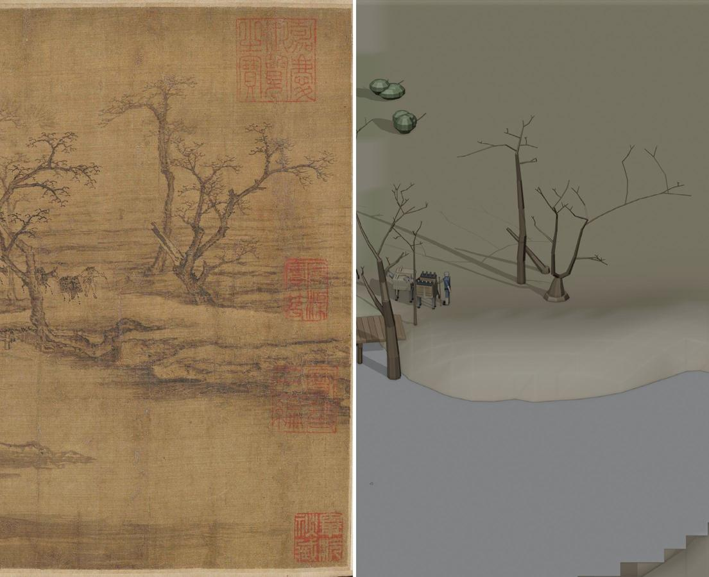
有误与缺失（5）
编号
类型
判定
问题
修正
T0001
tree
有误
Built as a thin V-fork on a cone pedestal at x 590-660; crown top y~560 vs painted ~380; twigs very sparse, stems not gnarled.
Remove the cone base; height about 45% taller; two gnarled stems leaning left from x 560-720; dense spreading crown to x 1070.
X0001
structure
有误
Bank edge is in the right place (y ~1180-1250) but is a smooth uniform sand slope, with no rocky ledges or dark ink strata.
Add 2-3 stepped rocky ledges y 1000-1250, darker earth/rock material, irregular water edge.
X0002
structure
缺失
Dark near-shore band y 1600-1770 not visible; render shows flat water plus a staircase artefact at the right.
Add a low dark shore/shoal strip across the full width at y 1600-1770, just above the water.
T0003
tree
有误
Straight trunk at x 510-530 correct, but top at y~360 vs painted ~230 and crown is a few sticks, not bending left.
Height about 35% taller; add a leaning-left crown with dense twig clusters at y 230-450.
X0003
structure
缺失
Ink-washed sandbar at lower left x 0-320 y 1370-1470 absent; only a tiny speck in the water.
Add a low flat sandbar in the water x 0-320 y 1370-1470, tapering to the right, barely above water level.
人群
path by donkeys x 100-330 y 820-950：画中约 1 人，模型 1 人。Drover P0001 present behind laden donkey, walking left; placement good. General impression fine.
模型多出的东西
(110, 330) Two clumps of green round shrubs/rocks at x 40-190 y 240-420; painting shows empty misty field there.
(75, 1020) Large wooden plank platform/bridge at x 0-150 y 980-1070; painting has only a small low fence/bridge at the very edge, much smaller.
(960, 1720) Stair-stepped grey terrain blocks at x 830-1100 y 1630-1800; heightfield or tile-boundary artefact.
(145, 850) White donkey at x 120-180 ahead of A0001; painting shows a dark donkey there. Probably owned by another tile, but its colour is wrong.
tile02 · 12.9–28.7 cm 3/5
正确 15 · 有误 7 · 缺失 1 · 忽略 2
Layout reads correctly: grove of bare trees on the left bank, donkey train walking left on the far path, footbridge over the creek, small punt below it, sand spit and open river below. The worst problem is the grove itself: the painting's massive gnarled trunks with dense crab-claw crowns covering y 280-900 are rendered as a few thin, sparse stick trees, so the tile loses its dominant mass. The footbridge (listed NOT BUILT) appears as a flat, deep plank deck instead of a narrow humped trestle bridge. The left bank terrain stops about 100 px short of the tile's left edge, leaving water where the painting has earth bank and T0021's bushes. Far treeline crowns are dark saturated green blobs where the painting has pale, faint tufts.
得分与判定来自第一轮（修正前）；图为修正后的第二轮渲染，第一轮渲染见下。
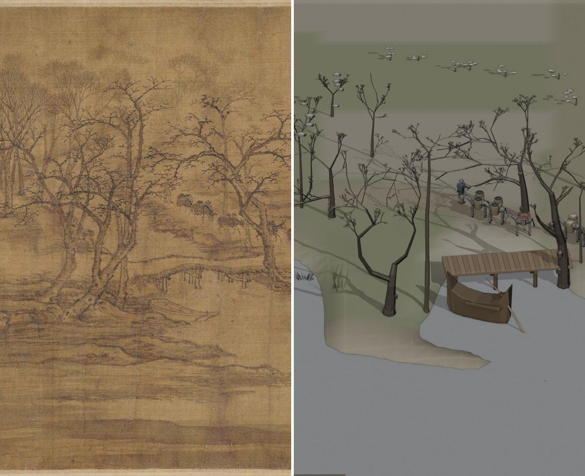
第一轮渲染（修正前）
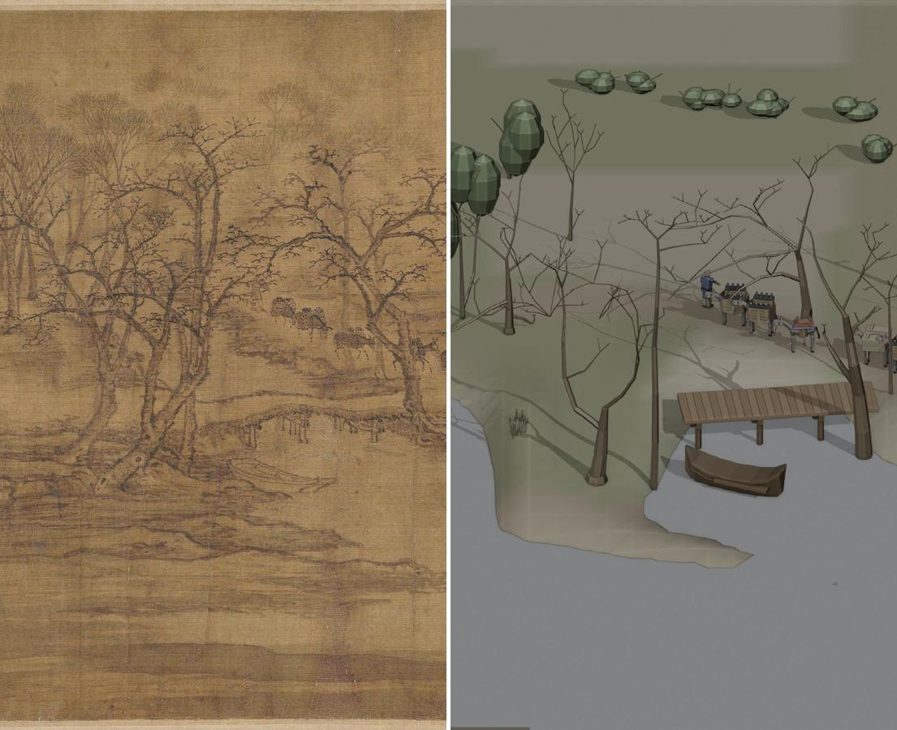
有误与缺失（8）
编号
类型
判定
问题
修正
T0007
tree
有误
Present at x~1010 but trunk thin and leaning; painting has a very thick knotted trunk (x 980-1060) and broad crown to y 380.
Trunk at x~865 correct, but crown is a few thin twigs; painting has long heavy arching limbs filling x 545-920, y 330-700.
trunk diameter x2; add 4-5 thick limbs arching left to x 550; dense crab-claw twig clusters
X0008
structure
有误
Spit tip near (750,1375) is right, but it is drawn as the end of a single pale bank; painting shows layered dark bank bands to y~1450.
darken spit material; add a second low bank layer y 1380-1450 across x 0-880
T0012
tree
有误
Base at x~505 correct, but trunk is a thin pole with almost no crown; painting trunk x 440-520 rises to a full crown near y 280.
trunk diameter x2; add crown of crab-claw branches over x 400-640, y 280-600
T0014
tree
有误
Base at (365,1195) correct, but trunk is slim and crown sparse; painting's largest gnarled trunk (x 320-420) with knot holes and wide crown x 150-620.
trunk diameter x3, bend right then up, add knot holes; crown spread x 150-620 down to y 300
X0010
structure
有误
Excluded correctly as quay, but terrain bank stops at x~100; water fills x 0-100, y 950-1300 where painting has earth bank.
extend left-bank terrain to x 0 across y 950-1450
T0021
tree
缺失
Base (40,1135) falls in water in 3D; no bushes visible at the left margin.
rebuild after extending the bank; low dark shrub clump 80 px wide at (40,1135)
人群
donkey path x 600-1100 y 680-920：画中约 1 人，模型 1 人。Driver P0002 walks left ahead of the train in both; position and facing correct. No other figures in this tile.
模型多出的东西
(110, 380) Three dark green cone/cypress trees x 5-230, y 245-540; painting has pale tall trunks with faint tufted crowns there (probably tile01 trees).
(160, 1040) Small spiky reed/grass tuft on the bank; nothing distinct painted there (possibly displaced T0021).
(130, 600) Two tall thin bare trunks x 100-200 based near y 800; painting has tall pale trunks at x 20-80, so about 80 px too far right.
tile03 · 25.8–41.6 cm 3/5
正确 11 · 有误 11 · 缺失 2 · 忽略 3
Base points of the farm group (farmhouse, thatched hut, shed, tables, bench) and the grove land correctly, so the layout reads as the same place. Forms are weak: the thatched hut H0003 is a closed pale box instead of an open-front hut with a shaggy thatch eave, and the farmhouse roof has a floating ridge beam and a stray vertical slab above it. Trees are the worst problem: the big pollarded willow T0025 has no twig crown, T0027 is not visible, the misty wash crowns (T0024, T0026, T0028) float as trunkless green discs, and the grove trees are opaque green lollipops instead of tall fine-twig crowns. The distant hill X0013 is missing.
得分与判定来自第一轮（修正前）；图为修正后的第二轮渲染，第一轮渲染见下。
第一轮渲染（修正前）
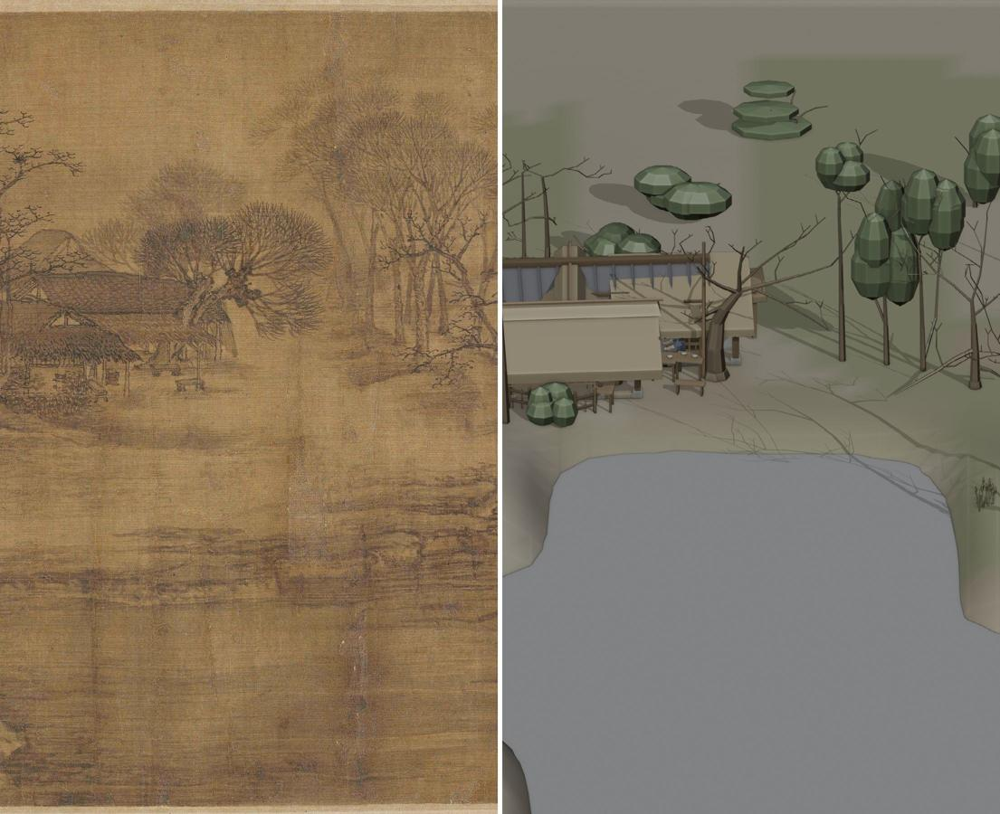
有误与缺失（13）
编号
类型
判定
问题
修正
T0020
tree
有误
Built as dense green ovoid crown; painting shows broad fine-twig near-bare crown reaching y~230; 3D crown top ~y 390.
Opaque green lollipop crown; painting is a dense fine-twig (leafless) crown y 300-630.
switch to fine-twig deciduous crown, keep size
T0023
tree
有误
Green clustered crown at y~310-430; painted crown is y 190-340, a soft misty crown on a tall straight trunk.
height ~25% taller; misty fine-twig crown
T0024
tree
有误
Built as three flat stacked green discs floating with no trunk; the shadow falls far away on the ground.
give a trunk down to the grove ground (~y 790) or render as a pale wash tree; no disc stack
T0025
tree
有误
Only a thick trunk with a few bare branches; the big round crown of fine twigs (x 400-735, y 440-725) is missing; trunk ~40 px left and ~80 px low.
add pollard head + round fine-twig crown 330 px wide; move trunk to x~540, base y~740
T0026
tree
有误
Trunkless green blob crown floating at y 370-480 above the willow.
pale wash crown with trunk hidden behind the willow, or lower/attach to the ground
H0001
building
有误
Open shed in the right place, but the roof is a flat plain slab with no thatch fringe; its right end reaches x~555 (painted ~525).
shorten 30 px on the right; thatch cover with shaggy eave fringe; steeper lean-to slope
T0027
tree
缺失
No round willow twig crown above the shed roof (x 290-490, y 450-610); only stray bare branches.
build a round brush crown of thin upward twigs on a trunk behind the shed
T0028
tree
有误
Green trunkless blob floating behind the farmhouse ridge, y 490-560; painting is a pale grey wash clump.
pale semi-transparent wash crown; anchor its base behind the house at y~600
F0004
furniture
有误
Basket stack is hidden: the closed front wall of H0003 covers the hut interior.
fixed by opening H0003 front; keep the basket at 251,852
H0002
building
有误
Tile roof reads as a steep curtain with hanging ribs; a thick ridge beam floats at y~570 (painted ridge 598); a pale vertical slab at x 115-185 sticks up to y~535.
ridge down ~25 px, thin ridge; roof pitch lower; remove/lower the vertical slab; show left gable panel
H0003
building
有误
Built as a closed pale box (solid front y 665-850, x 0-350) with a smooth roof; the painting shows an open-front hut on posts with a heavy shaggy thatch eave at y 748-800.
walls open (colonnade, 3 bays); thatch fringe band y 748-800; right end at x 300, not 350
X0013
structure
缺失
Rounded distant hill behind the farmhouse (x 60-235, y 490-600) is not in the terrain; only grey flat ground and bare trees.
add low rounded hill in the heightfield behind H0002, peak ~y 490
人群
under the shed x 340-450 y 740-830：画中约 1 人，模型 1 人。One possible seated figure in the painting (uncertain); 3D has one seated blue figure at the table, acceptable.
模型多出的东西
(110, 895) Three large green octagonal bushes in front of the hut fence; not in the painting, they hide the fence.
(150, 590) Pale vertical slab/gable wall rising above the farmhouse ridge (x 115-185, y 535-650), maybe the H0004 gable from tile04.
(500, 1300) Large flat grey water body from y~1000 down; the painting's lower half is a misty bank with horizontal wash strokes, and no water edge is clearly drawn.
tile04 · 38.7–54.5 cm 2/5
正确 10 · 有误 9 · 缺失 3 · 忽略 0
The tree grove matches in placement: trunk positions, shrub rows and the fence line line up within about 30 px. The farm buildings do not read as the painted rustic compound. They are built as large pale timber boxes with gable roofs and windows, while the painting has a dome thatch hut, a dark beehive shed, a tiny shrine hut and small open thatched gables. The main trees are 100-150 px too short and their crowns are sparse. The spreading horizontal limbs of T0039 are missing. A grey water channel crosses the middle and lower part of the tile (y 1200-1460), where the painting shows dry misty ground with ink washes, and the near-bank rocks are flat terraces.
得分与判定来自第一轮（修正前）；图为修正后的第二轮渲染，第一轮渲染见下。
第一轮渲染（修正前）
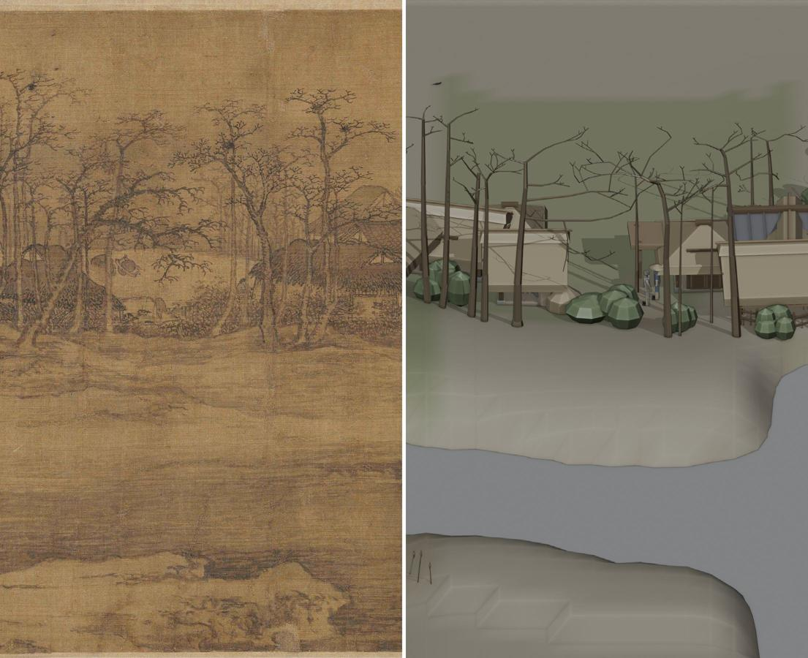
有误与缺失（13）
编号
类型
判定
问题
修正
H0004
building
有误
Rendered as a large pale box building about 250 px wide (x 850-1100, y 670-850). The painting has a small open thatched gable (1010-1100, 668-725).
Build as a small open thatched gable shed, front width 80 px, eave y 720. Scale down about 3x.
T0032
tree
有误
Tallest tree: 3D crown top about y 400, painted y 240; about 160 px too short, crown sparse.
Height about 25% taller (crown top to y 240); add dense twig clusters.
H0005
building
有误
Built as a gable house with a timber front and windows (x 600-860). The painting has a dome/beehive thatch hut (765-912) with no straight ridge.
roof.type = dome/conical thatch, apex (817,653), no walls visible; remove the left wing from x 600-700.
T0036
tree
有误
Leaning trunk present at x ~700, but crown top about y 420 vs 290 painted. The lean to the left toward x 600 is too weak.
Height 30% taller; lean crown 90 px left to 470-720.
X0017
structure
有误
Near-bank rocks are a flat pale terrace with stepped edges. The painting shows dark ink-washed rock outcrops with crevices.
Raise the heightfield into irregular rock lumps 430-790; add darker rock material.
X0018
structure
有误
Appears as an angular pale lump (370-440, 800-850), not a tall hatched stack with a central pole.
Build as a rounded haystack 40 px wide, 58 px tall, with a central pole at x 435.
T0039
tree
有误
Trunk at x 300-330 present, but the long near-horizontal limbs at y 520-630 reaching x 635 are missing; there is only one upward branch.
Add the 2 horizontal limbs from the spec branches (y 520 and 585 to x 625-635).
A0006
animal
缺失
Lying pale animal at (394,862) is not visible in the render.
Check placement; place a lying pig/dog figure 37 px long at (394,862), on the ground.
O0004
prop
缺失
Drum/windlass with crossed lashings on an L-frame post is clearly painted at 318-392, 698-760; not built.
Build as a drum 70 px diameter with cross lashings on an L-shaped post.
H0006
building
缺失
Tiny thatched shrine hut at (326,872) is not visible; the large box building covers the area.
Build as a tiny thatched gable hut 40 px wide, open front, base (326,872).
H0007
building
有误
No dark round dome shed is visible. A large pale box building with a gable roof stands at x 200-440, y 590-830 instead.
Build as a dark round thatch dome 68 px wide, base (284,762). Remove or shrink the box.
X0019
structure
有误
Large near-bank rock mass is a flat pale terrace with step edges and no dark ink top outline.
Raise the heightfield into a rock mass with a defined top ridge; darker crevices.
P0004
person
有误
Painted as a small dark shape (possibly child) 20x42 px; model is adult height.
Scale to child height (about 60%) or build as a stump/sack.
人群
grove path x 640-700 y 750-840：画中约 2 人，模型 2 人。Walking man and small figure present. The small figure P0004 is built adult-sized and grey.
模型多出的东西
(500, 1330) A grey water channel crosses the tile at y 1200-1460 and down the right edge from y 1000. The painting shows dry misty ground with horizontal ink washes.
(980, 620) Blue-grey roof slab (880-1100, 570-680), probably a neighbouring building in a wrong colour/size; the painting has dark thatch here.
(150, 600) Second large pale building with a sloped roof at x 0-300, y 560-620. The painting has low dark thatched roofs here.
(35, 1540) Three thin spike/pole props at x 10-60, y 1490-1590 on the near bank; nothing painted there.
tile05 · 51.6–67.4 cm 2/5
正确 7 · 有误 10 · 缺失 3 · 忽略 0
The overall layout still reads (bare grove on a raised bank, huts in the middle, pollard willow at left), but the huts are the main failure: H0009 and H0008 merge into one wide pale low-pitch plank roof (x ~380-1100) with a tilted slab clipping through H0008, and H0010 is a tall box shed on posts, none of them steep dark thatch. The right-hand tall trees are still 120-220 px too short, so bird A0007 floats in sky. The willow now has many whips but they radiate straight like pine needles from a short stub trunk. A blue-grey water band now fills y ~1180-1650, where the painting shows bank ground with ink washes, and it erases the reeds T0044.
第二轮复核（修正生成器与布局后，第一轮得分 2/5）：Improved: T0043 is now twig scrub, willow has many whips, tree tips have claw tufts, H0010 is now a shed instead of a bare panel (still too tall). Still wrong: huts pale/merged/clipping, right trees short, A0007 floating, T0046/T0050 missing, shadows/haze. New: water band erases bank and reeds T0044.
第一轮渲染（修正前）
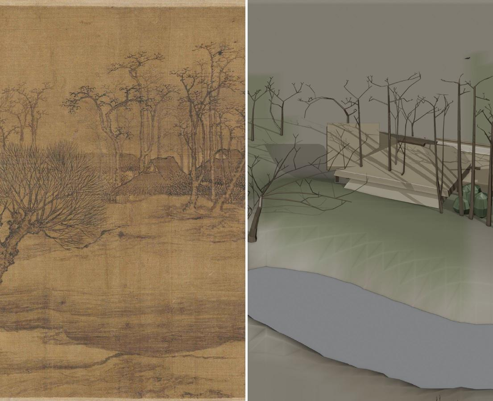
有误与缺失（13）
编号
类型
判定
问题
修正
T0041
tree
有误
Edge tree trunk at x ~1082 ok; crown top y ~450 vs painted 330, ~120 px short.
height +20%
T0042
tree
有误
Trunk at x ~1015 ok; crown top y ~440 vs painted 200, ~240 px (30%) short.
height +35%; crown spread y 200-350
A0007
animal
有误
Bird at (982,260) floats in empty sky ~150 px above any crown.
attach to crown branch of T0045/T0042 after raising trees
H0008
building
有误
Pale plank wall and log ridge at y ~610 merged with H0009; H0009 roof slab clips diagonally through it; no thatch, no pale gable opening.
separate hut, steep dark thatched hip-gable roof, ridge y 665, small pale gable x 970-1030; fix H0009 overlap
T0044
tree
缺失
Bottom-right reed tufts not visible; area is water/bare beige strip.
restore reeds at (960,1800) on land after fixing water extent
T0045
tree
有误
Trunk at x ~945 ok; crown top y ~410 vs painted 180, ~230 px (30%) short; bare pole with twigs only at top.
height +35%; crab-claw crown y 180-300; side branches lower on trunk
T0046
tree
缺失
Scrub between the huts not visible; only trunks and roof slab at (845,860).
build dark twig scrub ~110 x 100 px at (845,860), in front of roof eave
X0020
structure
有误
Bank present but its front edge drops to water at y ~1180; zigzag triangle shading artefacts remain; no ink bank-edge bands.
extend bank ground to y ~1350; remove zigzag shading; darker bank-edge bands y 1000-1250
H0009
building
有误
Wide pale low-pitch plank hip roof x ~470-1000, eave forward to y ~965 (base 895); log ridge y ~630 vs peak 700; not compact thatch.
roof.type = steep thatched hip, pitch ~50°, width 350 px (x 495-845), dark thatch, eave at y ~880
T0049
tree
有误
Trunk at x ~640 ok; crown top y ~370 vs painted 230, ~140 px short.
height +20%; crab-claw crown y 230-330
T0050
tree
缺失
Fine-twig bush at left end of main hut not visible; spot covered by shed H0010 / roof.
build twig bush ~90 x 110 px at (575,810), in front of hut wall
H0010
building
有误
Tall box shed on posts x ~376-570, top y ~620 with upright pale roof panel; painted is low hatched thatch mass top y 760.
low thatched lean-to x 430-520, top y 760, no posts or tall panel
T0053
tree
有误
Many whips now, but straight and radiating like pine needles from a short stub trunk; head y ~930, trunk base y ~1135 vs 1250.
taller knotted forked trunk to y 1250; whips thinner, curved, arching then drooping; more of them
人群
whole tile：画中约 0 人，模型 0 人。No people in painting or 3D. Correct.
模型多出的东西
(500, 1400) Blue-grey water band across the tile, y ~1180-1650 (left) to 1350-1730 (right); painting shows bank ground with ink washes.
(200, 750) Dark grey shadowed slab x ~100-300, y 700-800 behind the willow; nothing painted there.
(80, 480) Green haze backdrop x 0-180, y 335-650 (fainter than round 1).
(1050, 450) Green haze strip x ~1000-1100, y 235-700 at right edge.
(700, 650) Hard cast shadows of trunks streaked across roofs and ground; painting is shadowless.
tile06 · 64.6–80.3 cm 2/5
正确 3 · 有误 6 · 缺失 0 · 忽略 1
Tile is a grove of five large pollarded willows on the near bank, with faint distant trees behind. The 3D has a trunk near each willow and stick trees at the distant positions, but it reads as a different scene. The willows are plain tapered cones with no knotted pollard heads, and each crown has 5-8 thin branches instead of a dense dome of whip shoots, reaching only y~760 where the painting reaches y~170-300. A pale-blue water body covers the lower right (x 740-1100, y 1370-1800) where the painting shows a dry bank. Most trunk bases sit 40-80 px above their painted base points.
得分与判定来自第一轮（修正前）；图为修正后的第二轮渲染，第一轮渲染见下。
第一轮渲染（修正前）
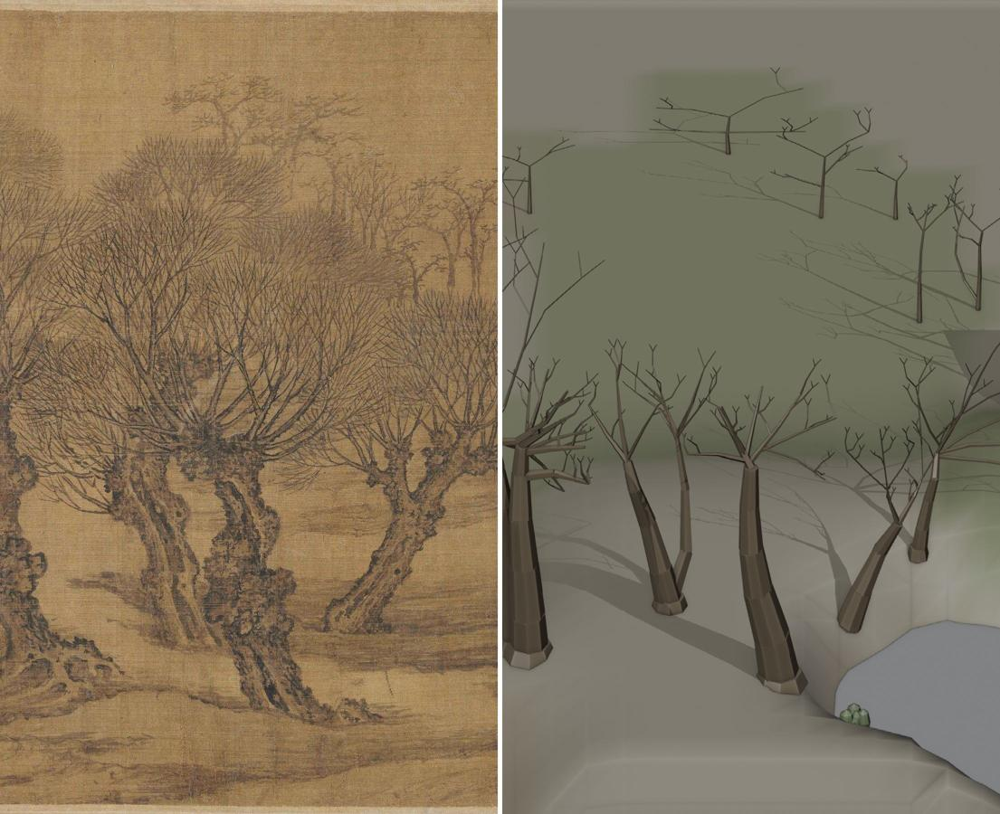
有误与缺失（6）
编号
类型
判定
问题
修正
T0056
tree
有误
Trunk base ~75 px left of painted base (at x~770 vs 845); plain cone, no knotted pollard head; crown only a few sparse branches.
Move 75 px right; add bulbous pollard head at y~1000; dense whip-shoot crown up to y~600.
T0058
tree
有误
Rendered as a bright green lumpy bush sitting on the water's edge; painting shows a small dark stump/sapling on dry ground.
Make dark brown-grey low stump with twigs; fix terrain so it stands on dry bank.
T0061
tree
有误
Base ~80 px too high (y~1515 vs 1595); straight cone with no massive hollow knotted trunk or pollard head; crown tops out at y~760 vs 170.
Lower base 80 px; trunk 2x thicker, gnarled, lean more left to head at ~(470,950); crown dense shoots up to y~170.
T0062
tree
有误
Single stick with a few long horizontal branches; painting shows a wide crown (x 360-630) of layered crab-claw twig clusters.
Build as distant bare tree, crown width ~270 px, 3-4 stacked flat twig clusters, pale tone.
T0063
tree
有误
Base ~40 px right and ~75 px high (370,1345 vs 330,1420); lean direction ok; no pollard head; crown too sparse, top y~760 vs 300.
Move 40 px left, 75 px down; add pollard head ~(280,1000); dense whip-shoot crown to y~300.
T0064
tree
有误
Trunk is a vertical cone at x~35-110 with base ~110 px left of the painted root base; no spreading roots or pollard head; crown sparse.
Shift base to (165,1480) with root flare spreading right; massive knotted trunk; dense crown filling y 220-900 at left edge.
人群
whole tile：画中约 0 人，模型 0 人。No figures in this tile; none in 3D. Correct.
模型多出的东西
(920, 1500) Pale-blue water body covering x 740-1100, y 1370-1800; painting shows dry near bank with ink ground strokes.
(920, 1230) Extra willow-like trunk (base ~920,1230) right of T0056, no painted counterpart at that spot.
(390, 1260) Second thin trunk directly behind T0063; possibly T0060 built despite exclusion.
(1040, 850) Grey wall/box block at right edge, x ~990-1100, y ~700-1000; painting has only trees there.
(550, 400) Flat green rectangular backdrop panels behind the distant trees, with hard edges; painting has plain silk haze.
tile07 · 77.5–93.3 cm 2/5
正确 1 · 有误 5 · 缺失 4 · 忽略 2
The tree positions mostly match: the central willows T0068, T0067 and T0070 stand on their painted bases, and the far willow T0069 and the rail behind it are in place. The trees themselves do not read as the painting's willows. The painting shows massive burled, hollowed, pollarded trunks with dense sprays of fine twigs; the 3D has smooth tapered cones with a few long straight sticks. The big willow T0066 is about 90 px right and 95 px up from its painted base, and its trunk is about half the painted girth. The near-bank boulders and the eroded bank edge (X0021, X0023) do not show at all, because the ground is flat grey. The left shed has a grey-blue tiled roof where the painting shows thatch, and green leafy blobs sit at the foot of T0074.
得分与判定来自第一轮（修正前）；图为修正后的第二轮渲染，第一轮渲染见下。
第一轮渲染（修正前）
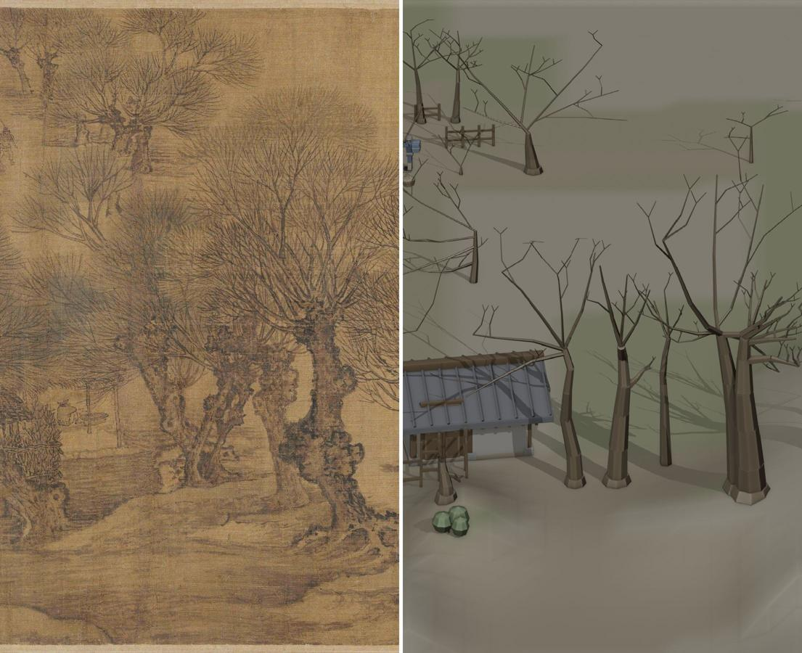
有误与缺失（9）
编号
类型
判定
问题
修正
T0066
tree
有误
Base at about (925,1360), not (830,1455). Smooth cone trunk about 100 px wide; the painting has a ~200 px burled, hollowed trunk on boulders. Crown too sparse.
Move base to (830,1455) on the bank-edge mound; trunk_width_px 190; add burls and a hollow; double the twig density.
T0068
tree
有误
In place, but drawn as a smooth tapered pole; the painting shows a thick knobby pollard head at y 850-960 with dense twig sprays.
Add a pollard knob head (about 120 px wide) at y 850-960; trunk wider and gnarled; dense short twigs from the head.
T0069
tree
有误
Thin straight trunk with about 6 long sticks; the painting has a dark knobby pollard head at y 330-420 with a wide dense twig spray.
Add a knobby pollard head; trunk_width 50; twig density high, crown spread x 170-590.
T0070
tree
有误
Trunk stands at about (470,1335), which matches the spec, but it is a straight cone; the painted crown of fine twigs spreading left over the shed is almost absent.
Curve and gnarl the trunk; add dense twig fans reaching left to x 0-130 above the shed.
T0074
tree
有误
The stump is present, but two green leafy blob shrubs sit at (130-180,1360-1420); the painting has a bare stump with a few shoots.
Remove the green blob crown; give the stump 3 short bare shoots only.
X0021
structure
缺失
Dark boulders and roots at the foot of T0066 are not visible; the ground is flat and smooth.
Add a cluster of 5-8 dark rocks (0.5-1 m) plus a raised bank lip at x 840-1100, y 1400-1510.
X0023
structure
缺失
The eroded bank edge and rocky outcrop dropping to the water are not visible; the terrain is flat at the bottom left.
Add a bank-edge drop with dark rock outcrop at x 40-230, y 1380-1620; water beyond.
F0007
furniture
缺失
The storage jar under the shed is not visible; the generic interior is hidden by the oversized tile roof.
Place a 0.8 m domed-lid jar at (181,1170) under an open-sided shed.
F0006
furniture
缺失
The basin on a stand beside the jar is not visible.
Place a shallow dish on a 0.7 m post at (258,1165).
人群
upper left x 0-60 y 330-470：画中约 1 人，模型 1 人。One figure at the left edge in both; fine.
shed and near bank x 0-1100 y 950-1650：画中约 0 人，模型 0 人。No people in either.
模型多出的东西
(180, 1040) Grey-blue tiled roof shed spanning x 0-400; the painting has a smaller open thatched shed with a woven fence, eaves ending at about x 300.
(155, 1390) Two green leafy shrub blobs (the crown of T0074) that do not exist in the painting.
tile08 · 90.4–106.2 cm 2/5
正确 7 · 有误 13 · 缺失 1 · 忽略 3
The layout is broadly right: the tomb-sweeping procession with sedan and horses on the upper road, the farmhouses under the giant willow at the bottom centre, and the donkey group on the lower road. The scene still does not read as the painting. The huge dense willow T0078 is a few sparse sticks, so both farmhouses are exposed instead of veiled. A large extra house and wall stand at the top left (x 45-420, y 237-506), where the painting has only faint distant fields. The plain fence gap X0026 is built as a roofed gatehouse. The two horses merge into one oversized blob with no visible riders. The woman P0017 sits on the ground beside an empty donkey saddle.
得分与判定来自第一轮（修正前）；图为修正后的第二轮渲染，第一轮渲染见下。
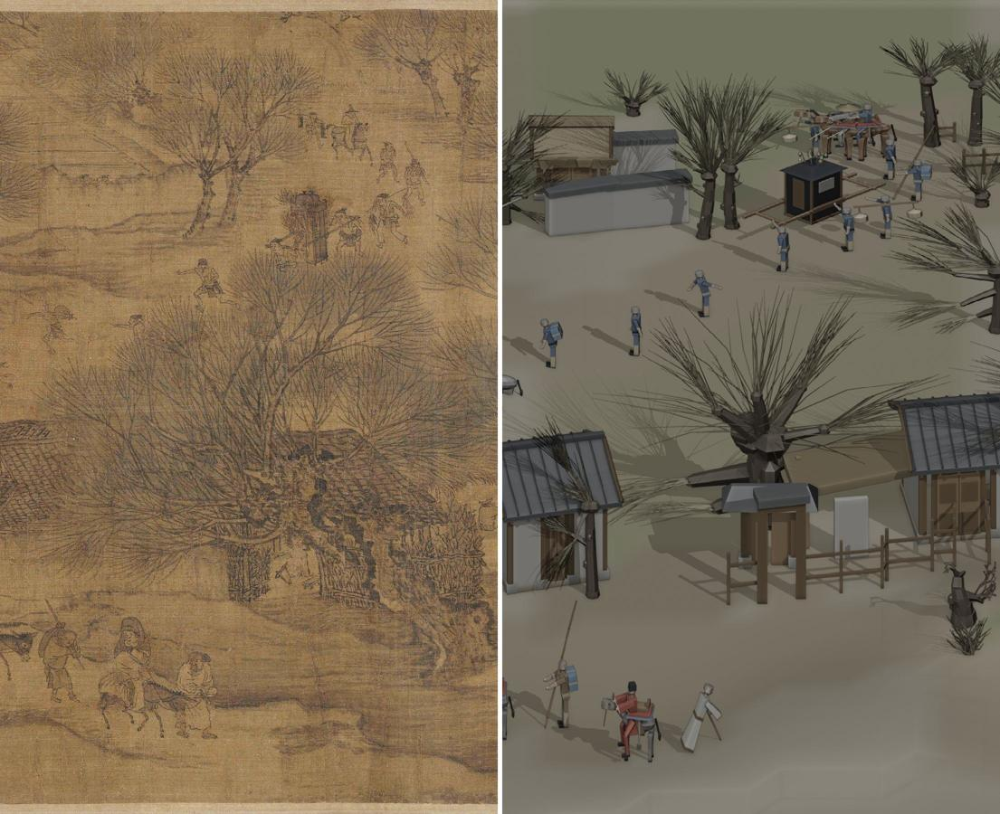
第一轮渲染（修正前）
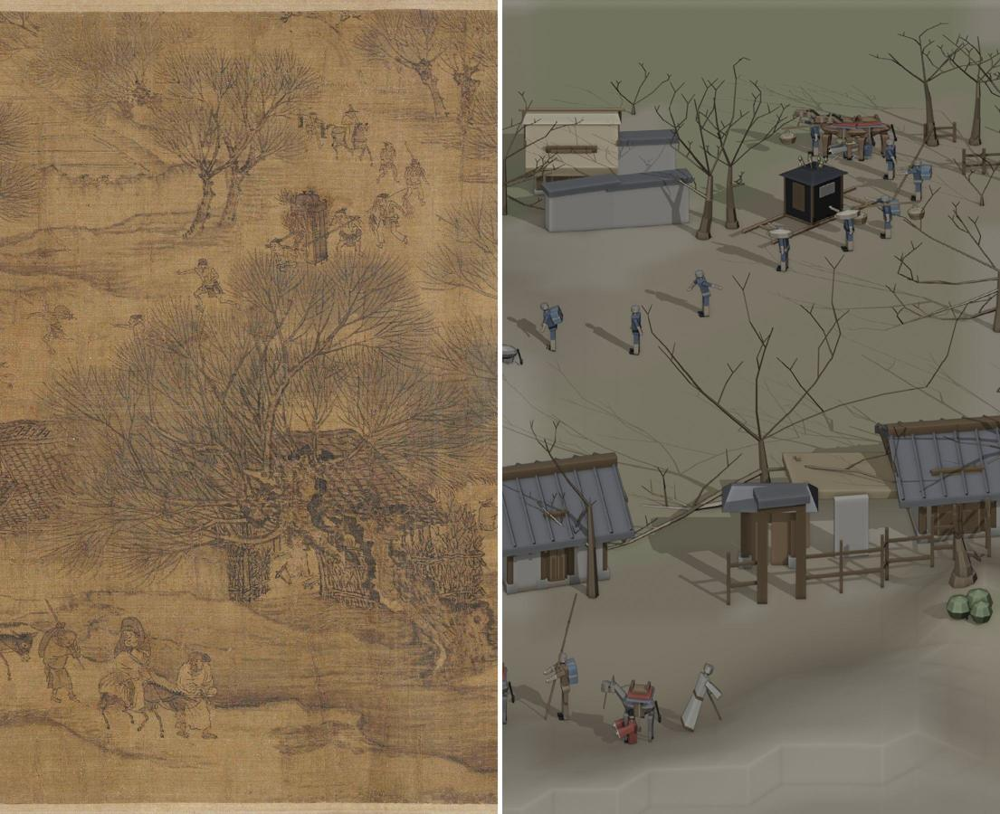
有误与缺失（18）
编号
类型
判定
问题
修正
O0006
prop
缺失
Large lidded round-bellied jar by the fence at the right edge (x 1045-1100, y 1085-1155) is absent.
Build a lidded storage jar ~55 px wide, 70 px tall, base (1072,1155).
T0071
tree
有误
Present at the right place, but drawn as a thin bare tree with a few forks; the painting shows a pollarded knobbly trunk with a dense twig head.
Use a pollarded willow form: short thick knobbly trunk, dense fan of fine twigs.
T0072
tree
有误
Built as three green round leafy blobs at x 985-1085, y 1300-1380; the painting has a dark scraggly bare shrub or stump mass at x 900-1095, y 1310-1500.
Replace with a dark bare twiggy shrub; base about (1000,1480); correct the ctx bbox y.
X0024
structure
有误
Built as a post-and-rail timber fence; the painting shows a bramble/brushwood fence of bound tall upright twigs.
Fence style = brushwood: dense vertical twigs between stakes, height ~1.3 m.
H0011
building
有误
The tiled gable roof is rendered at x 830-1100 instead of x 700-925 (~130 px right). x 625-870 shows a flat tan slab and a white panel. The thatched annex is missing.
Move the hall 130 px left, gable end wall at x 665-750; add a thatch lean-to annex from x 940 rightward.
A0008
animal
有误
Merged with A0009 into one bulky blob x 650-860, y 240-355; looks ~2x too large; its rider P0009 lies under it instead of riding.
Scale horse to ~60 px long; offset 45 px right of A0009; seat P0009 in the saddle.
A0009
animal
有误
Oversized and extends left to x ~650 (painted 720-795); its rider P0010 with a pointed hat is not visible on the saddle.
Scale ~50% down; base (758,352); attach rider P0010 seated on the saddle.
X0025
structure
有误
Position along the courtyard front is OK, but it is built as a post-and-rail fence instead of a brushwood fence.
Fence style = brushwood bound twigs.
S0001
sedan
有误
The cabin sits on top of the shafts (bottom y ~495, painted 587). It is a squat wide black box (145x120 px, painted 80x165). Willow sprays are only on the roof.
Hang the cabin between the shafts, bottom at y 587; size 80 wide x 165 tall; domed roof; willow sprays on the sides.
X0026
structure
有误
Built as a roofed gatehouse with posts and a tile roof (x 490-705, y 1030-1240); the spec says a plain fence gap with no roof or lintel.
Remove roof and lintel; leave a 65 px gap with one slender post at x 557.
T0078
tree
有误
The trunk position is OK, but the crown is a few long sparse sticks; the painting has an enormous dense twig dome over x 130-1010, y 540-1250 veiling both houses.
Density = very dense fine twigs; drooping twig curtains down to y 1250 over H0012 and H0011.
X0027
structure
有误
The fence panel left of the gate is post-and-rail, not brushwood.
Fence style = brushwood panel x 500-557 ending in a slender post.
H0012
building
有误
Plain tile roof with no thatch-tuft band along the ridge. The house extends to x 290 where the painting shows only willow fronds (tiles visible x 0-190).
Add a thatch ridge band x 0-120; trim the front width ~25%; hide under denser T0078 fronds.
T0083
tree
有误
Thin sparse tree squeezed against the extra house at x 45-420, which overlaps its base area.
Remove the extra house; pollarded willow with needle-like twig clusters.
P0017
person
有误
The hooded woman rider is placed at ground level beside the donkey (y ~1580-1650); the saddle is empty.
Seat her on the donkey saddle at A0010 (seat y ~1470), facing the viewer.
P0009
person
有误
The rider lies or crouches under the merged horse blob (~y 330), not in the saddle.
Seat him on A0008, bent forward.
P0010
person
有误
The pointed-hat rider is not visible on A0009.
Seat him on A0009 with a wide pointed hat.
P0021
person
有误
Carries a blue box backpack instead of a large round bundle on the back.
Load = large round cloth bundle on the back, leaning forward.
人群
upper procession road x 600-950 y 220-600：画中约 8 人，模型 8 人。Count matches. Riders P0010 and P0009 are not seated on the horses (P0009 lies under the horse blob). All bearers and porters wear identical blue tunics with box backpacks.
middle slope x 50-510 y 560-780：画中约 3 人，模型 3 人。Positions good. P0016 is fully exposed (the painting hides his lower body in willow twigs). P0021 carries a blue rectangular box instead of a large round bundle.
lower road x 0-500 y 1330-1650：画中约 3 人，模型 3 人。Positions good. P0017 (woman) is on the ground beside the donkey, not seated on it. P0020 has an extra blue backpack besides the pole.
distant farmstead x 170-250 y 380-410：画中约 2 人，模型 0 人。P0018 and P0019 cannot be seen; they are probably hidden behind the extra wall at y 380-506.
模型多出的东西
(230, 370) A large pale two-tier house and a long grey wall (x 45-420, y 237-506). The painting has only faint distant field banks and a tiny farmstead here; remove it or shrink it to a far-away scale.
(1020, 1230) Bare tree stump (x 990-1050, y 1170-1290) beside the H0011 annex; not in the painting at this spot.
(1060, 330) Small post-and-rail fence segments at x 940-1100, y 270-385 near T0071/T0076; not catalogued.
(205, 1320) Vertical tree trunk in front of the H0012 door (x 195-215, y 1100-1320); the painting shows only drooping T0078 fronds there.
tile09 · 103.3–119.1 cm 2/5
正确 8 · 有误 15 · 缺失 2 · 忽略 1
The layout is recognisable: farmstead at top-left, willows behind it, a tiled house in the middle-right, a grove and a donkey-rider group on the road below. But the whole scene reads as sparse and wrong in detail. The worst problems: the woman P0022 sits on the ground instead of on the donkey A0012, and the road group lands about 90 px too high. The rolling donkey A0013 is built standing with a pack frame. The well sweep X0030 has a lever beam that cuts through the H0015 roof. All trees are thin forked sticks instead of dense twig fans, and the big willow T0092 is nearly absent. The dike X0031 and the stone rollers O0009 are missing.
得分与判定来自第一轮（修正前）；图为修正后的第二轮渲染，第一轮渲染见下。
第一轮渲染（修正前）
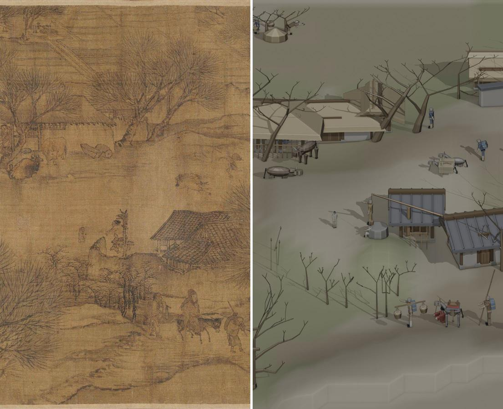
有误与缺失（23）
编号
类型
判定
问题
修正
H0013
building
有误
Built as a large white two-storey block with a blue annex, x 946-1100 y 220-470; painting shows a small hut gable at y 340-425.
Build as a small 1-storey thatched hut, gable end facing viewer; height about 50% lower, footprint 40% smaller.
T0082
tree
有误
Painting has a big dense willow crown at the right edge y 810-1270; 3D shows only a few faint twigs and a small forked sapling.
Build a full-size willow, crown about 140x460 px, with dense radiating twig fans; trunk at x 1030 y 1270.
A0011
animal
有误
Built as a standing grey legged animal at x 884-946 y 687-748, about 70 px too high; painting shows a small dark shape lying down.
pose = lie; move about 70 px down to base 898,818; make it smaller, dog or foal size.
A0012
animal
有误
Donkey at x 796-921 y 1300-1437: base about 90 px too high, and about 40% too small (125 px vs 218 px wide).
Move down to base y 1528; scale up about 1.6x; keep facing left; the saddle must take the rider P0022.
A0013
animal
有误
Built standing upright with a wooden pack frame on its back, about 70 px too high; painting shows a donkey rolling on its back, legs up.
pose = roll on back, legs up; remove the pack frame; move down to base 853,845.
H0015
building
有误
Built as a separate tall gable shed with a blue metal-like seam roof, about 50-70 px too high; painting shows a low open porch with a tiled hip roof attached to the house.
Build as a 1-storey open porch, 4 thin posts, hip/half-hip roof with dark grey tile rows; join it to the main house; move 50 px down.
T0085
tree
有误
Sparse forked stick about 50 px left of the painted crown; painting shows a dense twiggy crown 130 px wide.
Move 50 px right to base 695,1320; give a dense rounded twig crown.
X0028
structure
有误
The near bank ends in hard stair-stepped polygon edges at y 1580-1700; painting shows a soft ink-washed sloping bank with rock forms.
Smooth the heightfield edge into a continuous slope; add a few low rock shapes along y 1600-1750.
T0086
tree
有误
Three thin trunks stand on the slope with their bases near y 1290, about 110 px above the painted base y 1410; crowns too bare.
Move bases down to y 1410 (or lower the terrain there); make the trunks longer; add twiggy crowns.
X0029
structure
有误
No readable knoll: the ground is almost flat, and a grey octagonal plinth stands in place of the ink-washed rock outcrop at x 390-460 y 960-1100.
Raise a 60-80 px earth knoll at x 390-720; add a tall rock outcrop at its left; remove the octagonal plinth.
T0087
tree
有误
Trunk leans right and stands about 40 px right and 50 px high of the base 545,640; painting leans left over the house.
Lean the trunk left about 20°; move the base to 545,640.
X0030
structure
有误
Built as a well sweep with a long lever beam that runs from x 465 y 820 through the H0015 roof; painting shows only a forked upright post.
Remove the lever beam; build only a tall post with a two-pronged top at 545,1095.
H0016
building
有误
Built as a wide, fully visible low block beside H0017 with tall grey slab walls above it (x 400-560 y 330-500); painting shows only a small roof that the willow mostly hides.
Shrink about 40%; set it behind H0017; remove the tall slab walls; thatched roof.
O0009
prop
缺失
Two stone threshing rollers lie clearly in the yard at x 352-497 y 622-702; not built.
Build 2 stone cylinders, about 70x35 px each, lying end to end at base 424,702.
X0031
structure
缺失
A clear raised dike/field path runs diagonally across the ploughed field (x 150-450 y 100-330); 3D shows a flat empty field, with no furrows either.
Build a low raised strip about 25 px wide along the diagonal; add the ploughed furrow lines to the field.
T0092
tree
有误
Only a few bare branches; the trunk is at x about 10, 160 px left of the base 170,1700; painting has the largest dense willow crown in the tile.
Move the trunk to x 170; crown about 340x650 px, with dense radiating drooping twig fans over the road.
T0095
tree
有误
Thick trunk leans diagonally through the H0017 eave (roof collision); crown sparse.
Put the trunk at 155,700, upright or leaning left, clear of the roof; rounded dense twig crown.
P0022
person
有误
Woman sits on the ground beside the donkey, not on it.
Mount her on the A0012 saddle, sideways, hooded cloak.
P0027
person
有误
Child built as a full-size adult man, standing about 50 px too high.
Use the child model at about 60% height; base 361,1052; walking left.
P0024
person
有误
Carries a yoke with two buckets; painting shows a single pole over the shoulder with one bundle.
Single pole over the right shoulder with one hanging bag; move 45 px down.
P0023
person
有误
Tiny distant walker built about 2.5x too large and about 60 px too high.
Scale to about 35 px tall; base 788,623.
P0025
person
有误
Pointing man about 90 px too high, standing on an octagonal plinth.
Stand him on the knoll crest at base 518,1040.
P0028
person
有误
Bent farmer about 2.5x too large.
Scale to about 30x50 px.
人群
far field x 0-300 y 50-200：画中约 3 人，模型 3 人。3D figures are 2-3x too large for the distance; a man with a carrying pole is near P0028.
farmyard x 0-560 y 400-800：画中约 4 人，模型 2 人。The left-edge figures P0030/P0032 are hard to see behind the lattice fence.
slope x 600-1100 y 450-800：画中约 2 人，模型 2 人。Blue figures about 2.5x too large and about 60 px too high.
mound x 330-560 y 950-1110：画中约 3 人，模型 3 人。Group stands about 80 px too high on a plinth; the child is built adult size.
road x 600-1100 y 1270-1560：画中约 4 人，模型 3 人。Whole group about 90 px too high; rider dismounted; a second walker by P0024 is missing.
模型多出的东西
(95, 150) Octagonal tent-like hut with figures in the far field; not in the painting.
(100, 1100) Three thin spear-like poles with pointed tips; not in the painting.
(485, 975) Grey octagonal stone plinth under the pointing man and child.
(480, 420) Tall grey vertical slab walls behind the farmhouse.
(870, 720) Wooden pack frame/box on top of the standing donkey A0013.
tile10 · 116.2–132.0 cm 3/5
正确 22 · 有误 17 · 缺失 5 · 忽略 7
The middle band now reads as the painted tea-shed scene: the furniture is rendered, the diners sit on stools at tables, the H0018 figures show under the eave behind the railing, and the willows are pollards with twig fans. The bottom third is still wrong. The large moored cargo boat with its rudder (x 0-560, y 1375-1780) is absent, and open water with a small skiff and an upright ladder fills the area. The grey double-roof pavilion at top left is still about twice the painted size and buries H0024, T0107 and T0108. The haystack X0032 is still about 5 times too big. Willow trunks (T0099, T0102) are squat and about twice too thick, and their crowns are radial straight sticks, not dense fine twigs.
第二轮复核（修正生成器与布局后，第一轮得分 2/5）：Improved: interior furniture now rendered, diners sit on stools at tables; H0018 figures partly visible; donkey has no cart; willows are pollards with twig fans; no green fronds; no stone canal wall. Still wrong: cargo boat missing, pavilion oversized, haystack huge, counter drums, thick squat trunks, ladder upright in skiff.
第一轮渲染（修正前）
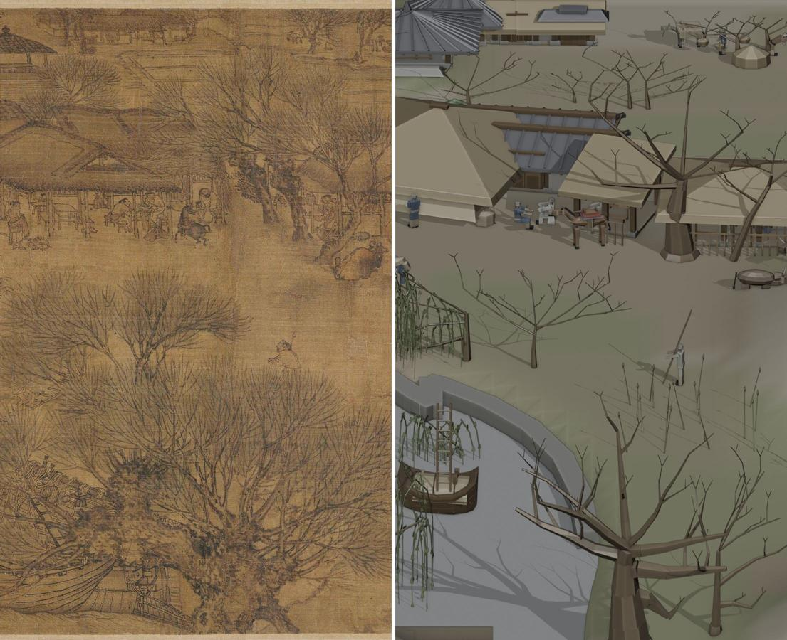
有误与缺失（24）
编号
类型
判定
问题
修正
X0032
structure
有误
still a big octagonal cone about 100 px wide x 55 px tall (x 955-1060 y 125-185) vs painted 20 x 27 px
scale to 20 x 27 px footprint (~0.45 m wide, 0.6 m tall)
F0008
furniture
有误
table behind the railing not visible; hidden by the low H0018 eave and posts
raise H0018 eave to y 532 so the table shows
H0018
building
有误
eave still about 55 px low (y ~588 vs 532); figures only half visible; a thick leaning trunk crosses its front at x 920-1050
eave_y 532; move the neighbour trunk (T0095) out of the shed front
T0099
tree
有误
trunk base right (x ~780 y 690) but trunk ~150 px wide vs ~70 painted, squat pollard knob; crown is radial straight sticks
trunk_width 50%, taller leaning trunk; crown of many fine curved twigs over x 560-1000 y 170-470
T0102
tree
有误
trunk ~110 px wide stacked-block pollard (x 550-660) vs massive 180 px knotted trunk; crown sparse spikes reaching y ~1250 only
trunk_width 180 px, gnarled; dense fine-twig crown over x 100-1100 y 1050-1800
H0019
building
有误
shed spans x ~500-720 vs painted 520-660 (about 60 px too wide on the right); eave y ~555 vs 518
width 140 px, right edge x 660; eave_y 518
G0001
sign
缺失
small board sign under the H0019 eave still not built
hang a 23x26 px plain board under the eave at (544,515)
A0017
animal
有误
saddled horse at the right place, but tan/light brown and head raised; painted dark with head lowered
coat colour dark grey-brown; lower head ~30 deg
O0012
prop
缺失
rudder/stern of the moored cargo boat at x 383-560 y 1580-1740; only water and tree shadow in 3D
build the moored cargo boat (hull x 0-560 y 1375-1780) with stern rudder
O0013
prop
缺失
dark bundle on the floor under the diners' table still not built
small cloth bundle 60x40 px at (432,672)
H0022
building
有误
walls too tall: eave at y ~40 and wall/colonnade y 40-125; painted roof sits at y 40-90
wall height 50% lower, eave_y ~90
H0023
building
有误
front shed thatch stops at x ~270; x 250-430 shows a closed wooden wall and door instead of the open thatched front
continue the low thatched eave (y ~530) to x 500; open posts, no front wall
H0024
building
有误
still buried under the oversized grey pavilion roof that reaches x ~300
shrink the pavilion to x 0-160; keep H0024 thatch visible from x 230
F0014
furniture
有误
counter rendered as two white octagonal drums at x 225-285 y 590-640
low rectangular wooden counter 45x55 px at base (278,600)
A0018
animal
有误
small grey animal at ~(220,615), about 30 px left and 40 px up of base, half hidden by the counter drums
move to (249,657), lying in front of the table
T0107
tree
有误
base still under the oversized grey pavilion roof; painted trunk free-standing at x 200
shrink the pavilion so the tree stands free
F0016
furniture
有误
only a low plank reads; the big table top (80x60 px, painted at table height) is not visible
table 80x60 px, top at seated-table height, at base (182,628)
T0108
tree
有误
base buried in the grey pavilion roof
same as T0107
F0017
furniture
有误
ladder still stands upright in a small skiff, base y ~1330 vs 1530
move base to (136,1530), lean ~30 deg against the cargo boat
O0015
prop
缺失
carrying pole with two bundles on the ground left of the shed, at the standing man's feet
pole 80 px long with 2 bundles at (102,705)
X0040
structure
缺失
bow of the moored cargo boat with bundles (x 0-120 y 1375-1600); 3D has only a small open skiff higher up
build the large moored cargo boat, bow at left, bundles on deck
T0112
tree
有误
a bare tree is built at (20,70) where the painting shows the pavilion finial
delete the tree
P0038
person
有误
vendor behind the counter not visible; hidden by the drums and closed wall
open the shed and replace drums with a low counter
P0033
person
有误
only partly visible, head under the low H0018 eave
raise H0018 eave to y 532
人群
far lane x 800-1000 y 80-160：画中约 2 人，模型 2 人。porter with baskets and pack donkey both fine now
tea shed x 0-660 y 520-700：画中约 8 人，模型 5 人。standing man at left, P0037, P0036, P0035 seated correctly; vendor P0038 not visible
H0018 behind railing x 830-1100 y 540-630：画中约 3 人，模型 2 人。P0029 visible in blue under the eave, P0033 only partly; heads cut by low eave
bank x 750-850 y 950-1050：画中约 1 人，模型 1 人。P0034 with upright pole present, good
模型多出的东西
(150, 80) large double grey hip/pyramid tile roof ~300 px wide; painting has a small hexagonal pavilion ~160 px at x 0-160 y 70-200
(980, 700) thick leaning willow trunk (neighbour T0095?) with base ~(930,740), crossing the H0018 front; painting has a boulder and posts there
(1040, 790) round millstone-like disc; painting has a boulder at x 870-1060 y 650-780
(260, 1400) open water x 0-540 y 1080-1800; painting has the moored cargo boat and earth bank
(110, 1260) small open skiff in place of the large moored cargo boat
(870, 1650) second slim pollard trunk; painting has only T0102 branches there
tile11 · 129.1–144.9 cm 2/5
正确 9 · 有误 21 · 缺失 21 · 忽略 7
The lower half reads as the same scene: the quay, the greeting group, the porters, two moored boats and the big foreground willow are in roughly the right places. The upper half does not: the H0030 and H0028 roofs are far too large and too low, so they cover the gallery, the eating-shed tables, the two-storey house H0029 and most of the treeline trees. The quay is a vertical grey wall about 100-150 px too far north at the right, so porters P0041 and P0044 lie in the water. None of the props that carry the story were built: the sack heaps, the rudder and the hawser coils. The tea-house tables are missing, and the bunting pole is a striped board.
得分与判定来自第一轮（修正前）；图为修正后的第二轮渲染，第一轮渲染见下。
第一轮渲染（修正前）
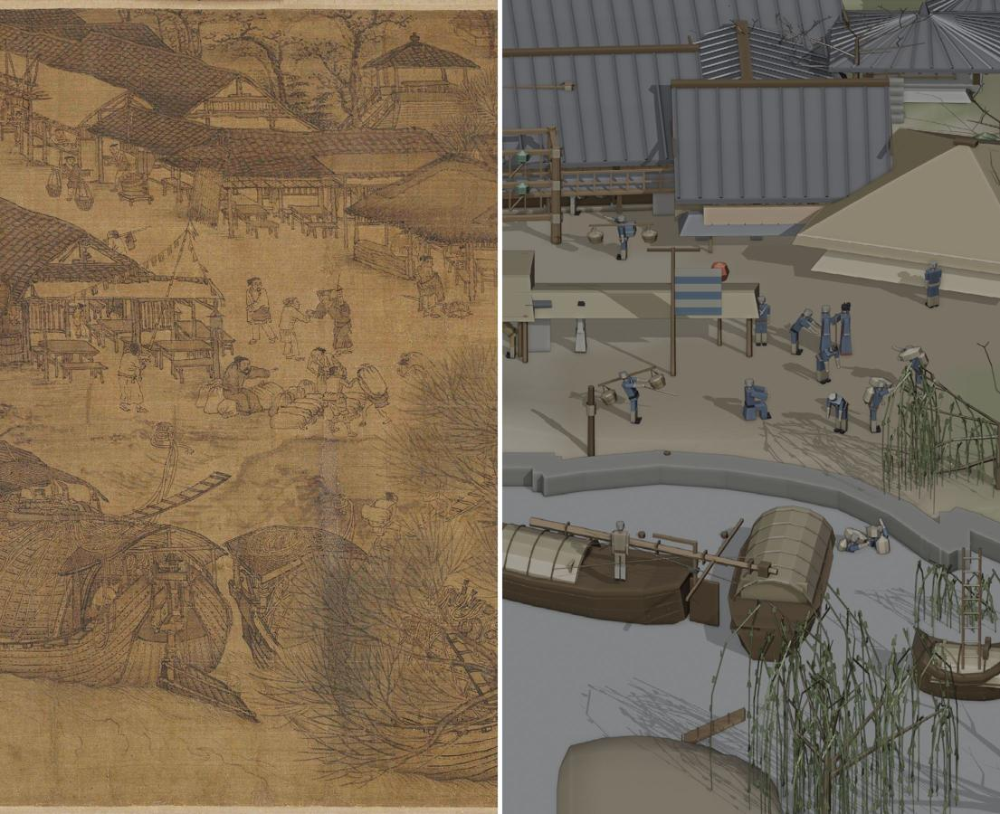
有误与缺失（47）
编号
类型
判定
问题
修正
B0002
boat
有误
Hull at x840-1100 y1300-1480 is roughly right, but its ladder stands upright on deck (x1000, y1200-1420).
Lay the ladder at about 40° from the bank top (1000,1150) down to the deck (1040,1350); lengthen the hull south to y~1700.
H0025
building
有误
Thatched roof is a smooth flat tan pyramid; eaves come down to y~600 and hide the open front, the fence and the inside.
roof.type = thick rounded thatch hip; raise the eave to y~540; cut the overhang ~40%; keep the front open.
O0014
prop
缺失
No rope coils on the cabin roof of the third boat.
Add 2-3 flat rope coils on B0002's cabin roof, around (1010,1350).
H0027
building
有误
Pyramidal roof is ~50% too wide (eaves x700-1100 instead of 795-1060) and its apex is ~50 px too high; the terrace and balustrade are hardly visible.
Scale the roof width by 0.65 about x928; lower the roof 50 px; show the raised terrace and balustrade at y200-275.
X0041
structure
有误
Fence not visible: H0025's low eave covers its line at y520-605.
After raising H0025's eave, build a low wattle fence ~25 px tall from x790 to x900 at y605.
T0114
tree
有误
Bare tree behind the pavilion stairs cannot be read; the oversized pavilion and shed roofs hide it.
Make it 30% taller after shrinking the roofs; trunk at x835 rising to y30.
F0019
furniture
缺失
Eating-shed table is painted clearly; in 3D it is hidden under the opaque H0028 roof, with no generic interior visible.
Build a table and bench at (705,522); shorten the H0028 roof so they show.
O0018
prop
缺失
Heap of long sacks that the porters work on is absent, so the porter group has no object.
Build 5-6 long cylindrical sacks heaped at x600-740 y835-955.
F0020
furniture
缺失
Back-row table of the eating shed is hidden or not built.
Build a table and bench at (660,487).
T0116
tree
缺失
Dark leafy tree at x580-720 y150-265 is completely hidden by the H0028 roof.
Shrink the H0028 roof; check the tree is built as a dark rounded ink-wash crown ~110 px tall.
H0028
building
有误
Open eating shed has a huge opaque tiled roof (x380-870 y175-490) that hides its posts and tables; the eave is ~100 px too low.
Cut roof depth ~40%; eave at y~390; open sides on thin posts; add a mat extension in front.
O0019
prop
缺失
No rope coils on the mat roof of the second boat.
Add flat rope coils on B0003's cabin roof at x520-720 y1170-1240.
F0021
furniture
缺失
Front-row eating-shed table is not visible.
Build a table and bench at (580,522).
T0117
tree
有误
Forked bare tree mostly hidden behind the oversized roofs; only a few twigs show at x440-555.
Shrink the H0030 and H0028 roofs; tree trunk at x570 rising to y30.
F0022
furniture
缺失
Eating-shed table is not visible.
Build a table and bench at (555,487).
H0029
building
有误
Two-storey house is almost hidden; only a dark striped roof slope shows at x450-720 y50-170, ~60 px too high, with no balcony.
Lower it 60 px; storeys = 2 with an upper balcony railing; gable roof; make it visible above the shrunk H0028.
O0020
prop
缺失
Pile of round grain sacks is absent, so the overseer P0050 sits on nothing.
Build 3-4 round sacks at x478-545 y828-932 under P0050.
X0043
structure
有误
No pale hexagonal box lantern on a post; a red faceted ball floats at ~(490,585), ~120 px too high.
Build a pale hexagonal box lantern ~35 px tall on top of a post at y~690; remove the red ball.
F0024
furniture
缺失
Tea-house table is clearly painted; there is nothing under the awning in 3D.
Build a table and bench at (481,778).
X0045
structure
有误
Reed blind is a short slanted grey box at y450-500, not a long hanging mat.
Build a thin mat hanging from the eave at y350 down to y510, ~60 px wide.
X0046
structure
有误
Quay is a vertical grey stone wall at y990-1090; the painting shows an earth slope reaching y~1200 at x700-1000.
Make an earth bank slope instead of a wall; move the water line south to y1200 for x650-1000.
F0025
furniture
缺失
Tea-house back-row table is not visible.
Build a table at (431,737).
T0118
tree
有误
Bare tree is completely hidden under the oversized H0030 roof.
Shrink or lower the H0030 roof; tree should show its crown above y130.
X0047
structure
有误
Bunting pole is a vertical T-post carrying a blue-white striped board, not a tall slanting pole with pennant strings.
Tilt the pole ~10°; remove the board; add two strings of small triangular pennants to the roofs left and right.
F0027
furniture
缺失
Tea-house table right of the pole is absent.
Build a table at (394,792).
X0048
structure
有误
Beam runs nearly level, sloping down to the right at y1150-1280 below the quay, instead of rising up to the quay top.
Run it from the stern deck (280,1150) up to the quay top (505,1030), curved, with rungs.
F0028
furniture
缺失
Tea-house bench is absent.
Build a bench at (378,812).
O0021
prop
缺失
Big vertical balanced rudder of the big boat is absent; it is a key form in the painting.
Build a rudder: post x375 y1210-1480, blade ~50 px wide, with tiller.
X0049
structure
有误
Bollard is a tiny bump on the quay edge, with no hawser coil and no rope down to the boat.
Build a post ~40 px tall with a thick coil on top; run a rope down the quay edge to the big boat.
F0030
furniture
缺失
Large vat on a stand at the shop counter is not visible.
Build a wooden vat ~70 px on a four-legged stand at (298,448); expose it by shrinking the H0030 roof.
X0050
structure
有误
Trellis awning is a thick solid pale slab (x0-520 y590-700) instead of an open mat roof with lattice.
Make it a thin mat/lattice roof on posts, semi-open, about one-third the thickness.
F0031
furniture
缺失
Tea-house middle table is absent.
Build a table and bench at (292,778).
T0119
tree
有误
Tree tip is hidden under the oversized H0030 roof.
Lower the H0030 roof so the tip shows at y0-60.
F0032
furniture
缺失
Tea-house back-row table is absent.
Build a table at (241,738).
O0022
prop
缺失
Heaps of coiled hawser on the big boat are absent.
Add 2-3 large rope coils on the deck and cabin roof at x120-300 y1120-1260.
F0033
furniture
缺失
Long bench at the front-left table is absent.
Build a bench at (180,830).
H0030
building
有误
Roof is huge and nearly flat (x0-440 y0-420); it hides the trees, the shopkeeper and the vat; the gallery railing sits ~80 px too low (y355-440).
Shrink the roof ~40% and make it a gable; raise the gallery to y265-335; storeys = 2 with an open ground floor.
X0052
structure
有误
Sandbank is a smooth blob at x120-560 y1580-1800 and x0-120 is water; the painted bank spans x0-650 from y1500.
Extend the heightfield west to x0 and north to y1500; flatten it to a low contoured bank.
F0034
furniture
缺失
Large front-left tea-house table is absent.
Build a table at (155,800).
F0035
furniture
有误
Gallery railing exists but sits ~80 px too low, under the huge roof.
Raise the railing to y265-335.
F0037
furniture
缺失
Bench at the front-left table is absent.
Build a bench at (92,792).
X0053
structure
有误
Huanmen scaffold is a low post frame with green finials at y260-420 under the roof; the painted one rises to y100 above the roof.
Make the scaffold poles reach y100 above the shop roof; open timber lattice, 3-4 tall poles.
P0041
person
有误
Lying or crouched in the water at ~(800,1170), below the quay wall.
Put him on the earth slope after lowering the quay edge, standing and walking down.
P0044
person
有误
In the water beside P0041.
Put him on the bank slope at (760,1185), standing and bent.
P0051
person
有误
Built with a shoulder pole and two buckets; he should grip the slanting bunting pole.
Remove the carrying load; hands on the X0047 pole; pose haul_rope.
P0052
person
有误
Carries a balanced pole with two baskets; the painting shows a pole over the shoulder with one bag.
Load = single bag hung at the pole's rear end.
P0050
person
有误
Sits in mid-air: there is no sack pile under him.
Build O0020 under him.
人群
street and greeting group x540-800 y600-800：画中约 5 人，模型 5 人。Positions good; soldier with staff and dark robe reads well; greeting and bow poses OK.
quay porters x480-960 y760-960：画中约 6 人，模型 6 人。Positions OK, but no sacks to work on (O0018, O0020 missing); overseer P0050 sits on nothing.
bank slope x730-890 y1080-1190：画中约 2 人，模型 2 人。Both lie in the water below the quay wall; the quay wall is too far north here.
left shop and tea house x0-520 y250-930：画中约 6 人，模型 3 人。P0053 and P0057 hidden by the H0030 roof; P0051 carries a shoulder pole with buckets instead of holding the bunting pole.
(420, 620) Blue-white striped rectangular board on the bunting pole
(490, 585) Red faceted ball floating above the awning
(175, 740) White bent slab or post shape under the awning
(1000, 1310) Upright ladder standing on B0002's deck
(30, 640) Grey solid box at the far left under the awning
tile12 · 142.0–157.8 cm 2/5
正确 5 · 有误 14 · 缺失 17 · 忽略 4
The upper street (paper-horse shop H0034 with its 王家紙馬 sign, the open street with porters) roughly matches, but the riverside half reads as a different scene. A huge pyramidal tiled roof sits over x 0-780 y 320-720, where the painting shows only the willow T0121, the bare tree T0120, the shrub and the wattle fence, and T0120's trunk pokes through it. The long hip-roofed restaurant H0032, with its round mat canopy and tables, is not readable at its place: a flat tan lean-to and a short fence stand there instead. The earthen sloping bank is built as a curved stone revetment. The big cargo boat B0004 is too small and sits about 250 px too high, so its broad stern (y 1150-1500) is empty water. The timber A-frames on the right are built as a lattice rack hung with coloured lanterns.
得分与判定来自第一轮（修正前）；图为修正后的第二轮渲染，第一轮渲染见下。
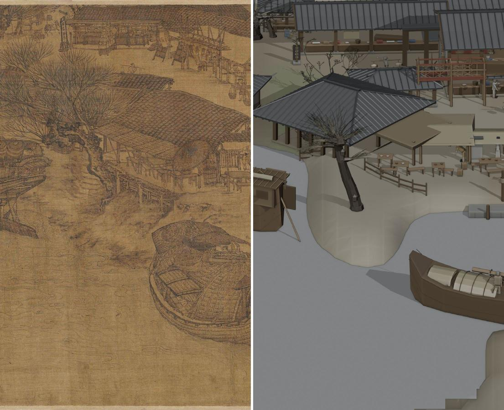
第一轮渲染（修正前）
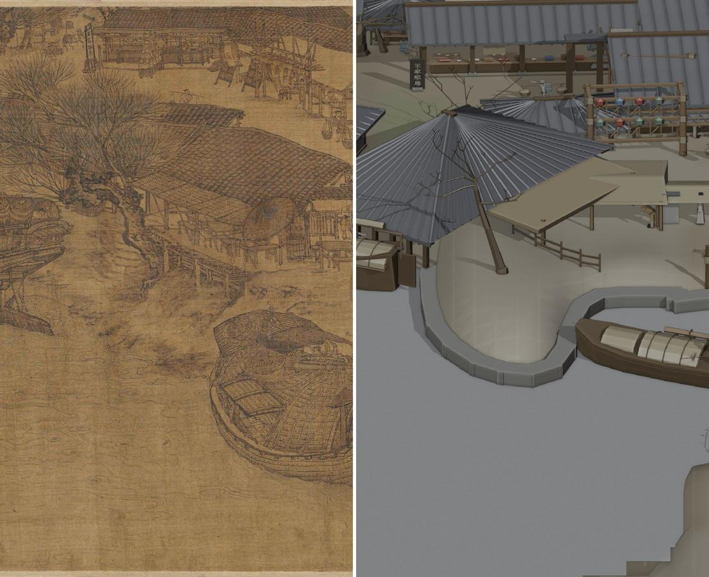
有误与缺失（33）
编号
类型
判定
问题
修正
B0004
boat
有误
Hull spans only y 950-1170 and runs off to the right; the painted broad square stern with fanned planks at x 630-1100 y 1150-1500 is empty water.
Move the boat about 250 px down so the base is at y 1520, scale it 1.5x, and turn it so the square transom faces the viewer at the lower left.
F0036
furniture
缺失
Lattice screen in the right annex of H0032 is not visible; the area is open ground.
Place an explicit screen at base (1012,750) inside H0032.
H0031
building
有误
The tiled roof extends down to about y 450 over the street; the painted eave is near y 215-235 and the timber frames stand in front.
Raise the eave to y 230; reduce the roof depth by about 200 px so the street and frames stay open.
O0024
prop
缺失
The lowered mast lying across the boat at x 830-1055 y 1115-1165 is absent.
Add a lowered mast lying fore-aft on the deck of B0004 (mast.state = lowered).
F0038
furniture
缺失
Stool under the round canopy is not present; the generic interior shows nothing.
Place a stool at (925,780).
H0032
building
有误
The long hip-roofed restaurant (ridge y 400-420, diagonal eave y 553-670) is unreadable; probably built as a square pyramid shifted about 300 px left over the trees, with a flat tan lean-to in front.
Build a long rectangular hip roof: ridge (530,420)-(950,400), eave y 553-670, 6 bays; keep x 0-420 clear for the trees.
F0039
furniture
缺失
Stool is not present in the open front of H0032.
Place a stool at (908,810).
F0040
furniture
缺失
Small screen beside the canopy is not present.
Place a screen at (899,755).
F0041
furniture
有误
The low table is buried inside the lantern rack and cannot be seen; the painting shows it free under a simple timber frame.
Keep the table at (882,313) and remove the rack around it.
F0042
furniture
缺失
Bench under the canopy is not present.
Place a bench at (845,800).
O0025
prop
缺失
Mooring post at the bank edge is not built; the stone wall is there instead.
Add a thin wooden post about 1.2 m tall at (844,982).
X0055
structure
有误
The round woven-mat umbrella canopy (disc 740-947 x 607-747) is built as a flat rectangular tan slab on posts.
Build a round mat canopy, diameter about 3.2 m, with about 20 radial ribs on a single centre pole at (843,800).
X0056
structure
有误
The small earthen mound at the waterline is replaced by the stone revetment corner.
Remove the stone wall here and raise a low earth mound at (830,945) in the heightfield.
F0043
furniture
缺失
Table under the canopy is not present.
Place a table at (812,795).
O0026
prop
缺失
Woven mat panel hanging on the timber frame is absent.
Add a hanging mat panel about 1 m tall at (792,275) on the frame.
O0027
prop
缺失
The big plank hatch covers on the stern deck of B0004 are absent (the boat is not even there).
After moving B0004, add plank hatch covers at x 685-860 y 1185-1325.
X0057
structure
有误
Only a short rail at x 470-730 y 670-780; the painted long railing and plank walkway run diagonally from x 440 down to x 1010 at y 915.
Extend the fence along the line (440,735)-(1010,915), on the deck edge of H0032.
G0002
sign
缺失
The small hanging cloth banner at the right end of the shop is absent.
Add a vertical cloth banner about 0.8 m tall hanging at (717,128-205).
F0044
furniture
缺失
Bench in the front of H0032 is not present.
Place a bench at (715,780).
O0028
prop
缺失
Woven panel on the timber frame is absent.
Add a hanging mat panel at (697,268).
F0046
furniture
缺失
Table is not present; the 3D shows bare ground there.
Place a table at (648,770).
H0033
building
有误
Built as a radial-ribbed pyramid fan (x 380-780 y 290-450) merging with the big roof; the painting shows a long low tile roof with ridge y 330-345 and eave y 395.
Build a long, low, 3-bay rectangular roof x 500-765 (hip at the right), not a pyramid.
F0048
furniture
缺失
Bench is not present.
Place a bench at (598,770).
F0049
furniture
缺失
Table is not present.
Place a table at (580,730).
H0034
building
有误
The roof runs from about x 150 to 830 (painting x 295-735) and covers the donkey and X0060 area; the eave is about 40 px low.
Shrink the front width to 430 px, starting at x 295; eave_y = 88.
T0120
tree
有误
The crown is sparse; the trunk passes through the big erroneous roof at y 400-570.
Make the twigs denser (fan crown 240-490 x 175-420); it is fixed by removing the roof over it.
T0121
tree
有误
Only a thin straight leaning trunk is visible; the huge gnarled willow crown (130-560 x 330-650) is hidden under the pyramid roof.
Make the trunk 2x thicker and gnarled; remove the roof over it and show the full twig fan.
X0059
structure
有误
The wattle fence is hidden under the pyramid roof and cannot be seen.
Make it visible by removing the roof over it; low wattle fence (205,580)-(355,680).
T0122
tree
有误
The shrub is hidden under the pyramid roof.
Make it visible by removing the roof over it; a dark low mass at (242,615).
A0019
animal
缺失
Donkey with rider not visible; the area shows a blue box and the shop's roof edge.
Make sure the donkey is at (228,145), clear of the H0034 roof; check that it renders.
X0060
structure
有误
The small thatched booth is built as a larger tiled shed with heavy posts at x 0-150 y 0-170.
Make it a 1.2 m thatched booth with a lattice front at (180,100).
P0064
person
有误
The rider and donkey are not visible; probably under the over-wide H0034 roof.
Narrow H0034 and keep the rider on the donkey at (216,145).
P0056
person
有误
The porter at (1058,455) is hidden inside or behind the lantern rack.
Remove the rack; keep the porter in the open street.
人群
upper street x 100-1100 y 50-460：画中约 8 人，模型 3 人。Porter P0062 is visible. The donkey rider P0064, groom P0063 and squatting porter P0065 are not visible; P0058/P0060 under the frame and porter P0056 are hidden by the lantern rack.
H0032 front x 550-1100 y 640-810：画中约 3 人，模型 1 人。Only the bent figure P0059 is readable; P0055 in the right annex is not visible.
left moored boat x 100-140 y 645-680：画中约 1 人，模型 0 人。The head in the cabin opening (P0066) is not visible.
模型多出的东西
(300, 500) A huge radial-ribbed pyramidal tiled roof over x 0-780 y 320-720, where the painting shows only the trees and the fence.
(850, 340) A lattice rack with red and green hexagonal lanterns; the painting shows bare leaning timber A-frames with hanging mats.
(650, 1000) A curved stone revetment wall along the bank; the painting has a soft earthen slope.
(1050, 1600) A tan land mass in the lower right where the painting shows the boat hull and water.
(700, 560) A flat tan lean-to roof slab on posts (probably the H0032 awning) in a form the painting does not show.
tile13 · 154.9–170.7 cm 2/5
正确 10 · 有误 9 · 缺失 6 · 忽略 5
Street strip at top and the big cargo boat B0007 land roughly in the right places, but the middle of the tile reads differently: the painting's huge two-tier tiled waterfront hall (x 0-850, y 140-400) is replaced by small grey pyramid-roof blocks, and a large extra grey roof sits over the water at x 680-1100 y 430-880 where the painting has a willow. The stern of B0011 (painted x 0-360 y 650-1000) is absent, leaving open water, and boatman P0070 stands ~220 px too high on the wrong boat. Boat cabins are flat plank boxes with windows instead of arched mat covers. A grey eave band covers the whole top strip y 0-60 and hides shop fronts and the umbrella stall.
得分与判定来自第一轮（修正前）；图为修正后的第二轮渲染，第一轮渲染见下。
第一轮渲染（修正前）
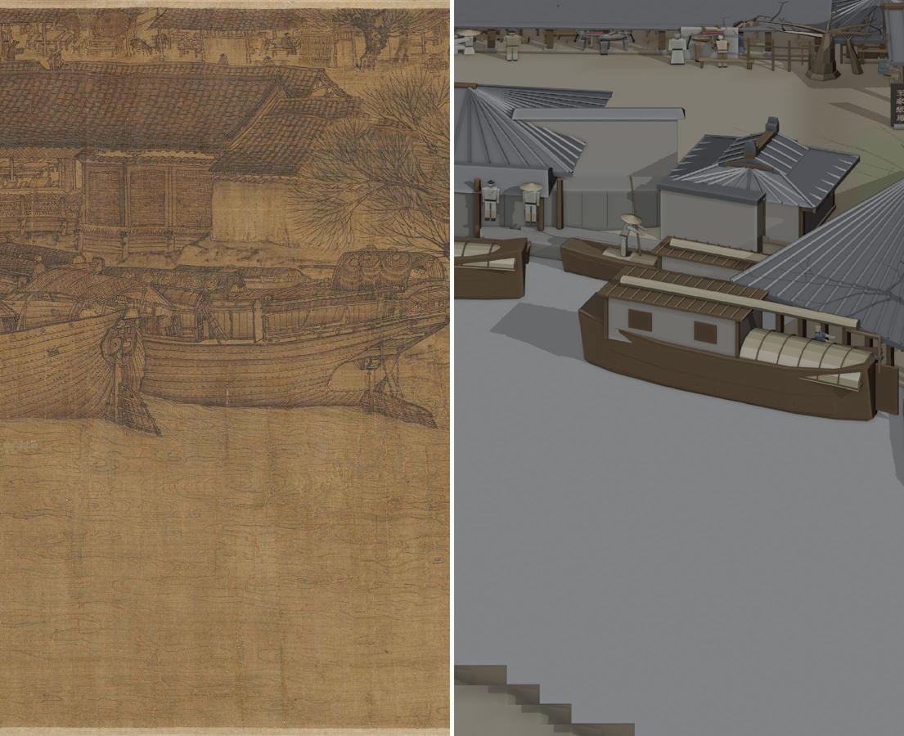
有误与缺失（17）
编号
类型
判定
问题
修正
T0124
tree
有误
Painting: gnarled tree with dense knotted crown; 3D: bare tree with long horizontal limbs reaching left to x~700 over the fence.
shorten limbs 50%, more upright crown, denser twig mass
T0125
tree
缺失
Excluded as same as T0121, but no willow appears here; area x 730-1100 y 185-650 shows a grey roof instead.
check T0121 is built and reaches this tile; willow crown x 730-1100 y 185-650
B0007
boat
有误
Hull position ok (x 310-1040, base y~1000) but hull too shallow; cabin is a flat plank-roof box with windows, painting has arched mat roofs, big stern rudder missing.
hull depth +40%; cabin.roof = arched mat, no windows; add rudder at stern x~880
H0036
building
有误
Painting: right wing of a large hall, gable/hip-gable stepped tile roof over white plaster wall; 3D: isolated small house with pyramidal hip roof.
roof.type = hip-gable (xieshan), join to main hall roof at left, ridge along x
A0020
animal
有误
Horse not readable at x 602-662 y 78-140; a seated figure/box stands there.
check horse model visible; place base at (632,140) facing right
T0126
tree
有误
Shrub not visible; boat B0008 cabin occupies x 520-655 y 585-640.
move B0008 cabin away or place shrub on bank ~30 px higher
B0008
boat
有误
Present but cabin has flat plank roof; painting shows barrel-shaped mat covers with coil row; sits ~60 px too high (y 560-650 vs 640-720).
move 60 px down; cabin.roof = arched mat segments
O0034
prop
缺失
Ladder leaning on B0007 side clearly painted at x 480-547 y 727-840.
Row of coiled mats/ropes on B0008 roof, visually prominent.
add row of 6-8 coil props along B0008 roof x 330-600
X0064
structure
有误
Painting: lattice wooden ground-floor screen of the big hall; 3D: plain grey wall with a small boat in front at x 300-460.
build as lattice timber screen 4 bays, base y 600
K0001
stall
有误
Large round umbrella at x 178-315 not visible; hidden by grey eave band or shifted ~200 px left (umbrella seen at x 0-60).
verify position (246,134); lower overhanging roof so umbrella shows
O0036
prop
缺失
Mooring post on quay edge at (234,660) not built.
add wooden post 40 px tall at quay edge
B0009
boat
缺失
Excluded as stern of B0011, but no hull reaches this tile: x 0-360 y 650-1000 is empty water in 3D.
extend/move B0011 so its stern covers x 0-360, base y~1000
X0066
structure
缺失
Dark post on street at (120,168) not built.
add dark wooden post ~50 px tall
X0067
structure
有误
Railing at x 0-190 y 468-532 reads only as two posts; two figures stand there.
build as low balustrade railing along x 0-190
P0070
person
有误
Pole boatman stands at ~(440,620) on B0008/quay; painting base (299,840) on B0011 stern.
move to (299,840) on B0011 stern after B0011 is extended
P0071
person
有误
Hat above mat cabin at (190,648) not seen; possibly the seated figure on B0007 roof at (895,800).
place at (190,648) inside boat 2 cabin
人群
street north x 0-1100 y 20-170：画中约 11 人，模型 6 人。Several small figures hidden by grey eave band y 0-60; remaining ones look generic white figures, acceptable.
far bank x 0-850 y 280-600：画中约 0 人，模型 2 人。Two standing figures at x 30-110 y 290-400 in front of wall; painting shows none there.
boats x 0-1100 y 600-1060：画中约 2 人，模型 2 人。Boatman misplaced; extra seated figure on B0007 roof at ~(895,800).
模型多出的东西
(890, 650) Large grey tiled roof over the water x 680-1100 y 430-880; painting has willow and B0007 cabin here.
(475, 30) Continuous grey eave band x 0-950 y 0-62 hiding shop fronts; painting shows small shop roofs with open fronts.
(220, 1690) Stair-stepped dark terrain blocks in the water x 0-445 y 1630-1800; painting is plain water.
(1070, 240) Standing signboard 王家紙馬 on the ground at x 1040-1100 y 190-290; painting shows tree branches.
(75, 345) Two standing figures in front of far-bank wall.
tile14 · 167.9–183.6 cm 2/5
正确 17 · 有误 15 · 缺失 13 · 忽略 8
The top half now reads close to the painting: H0038 and H0039 have long-ridge hip roofs, the H0039 ridge sits at y~80 as painted, and the H0038 dining floor is open with its tables and a diner visible. The bottom half is still badly off. B0011 sits about 180 px too high in the image (too far toward the bank): its keel is at y~825 against 1012 painted, so it covers the quay and the B0010 boat. B0012 is still a short box hull with a tall box tower and a flat cream slab where the canopy should be. Cargo props (hooped bundles, rope coils, rudder, mast), the umbrella canopy and the signs are still not built.
第二轮复核（修正生成器与布局后，第一轮得分 2/5）：Improved: hip roofs now have long ridges (no radial fans); H0039 ridge height right; H0038 dining floor open with tables and diner P0078 inside; awnings are solid; balcony figures visible; X0074 partly a plain wall. Still wrong: B0011 misplaced ~180 px toward the bank, B0010 not separate, B0012 box tower and flat X0072 slab, H0037 still ~140 px too long left, no umbrella, huanmen still a flat lattice, cargo props/signs/rudder unbuilt.
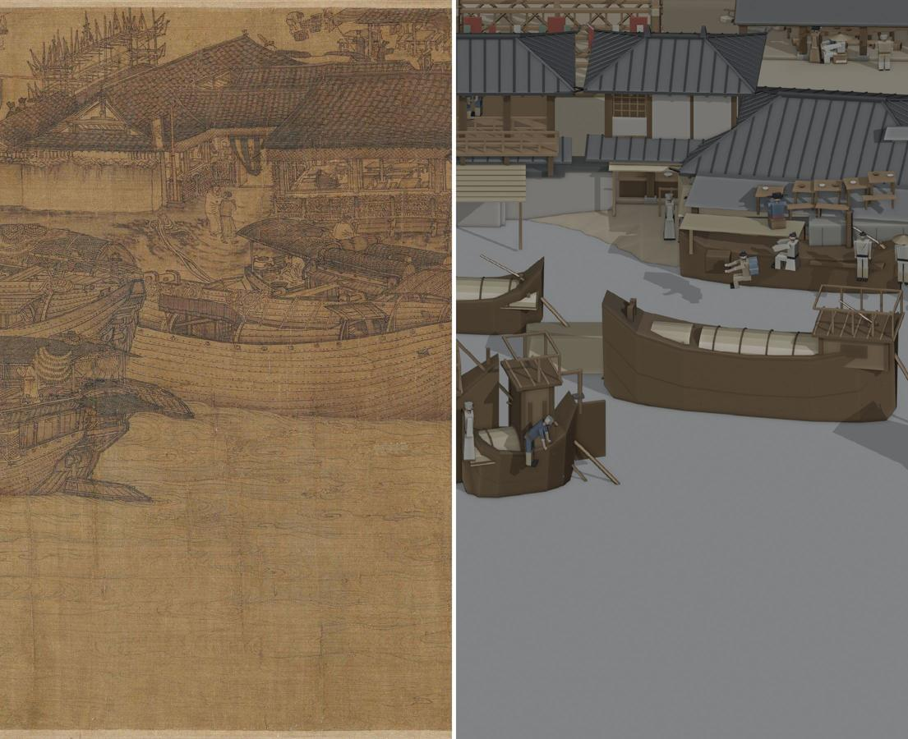
第一轮渲染（修正前）
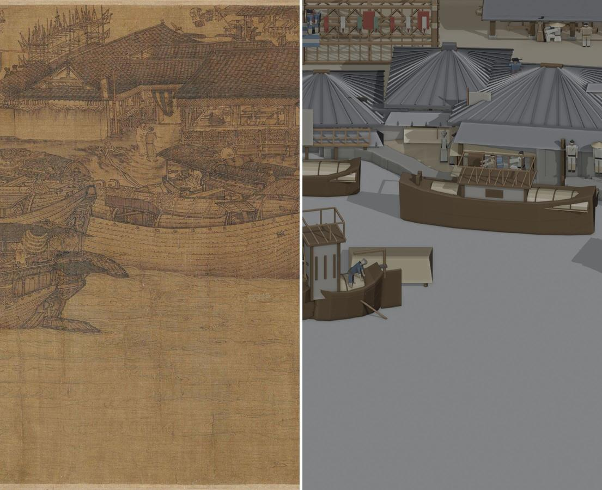
有误与缺失（32）
编号
类型
判定
问题
修正
H0037
building
有误
Flat open shed is right, but it still starts at x~690, ~140 px left of the painted 828, and roofs over the porter/crates ground.
Move the shed's left end to x 828 (shorten it ~140 px); keep the flat roof and open sides.
T0127
tree
缺失
No bare tree at (1081,562); only posts and the B0011 stern rail are there.
Place a small bare tree ~95 px tall on the quay edge at x 1081, after moving B0011 off the quay.
H0038
building
有误
Hip roof with long ridge and open floor: good. The whole hall is ~60 px low (ridge y~230 vs 150, tables y~460 vs 430); a grey slab covers the front at x 590-740; no lattice balustrade.
Raise the floor/plinth so the ridge is at y 150; remove the grey front slab at x 590-740; add a lattice balustrade at y 480-520.
O0038
prop
缺失
Third hooped bundle absent; the deck at x 960-1045 holds a railed open frame instead.
Build hooped cylinder ~90x70 px lying on the B0010 deck at x 958-1045, y 595-665.
X0068
structure
有误
Post is not readable: the B0011 stern rail frame stands on the quay at that spot.
Keep the post (short, knob top); move B0011 down off the quay so it shows.
O0039
prop
缺失
Second hooped bundle absent.
Hooped cylinder ~105x85 px at x 878-985, y 583-668 on the B0010 deck.
O0040
prop
缺失
Sack on the first bundle absent (bundles themselves missing).
Add a dark rounded sack on top of O0041 once the bundles exist.
X0069
structure
有误
Quay line at y 518-568 is covered by the B0011 hull top and stern rail; no plank face visible.
Move B0011 off the quay; give the quay a horizontal-plank timber face on posts.
O0041
prop
缺失
First hooped bundle absent.
Hooped cylinder ~105x95 px at x 790-895, y 577-672 on the B0010 deck.
K0002
stall
有误
Still no tilted umbrella canopy; only small table/stool boxes read at x 820-880.
Add a large tilted cloth umbrella on a long diagonal pole, canopy top at y~20, x 800-880.
B0010
boat
有误
Not readable as its own boat: B0011's hull occupies its place (y 535-700) and its label falls on B0011's side.
Build a separate low hull at y 528-700 against the quay, after moving B0011 ~180 px down.
O0044
prop
缺失
Four wicker crates absent; a white tub stands at (690,40) and the shed roof overlaps the spot.
Add 4 woven crates in two pairs at x 708-790, y 35-97; remove the tub.
B0011
boat
有误
Hull spans y 535-825 vs painted ~700-1012: ~180 px too high (too far toward the bank), over the quay and B0010. Bow is a flat vertical box end.
Move the boat ~180 px down (toward the viewer) so the keel is at y 1012; curved rising bow at x~340 with twin-post bitt.
X0070
structure
有误
Now solid, but a flat cream slab on posts (x 550-846, y 530-590), not a curved woven-mat roof.
Make it a curved (arched) dark woven-mat roof on 4 posts over the B0010 deck.
O0045
prop
缺失
No chiwen at the left ridge end.
Add a ridge-end ornament at (646,116) on the H0039/H0038 ridge.
F0073
furniture
有误
Stove not visible; its base point falls on B0011's cream barrel cabin.
Place the stove on the B0010 deck under X0070 once B0011 is moved down.
G0004
sign
缺失
Striped cloth banner absent.
Hang a banner ~60x100 px with dark/light vertical stripes from the eave at x 568-632, y 330-432.
O0046
prop
缺失
Two rope coils absent.
Add 2 thick rope coils on the B0011 deck at x 545-655, y 700-760.
H0039
building
有误
Hip roof with ridge at y~80 is right, but two roofs meet in a V notch at x~290; the front eave is at y~225 vs ~350 painted; an open balcony gallery fills x 0-245, y 230-370 where the roof slopes down.
One continuous hip-gable roof x 50-560; lengthen the front slope so the eave reaches y~350; small gable at x 150-300.
X0071
structure
有误
No railed stair; a small porch with a cream slab roof on posts stands at x 372-547, y 400-556.
Build a sloped stair with a lattice railing from the floor at y~400 down to the bank at y 485; remove the porch.
O0047
prop
缺失
Three rope coils beside the bitt absent.
Add 3 thick coils on the foredeck at x 360-505, y 680-730 (after moving B0011).
G0005
sign
缺失
Vertical board sign absent.
Hang a vertical board ~28x64 px from the eave corner at x 388, y 283-347.
X0072
structure
有误
Still a flat cream slab (x 146-478, y 787-918), ~100 px too high, not a curved dark canopy.
Curved dark woven canopy arching over the B0012 stern deck at y 950-1014, attached to the hull.
O0048
prop
缺失
No balanced rudder; two thin diagonal poles dip into the water at x 240-360 instead.
Build a rudder post with a broad hatched blade angled aft, bottom at y 1232; remove the poles.
X0073
structure
有误
Still a flat X-braced lattice band with red/green boxes along y 0-80, mostly behind the roof; no tiered pole frame, no pennant spikes.
Tiered pyramidal lashed-pole frame x 50-425 rising to y 20, with pennant poles on top; remove the boxes.
B0012
boat
有误
Hull bottom at y~1137 vs 1232 and stern ends at x~284 vs 465; a tall box tower (x 110-250, y 820-1010) dominates.
Hull depth ~1.3x; long upswept stern overhang to x 465; replace the tower with a low roofed deckhouse.
O0050
prop
缺失
No lowered mast along the cabin roof; a diagonal pole dips into the water at x 210-310 instead.
Add a long tapering spar lying along the cabin roof at x 80-330, y~610.
X0074
structure
有误
Plain pale wall now reads at x 170-500, but x 0-170 is a slatted cream louvre panel, and the wall top is ~40 px too low.
Continue the solid plastered wall over x 0-372, y 380-520; remove the slatted panel.
P0073
person
有误
Stands on B0011's stern rail at ~(1050,570), not between the bundles at (990,648).
Place on the B0010 deck at (990,648), partly hidden by the bundles.
P0084
person
有误
Clings to the outside of the hull at ~(190,1131), feet outside the hull.
Put him on the stern deck at (180,1142) bent at the tiller, inside the hull.
P0085
person
有误
Stands in front of the hull at x~30, base y~1080, about 100 px below the side deck.
Snap to the B0012 side deck at (65,972).
P0079
person
有误
Porter not readable at (719,80); spot overlapped by the shed and a tub.
Keep squatting porter at (719,80) beside the crates after H0037 is shortened.
人群
road/shed x 650-1100 y 0-150：画中约 6 人，模型 4 人。Hatted seated man (P0074) and vendor read; porter P0079 and child P0075 not readable; the porter spot has a tub.
bank x 450-600 y 440-600：画中约 3 人，模型 2 人。One tall white-robed man reads at x~520; the second (P0081) is hidden; P0082 is under the misbuilt porch.
dining hall x 740-1000 y 400-460：画中约 1 人，模型 1 人。P0078 now sits at a table inside the hall (fixed from round 1), ~50 px low with the floor.
boats x 600-1100 y 520-700：画中约 4 人，模型 3 人。P0077 seated at ~(802,606) is right; P0080 only a head behind the cream cabin; P0073 stands on the stern rail at ~(1050,570).
passenger boat x 0-465 y 815-1232：画中约 2 人，模型 2 人。Both present but off the deck: P0085 stands outside the hull at x~30, base y~1080; P0084 hangs on the hull's outer face.
upper-left balcony x 0-70 y 230-285：画中约 2 人，模型 2 人。Balcony pair now visible in the gallery (fixed).
模型多出的东西
(690, 40) White round tub on the road where the porter and crates are painted.
(312, 852) Flat cream slab floating over the B0012 stern (the misbuilt X0072).
(180, 915) Tall box tower on B0012, not in the painting.
(300, 980) Two thin diagonal poles dipping into the water at the B0012 stern.
(970, 590) Railed open stern frame of B0011 standing on the quay where the bundles and tree are painted.
(460, 480) Small porch with a cream slab roof in place of the railed stair X0071.
(1075, 325) Small flat cream slab sticking out at the right edge of H0038.
(100, 600) Left cargo boat (neighbour tile) stern ends as a box at x~210 vs ~340 painted; diagonal poles into the water.
tile15 · 180.8–196.5 cm 3/5
正确 9 · 有误 12 · 缺失 9 · 忽略 5
Layout reads correctly: far-bank street with cart, donkeys, porters and the wine house on top, two middle-band moored boats, and the huge foreground boat B0014 across the tile. The worst problem is B0014: its mast is about half the painted height, the fan of about twelve stays and the tow line are missing, and a tall box tower stands at the stern where the painting has a low mat-roofed aft canopy. The middle-band boats, including B0013, sit about 80-100 px too far back, which leaves the rudder, coils and ladder misplaced or hidden. Many boat props are not built, so the decks look bare compared with the dense painting.
得分与判定来自第一轮（修正前）；图为修正后的第二轮渲染，第一轮渲染见下。
第一轮渲染（修正前）
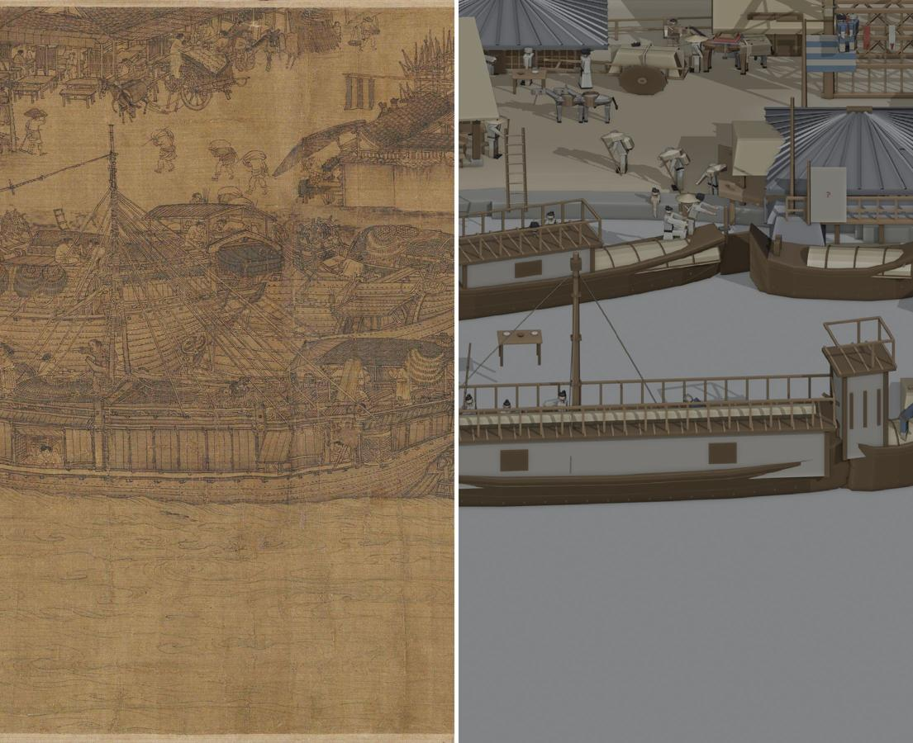
有误与缺失（25）
编号
类型
判定
问题
修正
X0075
structure
缺失
Carved stern post with railed platform at the right edge absent; 3D shows only a plain hull block.
Add a tall curved stern post with a small railed platform at x1058-1100, y1092-1208 on B0014.
O0051
prop
缺失
Scalloped rolled mat blind under the aft canopy not built; prominent in the painting.
Add a rolled mat blind hanging in scallops from the aft canopy eave at x978-1068, y825-925.
B0013
boat
有误
Hull bottom at y~725 versus 832 painted (about 100 px too far back). The cabin is a smooth tube, not a mat arch, and the coiled hawser is missing.
Move about 100 px toward the viewer. cabin = mat arch; add a coiled hawser on the cabin roof.
G0006
sign
缺失
The three dark vertical cloth strips on a crossbar at x828-905 y175-268 are absent; bare ground there in 3D.
Build a crossbar on X0076 with three dark vertical cloth strips about 70 px long.
O0056
prop
缺失
Tall light bundle under the aft canopy absent; the area is filled by the box tower.
Add a tall light rectangular bundle at x833-872, y865-968 on the aft deck.
F0074
furniture
有误
Table under the awning not visible; hidden inside the solid awning box X0077.
Make the awning open underneath so the table and guests show at x770-832, y430-482.
X0077
structure
有误
Built as a closed beige box at x662-775 y292-425; the painting shows a large dark sloping mat awning projecting left over x620-870.
Rebuild as an open sloping mat awning on 2 posts, about 160 px wide, high side against H0040.
O0057
prop
缺失
Lattice-railed bow platform or windlass of B0013 absent; only a plain post.
Add a railed bow platform with a windlass frame at x735-820, y525-625.
H0041
building
有误
No thatched roof visible at x700-830 y10-135; 3D shows animals and a pale wall there.
Check placement; build a small thatched hut with a steep straw roof at base (766,135) behind the animals.
O0058
prop
缺失
About twelve stays fanning from the masthead are the dominant motif; 3D has only 2-3 lines.
Add about 12 rope stays from the masthead to the roof deck between x270 and x1000.
O0060
prop
缺失
Large lowered cross-braced rudder of the stern-on boat at x528-692 y585-722 absent; open water in 3D.
Build a lowered rudder blade about 160x130 px with cross-bracing at the stern-on boat stern.
O0061
prop
缺失
Large bulging sack on the stern-on boat roof not built.
Add a sack prop about 70x50 px at (557,502) on the boat roof.
B0014
boat
有误
Mast top at y~590 versus 295 (about half height). A tall box tower stands at x900-1010 instead of the low aft canopy, the hull is split near x920 with a white gap, and the cabin wall is solid.
Mast height x2. Replace the tower with a low mat-roof aft canopy x700-1060 y830-990. Fix the hull seam and add lattice windows.
F0077
furniture
有误
Low table built tall (legs about 70 px) and standing about 40 px behind and above the railed deck line.
Height 50% lower; move 40 px down onto the roof deck at (149,926).
F0078
furniture
有误
Ladder stands on the quay at x115-165 y300-515, about 3x too long; painted short ladder leans on the left boat cabin at y500-560.
Length about 60 px; place leaning against the left boat cabin, base (142,560).
O0064
prop
缺失
The tow line from the masthead to the left tile edge at y372-460 is absent; it is a key narrative element.
Add a taut rope from the B0014 masthead to (0,372) and continue it to the trackers in the previous tile.
F0079
furniture
有误
Coil not visible; its base falls on the hull side below the raised railed deck.
Place on top of the left boat deck so it shows at x85-150 y632-715; raise it to the deck surface.
F0080
furniture
有误
Long table in the shop front bay hidden behind a beige gable shed at x0-90.
Remove or shift the occluding shed so the open shop front shows.
F0082
furniture
有误
Large coil not visible; buried in the left boat hull and deck.
Place on the deck surface at (52,715) so it reads as a large woven coil.
F0081
furniture
有误
Bench hidden behind the beige gable shed.
Same as F0080: clear the occluder.
F0083
furniture
有误
Small table at the left edge hidden by the beige shed and grey roof.
Same as F0080: clear the occluder.
P0109
person
有误
Woman at the cabin window is hidden; the cabin wall is solid with only a small dark square.
Cut an open lattice window at x60-150 y1060-1130 in the B0014 cabin.
P0112
person
有误
Child at the cabin window is hidden, same as P0109.
Same window opening.
P0090
person
有误
Seated guest is hidden inside the awning box.
Open the awning underneath.
P0091
person
有误
Seated guest is hidden inside the awning box.
Open the awning underneath.
人群
far-bank street and shops x 0-1100 y 0-480：画中约 18 人，模型 14 人。Cart crew, porters (three bent with sacks) and pedlar read well. Awning guests P0090/P0091 are hidden inside the awning box. Hat man P0110 is partly hidden by the beige shed.
middle-band boats x 0-720 y 460-800：画中约 9 人，模型 6 人。Figures sit on top of the railed roof deck about 80-100 px too far back, following the misplaced boats. Window figures P0096/P0100 read as on the roof, not in the window.
foreground boat B0014 x 0-1100 y 800-1130：画中约 7 人，模型 4 人。Four heads behind the deck railing are fine. The woman and child at the lattice window are invisible behind a solid cabin wall.
模型多出的东西
(955, 930) Tall closed box tower with three dark slits and a railed top at the B0014 stern; not in the painting.
(45, 170) Large beige gable shed covering x0-90 y40-300, hiding the open shop front and street.
(900, 450) Grey '?' placeholder board in front of H0040.
(900, 130) Blue and white striped banner plus red and white pennants; the painting has three dark vertical strips lower, at y175-245.
(170, 540) Railed roof deck on the left middle boat; the painting shows an open deck with coils.
(810, 900) White wedge-shaped gap and seam in the B0014 hull near x700-920 y1110-1160.
tile16 · 193.7–209.5 cm 2/5
正确 19 · 有误 11 · 缺失 7 · 忽略 4
The layout is right: restaurant at upper left, awning shed with tables at centre top, shop at top right, three boats below. Object forms are badly wrong. The restaurant's open upper floor is closed by a big grey roof, so its diners stand on top of the roof. The reed-mat awning shed H0043 is built as a huge steep gable roof that hides the umbrella and half of the shop. All three boats have the wrong superstructure: boat 1 has a full barrel hood where the painting has a lattice cabin, and boats 2 and 3 have railed roof decks with white walls but no mat hoods. The tow rope, rigging, coiled hawsers and windlasses are all missing.
得分与判定来自第一轮（修正前）；图为修正后的第二轮渲染，第一轮渲染见下。
第一轮渲染（修正前）
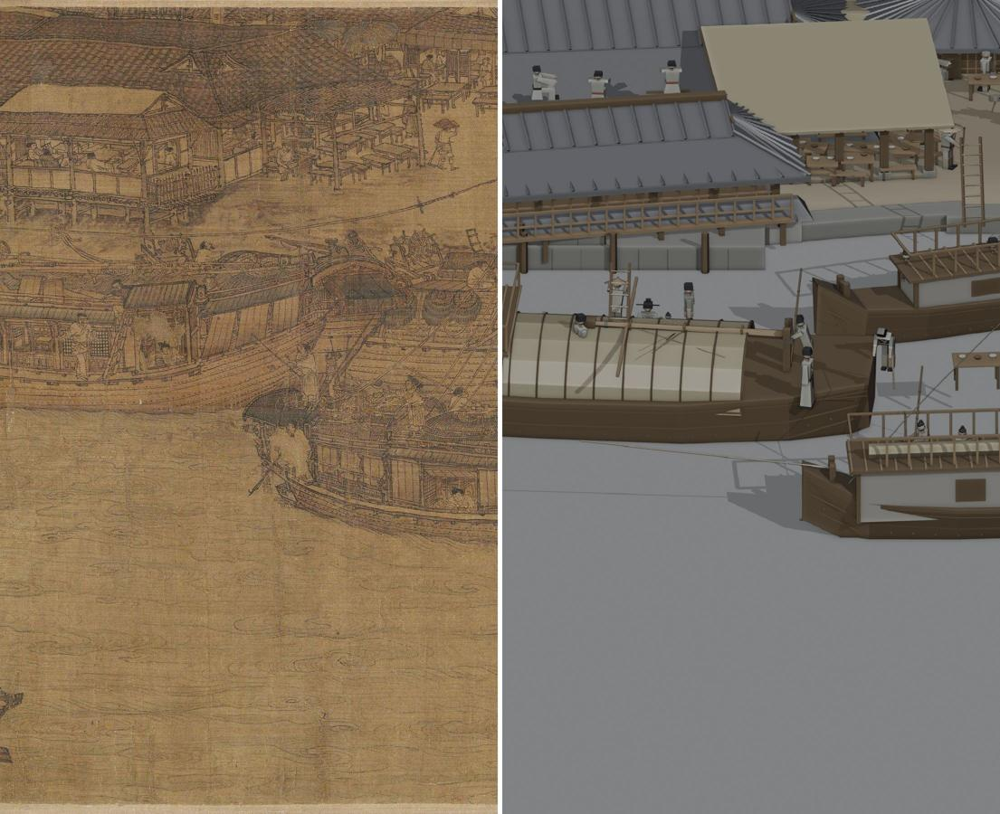
有误与缺失（25）
编号
类型
判定
问题
修正
B0015
boat
有误
Hull and bow position about right (bow x~690), but built with white-walled cabin and railed roof deck; no dark mat-arch bow hood.
Superstructure = low mat-arch hood at bow (x 680-870, y 540-720), open deck aft for coils and windlass; remove railed roof deck.
O0065
prop
缺失
Two large coiled hawsers on boat 2 deck, prominent in painting, absent.
Build 2 flat rope coils ~60 px diameter on boat 2 deck at (950,690) and (1010,690).
O0066
prop
缺失
Taut diagonal stays across boats 2-3 mostly absent; only one or two thin lines.
Add 3-4 rope lines from upper right (1100,590) down to boat decks around (850,900).
O0067
prop
缺失
Mast tabernacle/windlass frame amidships on boat 2 not built.
Add wooden A-frame windlass ~110x120 px on boat 2 deck at (914,632).
O0068
prop
缺失
Long sagging tow rope across the tile (x 0 y~470 to x 1100 y~400) with knot is absent; key visual element.
Build catenary rope from boat mast area up-right to off-tile trackers, sag ~40 px.
B0016
boat
有误
Represented by B0014: hull stern ends ~130 px too far right (x~660 vs 525); dark stern hood and openwork stern platform missing; railed roof deck instead of pent-roof lattice cabin.
Extend B0014 hull aft to x~525; add mat hood at stern; cabin with pent roof, no roof railing.
X0081
structure
有误
Round umbrella awning is hidden under the oversized H0043 roof; not visible at (800,80).
Lower H0043 roof so the umbrella shows; keep umbrella ~80 px diameter.
H0043
building
有误
Built as large steep gable roof whose top reaches y~40; painting shows low flat reed-mat awning top ~180 sloping down to posts at y~300.
roof.type = flat mat awning, pitch ~5-10 deg; height ~50% lower; no gable.
O0071
prop
缺失
Stern sweep of boat 3 trailing into water absent (hull also too short there).
Add long sweep oar from stern platform (600,1000) down-left into water (548,1088).
O0072
prop
有误
A long spar lies on boat 1 hood at y~715, ~120 px below the painted lowered mast (y 503-600); no yard or furled sail.
Small one-character board sign above rear roofs not built.
Small hanging board ~25 px on rear roof ridge at (478,40). Low priority.
O0073
prop
缺失
Ladder-like windlass frame with pulley at boat 1 mast step absent.
Add vertical frame ~60x80 px with wheel at (409,560) on boat 1.
B0017
boat
有误
Represented by B0018 hull: built with full-length barrel mat hood; painting shows lattice-window cabin with pent roof, side deck and open doorway; bow ~100 px too far right (x~810 vs 705).
Superstructure = lattice cabin with pent roof + deckhouse; shorten bow ~100 px; open side deck for figures.
F0100
furniture
有误
Upper-floor table invisible: restaurant upper floor is closed by a solid roof; painting shows an open dining floor.
Make restaurant upper floor open-sided with low railing; raise roof eave so the interior shows.
X0084
structure
有误
Stilt platform built with solid grey masonry blocks (y 525-590) between posts; painting shows open timber posts and beams over water.
Remove infill blocks; open timber stilt frame with cross beams.
F0101
furniture
有误
Hidden under closed restaurant roof, same as F0100.
Open the upper floor (see F0100).
F0102
furniture
有误
Ladder floats ~140 px too high (y 610-705) on top of the hood; painted foot at side deck y~842.
Move ladder down 140 px, lean against deckhouse from side deck.
F0104
furniture
有误
Lattice screen at left end of upper floor hidden by closed roof.
Open the upper floor (see F0100).
P0128
person
有误
Stands on the restaurant roof at y~215, ~150 px above the seat.
Seat at the upper-floor table at (76,362) after opening the floor.
P0126
person
有误
On the restaurant roof, not at the table.
Seat at (212,382) on the open upper floor.
P0122
person
有误
On the restaurant roof, not in the enclosed room.
Seat at (375,365) inside the room.
P0116
person
有误
Bent figure at ~(840,815) stands on water between boat 1 bow and boat 2.
Put on boat 3 deck at (854,882); check boat 3 deck height.
P0119
person
有误
Not visible; the boat 3 stern does not reach x 650, so it floats or is culled.
Extend hull aft, stand on stern platform at (650,1105).
P0124
person
有误
Sits on top of hood instead of in the cabin doorway.
Place inside the cabin doorway at (322,800) after rebuilding the cabin.
P0127
person
有误
Sits on hood edge (~y 735) instead of standing on side deck.
Stand on side deck at (174,838).
人群
restaurant upper floor x 0-470 y 280-400：画中约 6 人，模型 3 人。Three diners (P0128, P0126, P0122) appear standing on the roof at y~140-215 instead of sitting at tables on the open floor; others not visible.
awning shed and shop x 600-1100 y 100-400：画中约 9 人，模型 5 人。Most shed figures hidden by the oversized shed roof; shop figures at right visible and roughly placed.
boat 1 x 0-700 y 500-850：画中约 9 人，模型 7 人。Figures sit or stand on top of the barrel hood instead of in the cabin doorway and on the side deck.
boats 2-3 x 600-1100 y 500-1150：画中约 9 人，模型 6 人。Pole men present; P0116 stands on open water between hulls; P0119 white-robed man on boat 3 stern not visible.
模型多出的东西
(1050, 380) Tall freestanding ladder (y 300-460) on quay/shed edge; not in painting.
(1045, 830) Table with bowls standing on water between boats 2 and 3.
(960, 60) Giant radial fan-shaped umbrella/roof structures at top right and top centre (x 600-1100, y 0-130).
(280, 300) Solid grey hipped roof covering restaurant upper floor (from neighbour building spec) where painting shows open pavilion.
tile17 · 206.6–222.4 cm 3/5
正确 4 · 有误 11 · 缺失 9 · 忽略 2
Layout reads roughly right: houses along the top, tracker on the bank, big cargo boat at mid-height, small crowded boat lower left, moored boat at bottom. Forms are weak: the cargo boat B0018 has a blunt bow, a white wall with square holes and a huge open rafter frame instead of a lattice deckhouse, small bow canopy and cargo heap. The riverside wing H0044 is one storey on a stone wall instead of a two-storey gallery on wooden piles, and its patrons are missing (one figure stands on the main roof). Long props that define the scene (lowered mast, tow rope, bow sweep oar, rudder, drying clothes) are missing or wrong; the moored boat sits ~120 px too high.
得分与判定来自第一轮（修正前）；图为修正后的第二轮渲染，第一轮渲染见下。
第一轮渲染（修正前）
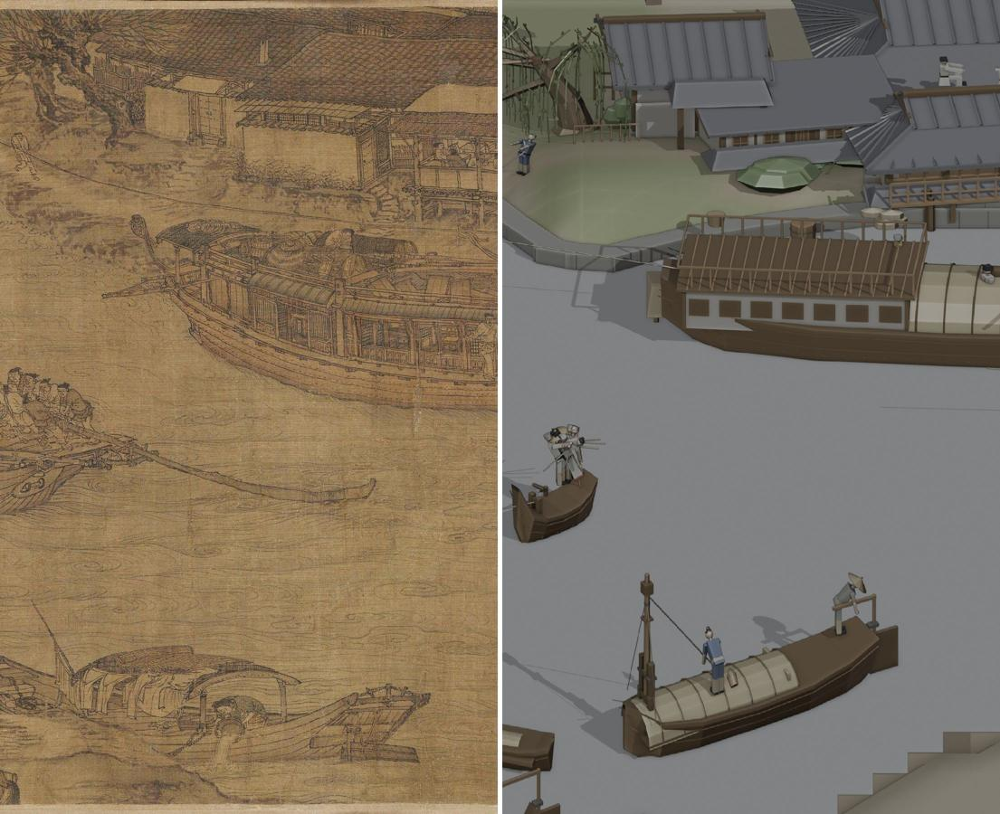
有误与缺失（21）
编号
类型
判定
问题
修正
H0044
building
有误
One storey: roof ~100 px low (y 275-385 vs 230-280), only a lower railing; upper gallery with patrons missing; stands on masonry, not piles.
storeys = 2, open upper gallery with balustrade at y~360; raise roof ~100 px; carry on wooden piles over water
O0074
prop
缺失
Lowered mast with pulley head lying aft on cargo boat (1020-1100, 470-640) not built.
build lowered mast spar lying fore-aft on B0018 deck, head at ~1060,480, tow rope tied to head
F0103
furniture
缺失
Gallery table not visible because H0044 upper gallery is not built.
place low table on H0044 upper gallery floor at 1008,360 once gallery exists
H0045
building
有误
Main hall roof split into several overlapping roofs with fan-shaped hip-corner artefacts and spike ornaments; painting shows one long continuous tiled hip-and-gable roof.
roof.type = hip_gable, one continuous roof x 480-1100; fix hip-corner rafter fan geometry; remove eave spikes
X0085
structure
有误
Built as grey masonry quay wall with few posts; painting shows open wooden piles and bracing with lower walkway and railing.
build as timber pile frame (posts + cross-bracing) with plank walkway and railing, no stone wall
X0086
structure
缺失
No wooden stair visible at 828-890, 400-470; a stack of round discs sits at 790-890, 460-500 instead.
build short wooden stair with railing rising from bank to H0044 lower walkway; check what the discs are
X0087
structure
有误
Stern crossbar post built at ~770-830, 1270-1330, ~200 px above and 60 px left of painted 865,1560 (whole moored boat too high).
move with moored boat ~150 px down; post at stern beside rudder head
F0105
furniture
缺失
Bale/mat bundle heap amidships (780-920, 500-585) not visible; covered by oversized rafter frame.
show heap of wrapped bales on deck amidships; remove the rafter frame above it
O0075
prop
缺失
Large hung rudder of moored boat (700-950, 1500-1710) absent; 3D stern ends in a flat board.
build hung rudder blade into water with tiller post at stern, base ~825,1710
T0128
tree
有误
Rendered as one flat octagonal green disc ~150 px wide; painting shows a long low band of leafy bushes 560-830.
build as row of 5-6 small irregular bushes along bank x 560-830, height ~40 px
F0106
furniture
有误
Only two small upright cylinders standing on top of the rafter frame; painting has a row of 4-5 big hooped casks on foredeck, one on its side.
place 4-5 casks ~50 px diameter on deck x 540-790, one lying on its side
B0018
boat
有误
Hull bottom ~80 px high (790 vs 870); blunt box bow without upswept stem; white wall with square holes instead of arched-roof lattice deckhouse.
lower hull 80 px; upswept bow stem; long deckhouse with lattice windows and arched roof; cargo heaped above
O0076
prop
缺失
Small square chimney on main-hall roof not built.
build small brick stack 28x60 px at 586,80-140 on H0045 roof
O0077
prop
有误
A line exists but runs along the bank foot ~150 px low; painting rope goes from tracker shoulder (48,330) to mast head (1060,480).
draw tow rope from P0137 shoulder to O0074 mast head, gentle sag
O0078
prop
缺失
Very long bow sweep oar (150-825, 955-1100) on lower-left boat not built; strong visual element.
build sweep oar ~670 px long pivoted on lower-left boat bow, blade down-right into water
X0088
structure
有误
Built as huge open rafter frame spanning x 390-940; painting shows small gabled mat canopy at bow x 350-525.
size 35% of current, x 350-525; closed mat gable roof on 4 posts
O0080
prop
缺失
Long oar/punt pole jutting left from cargo boat bow (228-440, 618-662) absent.
build pole ~210 px long resting on bow gunwale pointing left
add 6-7 draped cloth panels over cabin roof x 180-460
X0089
structure
有误
Bank is a flat plain ending in a vertical stone quay; painting shows sloping rocky natural bank.
slope bank down to water over y 330-520, no stone facing west of x 800
X0090
structure
有误
Built as low post-and-rail fence at y ~290; painting shows tall lath fence at y 120-215.
tall vertical-lath fence, height ~90 px, base at 268,215
P0132
person
有误
Standing upright on cabin roof ~190 px above painted base; should kneel at gunwale emptying basin.
move to 534,1650 on gunwale, pose work_bent, add basin
人群
bank x 0-100 y 290-390：画中约 1 人，模型 1 人。Tracker present but holds a pole; rope should run over shoulder.
H0044 gallery x 900-1100 y 290-360：画中约 3 人，模型 0 人。Patrons missing; one figure stands on H0045 roof at ~975,150 instead.
cargo boat x 230-1100 y 470-900：画中约 3 人，模型 2 人。P0131 lying on cargo heap not visible at 750,550; standing man at stern right missing.
lower-left boat x 0-300 y 790-1100：画中约 8 人，模型 4 人。Crowd pulling sweep oar reduced to 4 interpenetrating figures; no oar to pull.
moored boat x 0-950 y 1380-1700：画中约 2 人，模型 2 人。P0132 stands on cabin roof at ~470,1460 instead of bending at gunwale at 534,1650; cone-hat man at stern not in painting.
模型多出的东西
(975, 150) standing figure on main-hall roof H0045
(840, 480) stack of round discs (casks/baskets?) at foot of H0044
(770, 1300) man in conical hat leaning on stern frame of moored boat
(920, 1700) grey stepped stone structure in the water, bottom right
(50, 1650) extra small boat hull and railing at bottom-left corner
(325, 1430) upright mast with block on moored boat; painting has a pole leaning left at x 70-160
tile18 · 219.5–235.3 cm 2/5
正确 6 · 有误 10 · 缺失 3 · 忽略 6
The overall layout reads: big moored boat top-left, trackers on the far bank top-right, a large old willow in the middle-left, small boats and foreground roofs at the bottom. The worst problems are the three foreground near-bank buildings. Their roofs sit about 120-200 px too high in the image, H0051 has broken fan-shaped geometry, and the thatched hut H0050 has a grey tiled roof. The willows are built as straight plank-like limbs with sparse strands, not dense gnarled crowns, and their long limbs cut across the boats and the trackers. The tow rope and the B0023 rudder are not built. The 7-man hauling crew on B0020 is squeezed into about 80 px at the right edge, and the far-bank shop H0048 is a huge grey ribbed mass instead of a low open shed.
得分与判定来自第一轮（修正前）；图为修正后的第二轮渲染，第一轮渲染见下。
第一轮渲染（修正前）
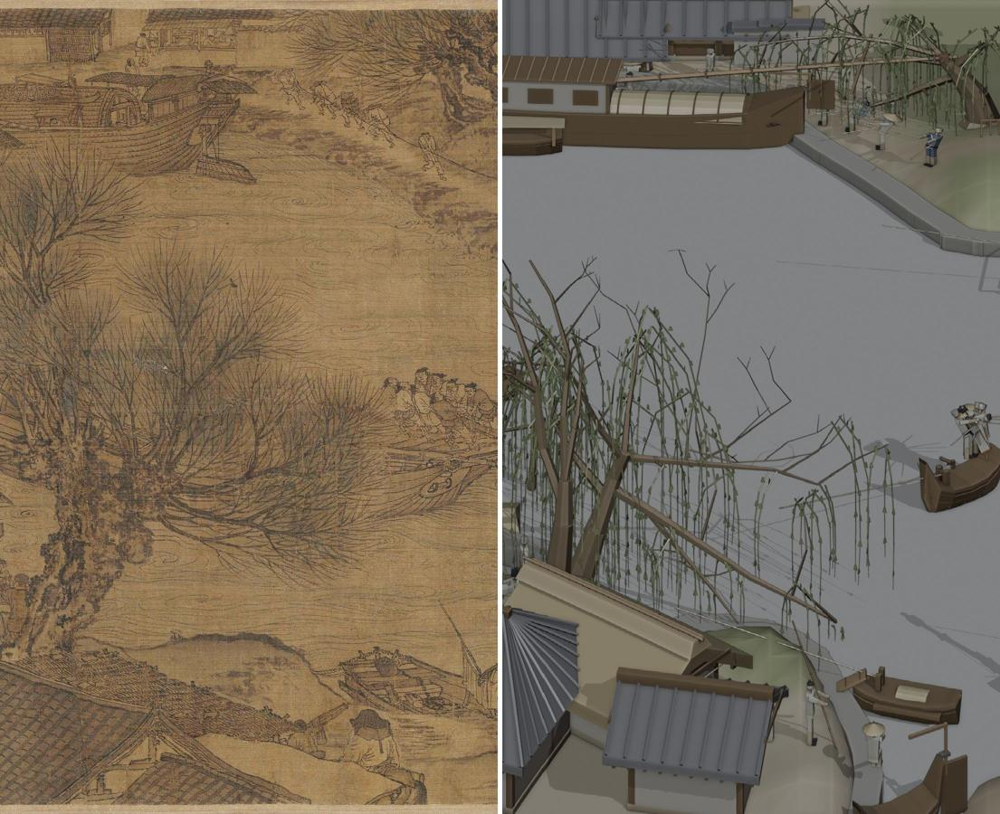
有误与缺失（17）
编号
类型
判定
问题
修正
B0019
boat
有误
Painting shows a tall raised mast with rigging at x 1000-1060 y 1340-1560; 3D shows only a short post and arm at x~985 y 1600-1710.
mast.state = raised, mast height ~250 px; check the boat's position (mostly in tile19).
T0130
tree
有误
Dense dark willow crown at x 600-1100 y 0-300 built as a tilted trunk with long straight bare limbs arching over the trackers to x 560.
Shorter limbs (max ~250 px), denser foliage mass, upright trunk at x~1000-1080; keep limbs clear of the trackers.
B0020
boat
有误
Hull visible only at x 925-1100; the painted bow reaches x~830. The foredeck is too short for the 7 haulers.
Move the boat ~90 px left / extend the bow to x 830; foredeck long enough for 7 crew x 850-1100.
O0083
prop
缺失
Long tow rope from the boat (off right) to the trackers' shoulders x 615-1100 y 225-392 is absent; trackers hold straight sticks instead.
Build the tow rope as a curve from the mast top to each tracker's shoulder; remove the stick props from the haul pose.
X0092
structure
有误
Far-bank wall line renders as a tall grey ribbed block x 520-700 y 0-120 that reads as a building; the painting shows a low bank and foliage.
Wall height 60% lower, or drop it here; must not fuse with the H0048 massing.
O0084
prop
缺失
The large rudder blade at the stern of the big boat B0023 (x 430-525 y 290-400) is not built.
Add a rudder to the B0023 spec: blade ~90x110 px, hanging below the stern at x~480.
T0131
tree
有误
Dense twiggy crown x 240-720 y 460-1000 built as a few sparse straight forks mixed with willow strands.
Raise twig density ~3x, shorter thinner terminal branches, no hanging willow strands on this tree.
T0132
tree
有误
The gnarled, pollarded old willow becomes a forked trunk with long straight plank limbs; one limb dips into the water at (870,1350). Foliage is sparse.
Thick knotted short trunk at x 50-280, dense crown spreading right to x~890 y 560-1000; limbs must stay above the water.
H0048
building
有误
Low open-front shop (roof eave y~45) built inside a huge grey ribbed mass filling y 0-120 across x 0-700.
Build as a 1-storey open shed 3 bays, eave ~50 px below the tile top, roof about half the current height.
H0049
building
有误
Painted tiled gable roof with bargeboards at x 330-640 y 1640-1800; 3D is a flat grey shed roof at x 260-600 y 1480-1730, ~140 px too high.
Move ~140 px down (toward the viewer) and ~60 px right; roof.type = gable with the gable end facing the viewer.
H0050
building
有误
Thatched ridge runs (0,1460)-(690,1620); 3D shows a beige slab (0,1240)-(560,1420), ~200 px too high. It also has grey tiles near (400,1600).
Move ~200 px down; roof.material = thatch; lower the roof pitch; one long roof along the bank.
H0051
building
有误
Large tiled hip roof x 0-330 y 1470-1800 rendered as a radial fan of grey ribs x 0-170 y 1340-1700: broken geometry, half width.
Rebuild as a hip roof spanning x 0-330, eave at y~1800, ridge at y~1500; check the faces-north rotation.
O0086
prop
缺失
A row of coiled ropes on the B0023 cabin roof x 0-135 y 188-235 is not built.
Add 6-8 rope-coil discs (~20 px) on the B0023 forward cabin roof.
P0143
person
有误
Rendered standing upright with a small pale conical hat; the painting shows him seated, back to the viewer, with a very wide dark hat.
Use the sit pose on the B0021 stern; wide dark hat ~1.5x the shoulder width.
P0146
person
有误
Pole leans up-left and near vertical; in the painting it is raised diagonally up to the right.
Rotate the pole so its tip points up-right at ~45 degrees.
P0142
person
有误
Haul pose is upright with a stick; he should be bent double on the rope.
Bend the torso ~70 degrees forward; hands on the O0083 rope.
P0141
person
有误
Not visible at x 848-900; the painting has him leaning far back on the line.
Place at the painted base (874,948) on the B0020 foredeck.
人群
far bank trackers x 600-1000 y 150-400：画中约 5 人，模型 4 人。Figures stand upright holding straight white sticks; they are not bent double on a rope. No rope. Irregular spacing, and they stand among the T0130 limbs.
B0020 foredeck crew x 848-1100 y 812-972：画中约 7 人，模型 3 人。The crew is bunched into x 990-1080 and overlapping; P0140, P0141 and P0138 are not visible at their painted x 870-960.
far-bank shop and B0023 deck x 260-480 y 70-280：画中约 8 人，模型 2 人。P0151 and P0150 (walking at x 300-350 y 72-142) are not visible, probably buried in the grey H0048/X0092 mass; the cabin figures are hidden, which is expected.
near bank left x 0-70 y 1260-1400：画中约 2 人，模型 1 人。One pale figure near the trunk at y~1240, about 40 px high; P0157 is not visible, probably under the H0051 roof.
near-bank boats x 640-870 y 1565-1750：画中约 2 人，模型 2 人。Present at about the right places; pose and hat errors are listed below.
模型多出的东西
(980, 220) A grey stone quay kerb along the far bank x 870-1100 y 150-290; the painting shows a soft sloping earth bank.
(615, 250) The B0023 stern hull box extends to x~680 with a hanging board at (710,210); the painted stern ends at x~545.
(470, 140) A pale bamboo pole (lowered mast?) lies across the B0023 roof from x 250 to x 700, y 105-180, projecting over the bank; it is not in the painting.
(870, 1350) A T0132 limb runs diagonally down into the water.
tile19 · 232.4–248.2 cm 2/5
正确 6 · 有误 18 · 缺失 7 · 忽略 6
Overall layout matches: the far-bank boat row (y 150-450), open water with the diagonal stern at the left, willows over the water on the right, and the moored boat with its stern canopy above the big near-bank roof. The worst problems: the willows are built as green, leafy, vertical weeping strands, but the painting shows bare early-spring willows with dense fine branches swept to the lower-left. Oversized grey roofs at the top-left (x 0-410, y 0-260) and bottom-left (x 0-280, y 1250-1800) hide the open shed with tables and the street stall with its porter. The far-bank boat cabins (B0023, B0028) read as white-walled houses or bare tilted hulls, not mat-arch cabins. The big near-bank roof is drawn as a radial fan, not the painting's straight diagonal tiled eave.
得分与判定来自第一轮（修正前）；图为修正后的第二轮渲染，第一轮渲染见下。
第一轮渲染（修正前）
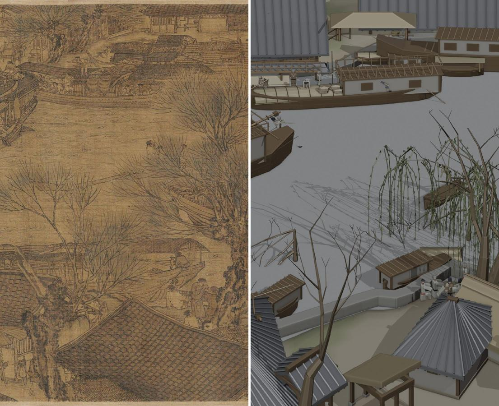
有误与缺失（29）
编号
类型
判定
问题
修正
B0023
boat
有误
Cabin built as white-walled rectangular house with windows and plank roof; painting shows tall woven mat-arch cabin on a long hull.
cabin.type = mat_arch; remove wall windows; keep hull bow left at x 695-1100 y 150-300
F0109
furniture
缺失
Tall shelving with bundles in shop's right bay not visible; shop front hidden behind B0023 cabin and the oversized roof.
after H0052 fix, place visible shelf 95 px wide at shop front right bay
T0133
tree
有误
Trunk position ok (x 960-1100) but crown is a few thick sparse limbs plus green strands; painting has a dense cloud of fine bare branches reaching up to y 300.
willow.foliage = none (bare spring twigs); add dense fine branchlets fanning up-left over water to y 300
H0052
building
有误
Roof far too tall: grey tiled slope fills y 0-140 and hides open front; painting roof band only y 20-60 with open bays below.
roof height 60% lower; eave at y ~60; keep front open (no wall) so table/shelf show
F0111
furniture
缺失
Table inside the open shop front not visible (shop front closed/occluded).
show after H0052 front opened
T0134
tree
有误
Built as green vertical weeping strands hanging straight down; painting fronds are bare and sweep diagonally to the lower-left over water.
bare willow, fronds angled ~45 deg to lower-left, no green leaves
O0088
prop
缺失
Knob-topped tall post in front of canopy man not built.
add thin post 58 px tall with round knob at (762,1194) on stern deck
X0097
structure
缺失
Lattice panel on shop's left bay not visible; covered by B0028/B0023 hulls and roof.
after H0052 roof lowered, ensure screen visible at x 700-780 y 75-142
B0027
boat
有误
Boat with flat plank cabin roof becomes a long white-walled cabin with rafter railing extending left to x ~380.
shorten cabin to x 630-790; flat plank roof, no rafter railing on top
B0028
boat
有误
Reads as a bare dark hull tilted up-right (x 560-800 y 150-280), no arched mat cabin, no coiled rope.
level the hull; add arched woven-mat cabin and coiled rope on roof
X0098
structure
有误
Built as an open hip-roofed pavilion on posts, set higher (y 50-130); painting is a low shed walled with hanging reed mats.
build low gable shed walled with mat panels, open door at left end; height 40% lower
F0113
furniture
有误
Bale shows as a squat round lump; painting bale is ~75 px tall.
height x2, upright bale shape
O0090
prop
缺失
Long double tow line across water (y 780-835, x 0-900) not built; a visible line in the painting.
add thin double rope from left edge (0,835) to small boat B0025 (900,780)
H0054
building
有误
At its base sits a tan flat-roof open pavilion on tall posts (x 420-760 y 1500-1800); painting shows a low lean-to with raked roof under big eave.
roof.type = lean_to raked thatch; height 50% lower; trim to x 350-560
F0114
furniture
有误
Wicker jar built as squat short cylinder; painting jar ~95 px tall.
height x2, rounded tall jar with wicker band
O0091
prop
缺失
Long bent bamboo pole from roof boatman's hands up-right to far bank not built; 3D shows only a vertical post.
add 200 px pole from (330,300) to (500,220), slight bend
F0115
furniture
有误
Large jar too short, same as F0114.
height x2, rounded tall jar
A0029
animal
有误
Bird lands at x ~215 y 650, about 160 px left of painted position.
move 160 px right to (378,668)
T0136
tree
有误
Built as a single sparse bare tree with few thick limbs; painting is a willow with two slim trunks and many fine twigs.
two trunks at x 220-300 and 300-360; dense fine bare willow twigs
X0099
structure
有误
Slat fence not visible; only a single post at x ~360; area covered by the oversized left roof.
build vertical-slat fence along x 280-450 y 45-225
F0117
furniture
有误
Table hidden under the oversized grey roof eave; painting shed is open.
fix covering building (open shed) so table at (151,268) shows
O0093
prop
缺失
Porter's two sacks not built; whole area covered by grey roof.
add round + tubular sack hanging from P0174's pole front
F0118
furniture
有误
Table hidden under the oversized grey roof.
open the shed so table shows at (70,232)
F0119
furniture
有误
Bench hidden under the oversized grey roof.
open the shed so bench shows at (68,270)
X0102
structure
有误
Lattice fragment buried under big grey roof at top-left.
fix tile20 building roof height so lattice shows at x 0-52 y 40-106
P0164
person
有误
Fisherman appears displaced ~160 px right and floating in willow branches without a boat.
place at (682,700) seated in a small boat, facing right
P0161
person
有误
Seated man built standing.
pose = sit, back to viewer
P0163
person
有误
Seated man built standing.
pose = sit on bank at (764,1368)
P0174
person
有误
Porter hidden under a roof; street not visible.
remove/shrink covering roof at x 0-280 y 1250-1800
人群
far-bank boats x 0-700 y 150-540：画中约 12 人，模型 8 人。Deck boatmen present on B0034; P0167 should stand on the mat roof pushing the pole up-right, but stands on deck by a post; window passengers P0165/P0166 barely visible.
water/willows x 600-950 y 600-960：画中约 2 人，模型 1 人。One figure seems to hang in the willow at about (840,750) with no boat beneath; fisherman P0164 should sit at (682,700).
near bank group x 730-930 y 1100-1430：画中约 5 人，模型 5 人。Group present but bases ~80-120 px too high (y ~1300 vs 1370-1430); seated men read as standing.
street south x 0-360 y 1580-1800：画中约 4 人，模型 0 人。Porter P0174, P0168, P0169 hidden under the extra grey roof at bottom-left.
模型多出的东西
(200, 130) Huge grey tiled roof (x 0-410, y 0-260) where the painting shows willow foliage and an open shed with tables
(140, 1520) Large grey roof (x 0-280, y 1250-1800) over the street stall, umbrella and porter area
(590, 1650) Tan flat-roofed open pavilion on tall posts (x 420-760, y 1500-1800) on top of the painted big tiled roof
(860, 1500) Big near-bank roof drawn as a radial fan (pyramid corner) instead of one straight diagonal tiled eave from (250,1500) to (1100,1350)
tile20 · 245.3–261.1 cm 2/5
正确 9 · 有误 29 · 缺失 9 · 忽略 12
Still a partial match. The far bank reads better: the tea house now has posts and a balcony, the bridge-foot tables are visible, and the cart and street porters are right. The big boat now has a curved mat-roof cabin. The near bank is still badly wrong. The restaurant H0059/H0062 roof starts at y~960 instead of ~1170, so it buries all three moored boats, and their crew stand on the roof ridge. H0061 and H0058 are walled boxes sitting about 150 px north, on top of the open restaurant front and the umbrella stall. The bridge deck lies ~150-300 px too low and cuts through the big boat's bow, and the lowered mast, rigging and rudder are still absent.
第二轮复核（修正生成器与布局后，第一轮得分 2/5）：Improved: big boat has a mat-roof cabin; tea house has open posts and a balcony; bridge-foot tables visible; H0058/H0061 are separate houses with proper hip ridges (no fan artefact). Still wrong: restaurant roof buries moored boats, H0061/H0058 ~150 px north over the restaurant front and stall, bridge too low, X0104 offset, no mast, rigging or rudder.
第一轮渲染（修正前）
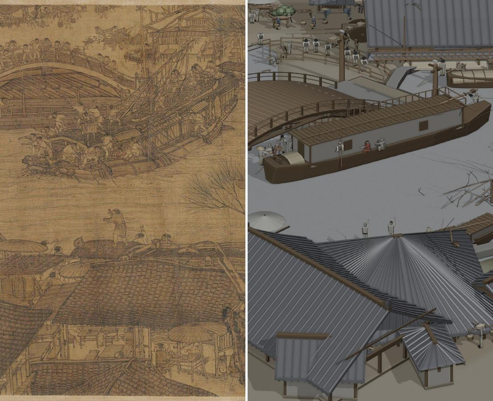
有误与缺失（42）
编号
类型
判定
问题
修正
B0030
boat
有误
Boat shows at x 1000-1100 y 940-1080, ~140 px north of painted base y 1214, half under restaurant roof.
move 140 px south after cutting back H0059 roof
X0100
structure
缺失
Long thick diagonal timber across moored boats at right edge not built.
build round beam ~0.3 m dia from (964,1300) to (1100,1085)
O0092
prop
缺失
Rudder blade at the big boat's stern not built; stern ends in a plain pointed box.
add large balanced rudder blade below stern at (1025,594)
H0056
building
有误
No shop front with slat railing at (1011,1580); open ground with a porter there.
check footprint; place small open shop front behind the umbrella stall at base (1011,1580)
T0138
tree
有误
Willow not visible; tea-house roof and balcony occupy x 880-1100 y 0-200.
after shrinking H0057, keep willow crown above and right of tea house, outside roof
O0094
prop
缺失
Tall upright plank at the stern not built.
add 2.5 m upright plank at stern (977,530)
H0057
building
有误
Now has posts and a balcony, but the gable roof spans x 550-1100 (about twice the width); no reed-mat awning.
footprint ~40% narrower, x 645-900; storeys = 2 with smaller upper storey; add awning X0103
F0120
furniture
有误
Table not visible; white slab and boat-stern post sit at (840-880,265-400).
place square table at (915,273) in open yard; remove white slab
K0003
stall
有误
Only one umbrella shows at y~1330-1400 (~110 px north); H0058 pavilion stands on the stall.
move H0058 south; two umbrellas ~3 m dia over table at y 1440-1530
B0032
boat
有误
Moored boat fully hidden under the restaurant roof.
cut H0059 roof back to y>=1170 so boat shows at y 1080-1212
F0121
furniture
有误
Stall table hidden inside the H0058 pavilion walls.
move H0058 south ~150 px
X0103
structure
缺失
Excluded as part of H0057, but H0057 has no awning at y 136-170.
add reed-mat awning to H0057 front, x 668-942
H0058
building
有误
Walled hip pavilion at x 680-930 y 1390-1690, ~150 px north, covering the stall; painting shows only a roof at y 1600-1790.
Merged with F0124 into one long beam-bench at x 700-890 y 220-237; no square table.
build square table 1 m at (762,265)
O0099
prop
缺失
Lowered mast with rigging, the key element, still not built; only a thin near-horizontal pole on stern deck.
build mast leaning up-right from (754,498) to (896,162), rope bindings, rigging lines
F0123
furniture
有误
Interior shelf hidden behind H0058 pavilion wall.
move H0058 south; keep H0059 front open
F0124
furniture
有误
Bench merged into one long beam with F0122.
short bench 1 m beside table at (708,276)
H0059
building
有误
Roof still starts at y~960 vs painted ~1170 and merges with H0062; open hall now visible at x 480-700 y 1340-1550.
move roof north edge 200 px south; height ~35% lower; keep open front
X0104
structure
有误
Thin plain pole at x~706 (70 px right), no cross-shaped vane top.
move 70 px left to (635,340); add cross-arm vane top at y~30-60
G0008
sign
缺失
Standing signboard at restaurant front not built.
build standing sign 0.5x1.2 m at (574,1605)
B0033
boat
有误
Moored cargo boat hidden under restaurant roof; its crew stand on the roof ridge at y~1010.
cut H0059/H0062 roof back south of y 1180
F0126
furniture
有误
Hidden under H0061 box roof.
move H0061 south ~150 px
F0127
furniture
有误
Hidden under H0061 box roof.
move H0061 south ~150 px
O0102
prop
缺失
Two hawser coils on moored boat roof not built (boat hidden anyway).
add two rope coils ~1 m dia on B0033 roof
F0128
furniture
有误
Hidden under H0061 box roof.
move H0061 south ~150 px
A0031
animal
有误
Reads as a round tub on a tall post at (400,160-370), not an animal.
check donkey asset at (402,214); remove post or move it
F0129
furniture
有误
Hidden under H0061 box roof.
move H0061 south ~150 px
O0105
prop
缺失
Tilted umbrella at (349,1272) not built; area under restaurant roof.
build open umbrella ~2.5 m dia tilted 30° at (349,1272)
H0061
building
有误
Built as a white-walled box with window, roof y 1450-1640, ~160 px north; covers restaurant front tables.
move 160 px south so roof spans y 1615-1780; hide walls
O0106
prop
缺失
Heap of matting on bow roof edge not built.
add low mat bundle on bow roof edge at (326,620)
X0106
structure
有误
Bridge deck lies at y 330-650, ~150-300 px low, top surface shown and cuts through the boat bow; spectators on separate railing.
raise arch so rail lands at y 180-300 and underside at ~420; clear the boat
F0130
furniture
有误
Hidden under H0061 box roof.
move H0061 south ~150 px
X0107
structure
有误
Revetment railing under the arch not visible; a cabin structure and boat fill the opening.
check fence line at y 465-582 sits behind boat and is visible
F0131
furniture
有误
Hidden under H0061 box roof.
move H0061 south ~150 px
F0133
furniture
有误
Hidden under H0061 / H0062 roofs.
move H0061 south; lower H0062
F0134
furniture
有误
Hidden under H0061 box roof.
move H0061 south ~150 px
H0062
building
有误
Still merged into one huge slope x 0-500 y 960-1500 instead of small roofs at y 1338-1452.
separate from H0059; height 40% lower; keep roofs in bbox
H0063
building
有误
Booth with lattice awning not visible; covered by the oversized roof slope.
after lowering H0059/H0062, build as open booth with flat lattice awning
P0195
person
有误
Stands on the restaurant roof ridge instead of the boat roof.
fix H0059 roof extent; keep on B0033 roof
P0187
person
有误
On the restaurant roof, not on the boat.
fix H0059 roof extent
P0213
person
有误
Bow crew (also P0206, P0188, P0192) pinned against the hull side wall.
lower hull freeboard or place figures on bow deck
P0204
person
有误
Lean_rail figures upright on a railing detached from the bridge.
attach to the bridge rail once bridge raised; use leaning pose
人群
bridge deck x 0-640 y 170-310：画中约 20 人，模型 14 人。Spectators stand upright on a separate railing over flat ground at the painted rail height; bridge deck itself is far lower.
big boat x 50-1000 y 280-760：画中约 20 人，模型 12 人。Bow crew bases (y 700-740) fall on the tall hull side wall, so figures look pinned to the hull; few figures on mat roof.
moored boats x 300-1000 y 1000-1110：画中约 5 人，模型 3 人。Visible only as small figures on the restaurant roof ridge at y~1010; boats hidden.
far-bank street x 0-640 y 20-230：画中约 11 人，模型 12 人。Good; porters with baskets and cart crew read well.
restaurant interior and stall x 130-1000 y 1440-1630：画中约 11 人，模型 2 人。Only P0189 and P0193 visible in the open hall; others hidden by H0061 and H0058 boxes.
模型多出的东西
(860, 268) White sloped slab at the stern / bridge foot, not in painting
(840, 340) Thick post with crossbar on the big boat's stern deck
(960, 1050) Cross-shaped timber frame standing on the restaurant roof
(490, 1530) Long diagonal pole crossing near-bank roofs from (260,1720) to (720,1340)
(85, 800) Straw hat and small bundle floating on the water in front of the bow
(90, 965) Open umbrella on the roof edge at x 0-180, ~100 px north of the painted umbrella
tile21 · 258.2–274.0 cm 2/5
正确 19 · 有误 22 · 缺失 2 · 忽略 8
The overall layout is recognisable: far-bank tea terrace at the top, a dense crowd at the west end of the Rainbow Bridge, the sedan and donkeys on the road, a shed and a big tiled roof at the bottom. The worst error is the bridge itself. The brown deck sits about one deck width (250-300 px) south-east of the painted deck, so its north railing follows the painted SOUTH arch line, the deck crowd stands on ground and on a pale strip north of the bridge, and the deck covers the water and the cargo boat B0034. Umbrella canopies are about 80-180 px too high and too large throughout, and they hide the donkey A0038 and take the place of the lattice panel O0115. The big tiled roof H0065 is split into two separate roofs, and the gate X0113 carries red banners that the painting does not show.
得分与判定来自第一轮（修正前）；图为修正后的第二轮渲染，第一轮渲染见下。
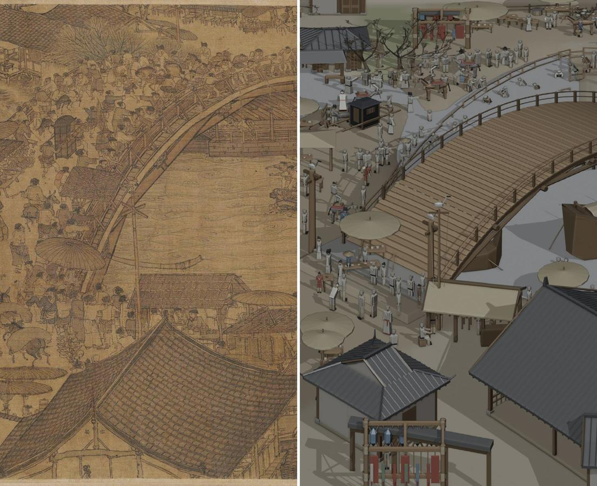
第一轮渲染（修正前）
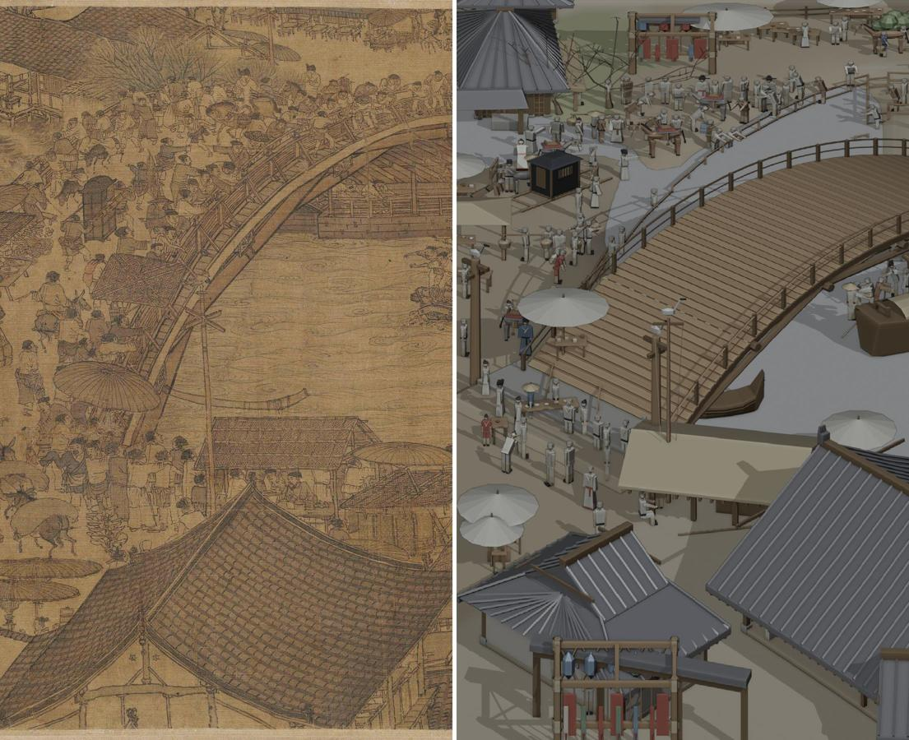
有误与缺失（30）
编号
类型
判定
问题
修正
B0034
boat
有误
Painted cabin under the arch (x745-1060, y330-560) is covered by the misplaced bridge deck; only the stern shows, at x930-1060 y690-830, ~250 px too far south.
Move the boat ~250 px north so the cabin roof sits at y330-560; it becomes visible once the bridge is moved.
T0140
tree
有误
Green dome crown is ~2x the painted small leafy tree (995-1045, 15-85) and covers horse A0032.
Scale the crown to 50%.
O0111
prop
缺失
Large woven lattice awning under the K0005 umbrella (857-1100, 1140-1232) is absent; H0065 roof occupies the place.
Build as a sloping lattice mat awning on 2-4 posts at the stall front.
K0006
stall
有误
Canopy at y0-20, ~70 px above the painted canopy (y25-110); mostly cut off by the tile top.
Lower the pole ~50%; canopy should span y25-110.
H0064
building
有误
Roof reads as a flat pale slab at x380-830; painting shows a 2-slope woven-mat gable shed at x490-880 with a clear ridge at y~1000.
One big canopy at x547-773, y0-63; painted tilted canopy is at x625-730, y93-147. It is ~85 px too high and ~2x too wide.
Lower the pole ~50%, scale the canopy to 50%, tilt ~20° as painted.
B0036
boat
有误
Built as a stubby ~140 px hull with a high bow at x620-760; painting shows a long narrow boat ~360 px (x380-740, y920-1000) with a raised bow, mostly under the bridge.
length x2.5, low narrow hull, bow raised at the east end; extend west under the bridge.
X0110
structure
有误
The built bridge (from a neighbour gid) is ~250-300 px south-east of the painted bridge: its north railing runs where the painted south arch is ((300,1000)-(700,420)-(1050,290)).
Move the bridge north/west by about one deck width so the south railing follows the painted arch line and the deck lies under the crowd.
H0065
building
有误
Painting shows one large hip roof, upper corner at (590,1135), eaves to (0,1500) and (1060,1350). 3D shows two separate roofs; the right one's corner is near (900,1070), ~300 px right.
Build as one hip roof, corner at (590,1135), rotated so the eaves follow the painted lines; remove the separate left roof.
K0008
stall
有误
No separate umbrella visible; the area is covered by the oversized K0007 canopy and the X0111 banner rack.
Build a small canopy at x550-628 with the canopy bottom at y~100, after K0007 is shrunk.
X0111
structure
有误
Built as a ~200x170 px gate with red and blue banners (x400-600, y30-200); painting shows a slender pole frame of ~125x75 px with no banners.
Scale to ~60%, remove the banners, use plain slanting poles.
T0141
tree
有误
Built as a bare leafless tree; painting shows dense fine frond foliage (willow-like) over x320-480, y30-260.
Build as a willow with dense drooping foliage; keep the height.
X0113
structure
有误
Built as a tall rack with red/green banners and lantern finials at x230-560 y1550-1800; painting shows only the open eave frame (beam and posts) of H0065 with a figure.
Remove the banners and finials; build as a simple post-and-beam front frame under the H0065 eave.
O0115
prop
缺失
Large tilted bamboo lattice panel at the bridge foot (268-448, 598-762) is absent; the raised K0009 canopy sits in its place.
Build as a tilted lattice mat awning on poles, ~180x160 px, leaning toward the bridge.
K0009
stall
有误
Canopy at y~697-800; painted canopy is at y850-965 (base 1012), so it is ~160 px too high and overlaps O0115.
Lower the pole ~60%; canopy bottom at y~950.
T0142
tree
有误
Bare leafless tree; painting shows dense fine foliage like T0141.
Build as a willow with dense foliage.
S0002
sedan
有误
Base at y~475, ~115 px north of the painted base (592). Box is squat (~105 px tall vs ~165) and overlaps donkey A0035.
Move 115 px south; height +50%, narrower tall lattice box; carrying poles to the bearers P0318/P0337.
A0036
animal
有误
Not visible at (168,480); hidden by the sedan and its poles or missing.
Check placement; it should show at x140-196, y413-480 after the sedan moves.
F0145
furniture
有误
Hidden under the extra left roof of the split H0065.
none (fixed by removing the left roof)
K0011
stall
有误
Canopy at y~1140-1290; painted canopy is at y1310-1420, ~140 px too high. Base under the extra left roof.
Lower the pole ~50%.
X0115
structure
有误
Painted verandah railing (0-200, 120-230) is not visible; the neighbour building's roof reaches y~330 and covers it (painted roof ends ~y180).
Shorten the front eave of that building by ~120 px so the railing shows.
A0038
animal
有误
Donkey with huge sack loads (20-172, 1200-1352) is hidden under the K0011/K0012 canopies; sacks not visible.
Add two large sack loads; becomes visible once the umbrellas are lowered.
K0012
stall
有误
Canopy at y~1200-1290; painted canopy at y1340-1460, ~150 px too high; base under the extra left roof.
Lower the pole ~50%.
F0147
furniture
有误
Hidden under the extra left roof of the split H0065.
none (fixed by removing the left roof)
P0235
person
有误
Boatman on the cabin roof is hidden under the misplaced bridge deck.
Visible after the bridge and B0034 moves; keep on the cabin roof.
P0237
person
有误
Hidden under the bridge deck.
Same as P0235.
P0244
person
有误
Lying boatman hidden under the bridge deck.
Same as P0235.
P0318
person
有误
Rear sedan bearer at (302,622) is ~150 px from the sedan, which sits at y~475.
Move the sedan south; attach the poles to the bearers.
P0337
person
有误
Front bearer at (170,652) is not connected to the sedan poles.
Same as P0318.
P0269
person
有误
Leans far out over the railing, but no railing is under him (bridge offset).
Fixed by the bridge move.
人群
far-bank terrace x 380-1100 y 0-150：画中约 10 人，模型 10 人。Count and placement fine; figures stiff, mostly white.
bridge deck crowd x 380-1100 y 150-650：画中约 60 人，模型 55 人。Figures sit at the painted base points, but the bridge deck is ~250-300 px south-east, so they stand on ground and a pale strip north of the bridge. The leaners at the railing lean over nothing.
west ramp / road x 0-400 y 300-1000：画中约 35 人，模型 35 人。Count ok; sedan bearers detached from the sedan, which is 115 px north.
near bank and shed x 0-1100 y 1000-1800：画中约 25 人，模型 18 人。Several figures hidden under the shed roof and the split H0065 roofs, roughly as in the painting; a few under the misplaced left roof.
boat cabin roof x 840-930 y 430-490：画中约 3 人，模型 0 人。Boatmen on the B0034 cabin roof are hidden under the bridge deck.
模型多出的东西
(340, 1440) Separate grey hip roof (x0-680, y1230-1650) that does not exist; the painting has one continuous H0065 roof.
(45, 750) Tall pole with a white vane-like top at the left edge (x30-60, y590-900); painting shows people and a stall there.
(500, 880) Second pole beside X0112, about 37 px to the west; the painting has one pole with a lashed crossbar.
(700, 650) Broad brown plank bridge deck over the open water x330-1100, y330-1000 (the misplaced bridge).
tile22 · 271.1–286.9 cm 3/5
正确 18 · 有误 9 · 缺失 12 · 忽略 17
The road crowd on the right, the stalls K0013/K0014/K0018 and the bottom porters read roughly like the painting. The worst errors are in the middle left: the big moored boat (bow at x~100,y~800, x 0-700, y 720-920) is absent, leaving only a short hull fragment, so its 7 boatmen stand on top of the K0020 booth roof. K0020 is built as a huge steep triangular gable (y 750-1180) instead of a low mat awning. Far-bank roofs (H0070, H0069, H0067) are about twice too deep and hide the open fronts and interiors; H0067 has a strange radial fan roof, and X0116 is built as a long roofed wall. The pack donkeys at x 830-1060 y 1170-1450 and the single-wheel cart's position are also wrong.
得分与判定来自第一轮（修正前）；图为修正后的第二轮渲染，第一轮渲染见下。
第一轮渲染（修正前）
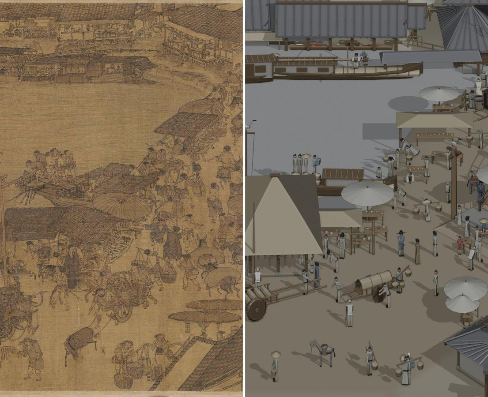
有误与缺失（29）
编号
类型
判定
问题
修正
T0143
tree
有误
bare branches show at x~1060,y100-150 poking through the H0067 roof instead of standing behind it at x951,y45
move the tree behind H0067 to the painted base, or shorten it so it does not pierce the roof
H0067
building
有误
radial fan-shaped steep roof; painting shows a broad tiled hip roof over an open stilted platform with tables
roof.type = hip, pitch about 40% lower; leave the platform front open so the tables show
X0116
structure
有误
built as a long solid wall with a roof cap, x 610-1080 y 230-290; painting shows an open railing at the platform edge
build as a low open balustrade x 738-1055, not a wall; remove the roof cap and the part west of x 738
F0148
furniture
缺失
H0067 platform looks empty; painted table is not visible
place a table on the platform floor at the painted base
F0149
furniture
缺失
bench on H0067 platform not visible
place a bench beside F0148
F0151
furniture
缺失
table on H0067 platform not visible
place a table at x890,y264 on the platform
F0152
furniture
缺失
table on H0067 platform not visible
place a table at x869,y208
F0153
furniture
缺失
bench on H0067 platform not visible
place a bench at x837,y222
F0154
furniture
缺失
table on H0067 platform not visible
place a table at x796,y218
F0155
furniture
缺失
rack at the back of H0067 not visible
add a rack against the back wall at x792,y175
H0069
building
有误
roof eave hangs down to y~165 and hides the open pavilion and the seated man P0363; painted eave is near y~90
roof height about 45% lower and raise the eave so the interior shows
H0070
building
有误
roof spans y 5-170, about 2x too deep; painting has the roof at y 10-90 and an open front with a counter and people at y 90-180
roof height about 50% lower; raise the eave to y~90 so the open shop front shows
K0019
stall
缺失
ground stall at x460-610,y1055-1195 is not visible; only bare ground
build a low mat on the ground with goods in front of seller P0375
K0020
stall
有误
huge steep triangular gable, x 0-330 y 750-1180, about 2x too tall; painting shows a low mat awning sloping toward the viewer
build as an open shed with a shallow mat lean-to roof, eave height ~40% of the current; ridge parallel to the river
V0003
vehicle
有误
covered cart sits at x550-690,y1220-1330, about 120 px north and 60 px east of the painted base; wheel too small
move to base 602,1465, enlarge the single wheel to ~0.9 m diameter, connect traces to A0039
A0039
animal
有误
position ok, but grey boxy donkey with head up and no traces to the cart; painted dark brown, head lowered, pulling
colour dark brown, head lowered, add traces to V0003
H0068
building
有误
only a small roof corner at x900-1100,y1440-1700; painting roof covers x680-1100,y1490-1800 with its eave diagonal from (780,1800) to (1060,1500)
move about 150 px west and enlarge the footprint so the eave runs along the painted diagonal
G0009
sign
缺失
small hanging lantern box under the bottom umbrella is absent
add a small box lantern hanging from the umbrella pole at x849,y1458-1510
O0129
prop
缺失
A-frame bipod mast on the left boat is clearly painted but absent in 3D
add a lowered bipod mast to that boat at x110-170,y198-288
O0130
prop
缺失
bow post of the big moored boat; the whole boat is missing
build with the boat (see systematic note)
O0131
prop
缺失
poles over the bow of the big moored boat; boat missing
build with the boat
P0382
person
有误
stands on the K0020 roof ridge in the air; the boat deck is missing
build the moored boat under the group, or drop the figure to the deck height
P0384
person
有误
floating on the K0020 roof; no boat deck
same as P0382
P0388
person
有误
floating on the K0020 roof; no boat deck
same as P0382
P0389
person
有误
floating on the K0020 roof; no boat deck
same as P0382
P0372
person
有误
seated on top of the cabin roof, not inside the rear cabin
lower to the cabin floor, inside the cabin
P0373
person
有误
seated on top of the cabin roof, not inside
lower to the cabin floor, inside the cabin
P0369
person
有误
pushes empty air; the cart is ~120 px north of him
move V0003 to its painted base
P0374
person
有误
hauling strap not connected; the cart is displaced
move V0003 to its painted base
人群
far-bank shops and boat x 0-1100 y 80-340：画中约 8 人，模型 4 人。P0363 and the H0067 diners are hidden by the deep roofs; P0372/P0373 sit on top of the boat cabin roof instead of inside
big moored boat deck x 190-350 y 660-840：画中约 7 人，模型 5 人。boat is missing, so the boatmen stand on the K0020 roof ridge in mid-air
road and stalls x 650-1100 y 300-1350：画中约 40 人，模型 35 人。good overall; the 3 loaded pack donkeys at x830-1060,y1170-1450 are absent, so P0349/P0353 stand beside nothing
booth and cart x 200-720 y 1090-1490：画中约 16 人，模型 13 人。official, runners and cart men roughly placed; the cart is displaced north, so the pull/push poses do not touch it
bottom porters x 0-830 y 1490-1800：画中约 6 人，模型 5 人。ok; the porter loads match
模型多出的东西
(960, 830) tall wooden T-shaped post, y 660-1000, among the K0014 tables; not in the painting
(425, 780) short brown boat hull fragment x330-520 in place of the full moored boat
(845, 260) long roofed wall x610-1080 (X0116 built as a wall) blocking the platform
tile23 · 284.1–299.8 cm 2/5
正确 6 · 有误 17 · 缺失 11 · 忽略 3
Layout reads partly: far-bank shop row, moored boat line, street with umbrella stall, cart and figures are roughly in place. The scene is dominated by errors at the 十千脚店 wine house: the huge tiered 彩楼欢门 is a flat two-post lattice frame standing on the water, and the wine-house building with red eaves under it is missing (only a dark roof strip at x 0-100 plus an unexplained grey box). The open shed H0071 has a giant steep pyramidal roof that covers the moored stern boat B0038 and its boatmen. The cart V0004 is about 230 px too far up-street, the vane pole and bird are about 120 px too tall, and the 新酒 banner on its horizontal boom is not there.
得分与判定来自第一轮（修正前）；图为修正后的第二轮渲染，第一轮渲染见下。
第一轮渲染（修正前）
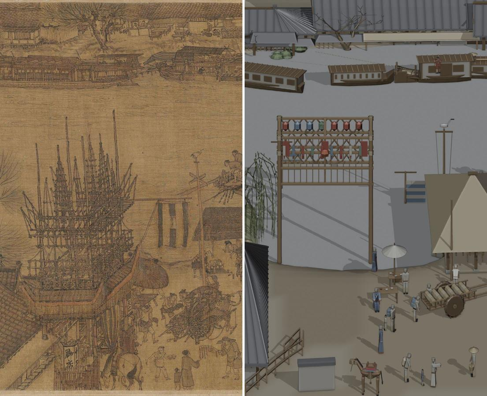
有误与缺失（31）
编号
类型
判定
问题
修正
B0038
boat
缺失
Stern platform with two boatmen at x 960-1100 y 680-935 not visible; hidden under oversized shed roof or not reaching this tile.
ensure stern platform reaches x 960, y 780-900; shrink H0071 roof so it shows
F0163
furniture
有误
Goods counter not visible; covered by a continuous beige fascia band along the shop front at y 150-190.
remove/raise the fascia so open bays and counter with round goods show
X0118
structure
有误
Built as a small brown block on top of the shed roof (~1030,775); painting shows a jar on the boat stern platform.
build as a small jar on B0038 stern deck at (1020,815), not a mooring post
H0071
building
有误
Roof is a huge steep pyramid/gable from y 770 to 1120, about 2.5x too tall; painted roof is a low thatched hip y 920-1050.
roof.type = hip, thatch; roof pitch ~30 deg; eave height so ridge lands at y ~920
F0165
furniture
缺失
Two stepped stands with rows of white cups under the shed absent.
build 2 stepped shelves 3 tiers with small white cups at (938,1235) inside shed
O0137
prop
缺失
Fan rack of hanging strips held by hat vendor P0393 absent; vendor holds a basket instead.
add fan-shaped rack of thin strips in P0393's outstretched hands, centre (939,1615)
V0004
vehicle
有误
Cart stands at ~(990,1290), about 230 px up-street and 70 px right of painted base (920,1545); load low and flat, not piled high.
move cart 230 px down (toward viewer) and 70 px left; pile bundles ~2x higher
X0119
structure
有误
Pole top at y ~570 vs painted 685 (about 120 px too tall); crossed X spars at y ~800 missing; extra guy ropes.
No quay edge at y 880-940; 3D land/water boundary runs at y ~1130, so shed and stern boat area read as water.
move near-bank edge up to y ~920 at x 700-1100; add stone/timber quay face
A0040
animal
有误
Bird sits on pole top at y ~565, about 140 px above painted 685-735, and reads as a pan/vane, not a crane.
follows pole fix; model as standing crane with long neck and legs
X0121
structure
缺失
Long diagonal plank from quay (770,900) up to stern (1010,800) not visible.
build plank 260 px long rising from quay to B0038 stern
H0072
building
有误
Long tiled roof right, but front is closed by a beige fascia band; painted bays are open with tables and seated men.
remove front fascia; open front 6 bays on posts; keep roof
F0166
furniture
有误
Table not visible; hidden behind shop fascia band.
visible once H0072 front opened
G0010
sign
缺失
Large 新酒 wine banner with three dark vertical stripes (705-835, 912-1140) absent; a small blue horizontally striped panel sits higher at y 820-900.
build tall cloth banner 130x230 px, light with 3 dark vertical stripes, hung from X0122 boom
F0167
furniture
有误
Table with bench not visible; hidden behind shop fascia band.
visible once H0072 front opened
X0122
structure
有误
Built as a short vertical T-post at x 735 standing on water; painting shows a horizontal boom from the huanmen at y 895, x 580-885, with diagonal stay.
rebuild as horizontal pole from huanmen top, x 580-885 at y ~895, with rope stay
B0040
boat
有误
Reads as a dark box and small hull; striped mat awning over bow missing.
add arched striped mat awning over bow half; bow pointing left
K0022
stall
有误
Umbrella about 40% too small (110 vs 185 px wide) and 80 px too high; painted umbrella is large and tilted.
umbrella diameter 1.7x, tilt 25 deg toward the gate, lower canopy to y ~1180-1330
F0168
furniture
有误
Two small tables at y ~1250 and ~1320, about 60-120 px above painted base 1375.
one table; move down to (650,1375); add triangular dark cloth
G0011
sign
缺失
Vertical placard 天之 on right gate post absent (gate posts themselves missing).
add narrow vertical board 40x85 px on right gate post of wine-house entrance
A0041
animal
有误
Horse is crude, about 30% small, head raised; painted horse is large, rump to viewer, head lowered.
scale 1.3; head lowered to ground; rotate so rump faces viewer, head left
O0140
prop
缺失
Long striped curtain hanging from huanmen eave over the right side of the entrance absent.
add hanging cloth 110x270 px, red/green/dark vertical stripes at (510,1330-1600)
G0012
sign
缺失
Placard 美禄 on inner gate post absent.
add narrow vertical board 45x85 px at (452,1520)
X0123
structure
有误
Painted: massive tiered bamboo scaffold with many spiky pinnacles atop the wine-house gate, base y 1600. Built: flat 2-post lattice frame x 60-460, posts standing in water at y 1180.
rebuild as 3D tiered scaffold x 90-645 on the gate roof, 6-8 tapering pinnacle towers, base y 1600
G0013
sign
缺失
Small vertical sign on left gate post absent.
add narrow board 45x95 px at (322,1480)
G0014
sign
缺失
十千脚店 framed shop board with scalloped top absent; a plain grey box stands at its place.
replace grey box with framed standing board 80x140 px, scalloped top, at (325,1695)
T0145
tree
有误
Shrub built as large green blobs at x 120-280, y 230-265, about 40 px below base, sitting on the water.
move up 40 px to y 205; scale 0.5
X0124
structure
有误
Not separable; merged with the left post of the flat huanmen frame at x ~155, which runs to y 510.
build as a separate bare pole at x 168 from scaffold top to y 650
P0393
person
有误
Holds a basket instead of the fan rack of strips.
hands forward holding O0137 rack, facing left
P0399
person
有误
Stands flat against the B0039 cabin front, looks embedded in the wall.
place on low deck in front of cabin at (878,365)
P0412
person
有误
Stands right beside the huanmen post at the water edge (560,1180); scaffold base wrong around him.
recheck after huanmen rebuilt
人群
far-bank shop row x 500-1100 y 80-190：画中约 4 人，模型 0 人。Seated men P0407 P0409 P0413 hidden behind the shop fascia band.
boats in river x 790-1100 y 280-370：画中约 3 人，模型 1 人。Only one red figure on B0039 cabin front, appears pressed against cabin wall; P0394 P0398 not visible.
stern boat near bank x 1000-1100 y 680-830：画中约 2 人，模型 0 人。P0391 and P0395 hidden under the giant H0071 roof.
street x 550-1100 y 1100-1780：画中约 17 人，模型 14 人。Group around cart (P0397 P0401 P0403) does not touch the cart because the cart is 230 px up-street; general facing ok.
模型多出的东西
(315, 1620) Plain grey box with roof cap at x 230-400 y 1510-1730, where the 十千脚店 board and gate entrance should be.
(770, 860) Blue/white horizontally striped panel beside the T-post, not in the painting at this place.
(200, 80) Far-bank roof with radial fan of ridge lines (mesh artefact) at x 120-320 y 20-150.
(130, 300) Green shrub blobs on the water (see T0145).
tile24 · 297.0–312.7 cm 2/5
正确 5 · 有误 16 · 缺失 7 · 忽略 6
The river half (far-bank house, willows, moored passenger boat, open water) matches reasonably, but the near-bank half does not read as the same scene. The wine house is a closed one-storey box whose roof sits about 120 px too low and covers the open upper-floor balcony, so the balustrade, table and all guests are invisible; the guests instead stand above the roof at y 1030-1100. The neighbouring hip roof H0073 is rotated 90 degrees (ridge runs toward the viewer) and is too narrow. All leafless shrubs are built as green faceted evergreen blobs, the big bare trees are far too sparse, and the far-bank donkeys are about 3x too large.
得分与判定来自第一轮（修正前）；图为修正后的第二轮渲染，第一轮渲染见下。
第一轮渲染（修正前）
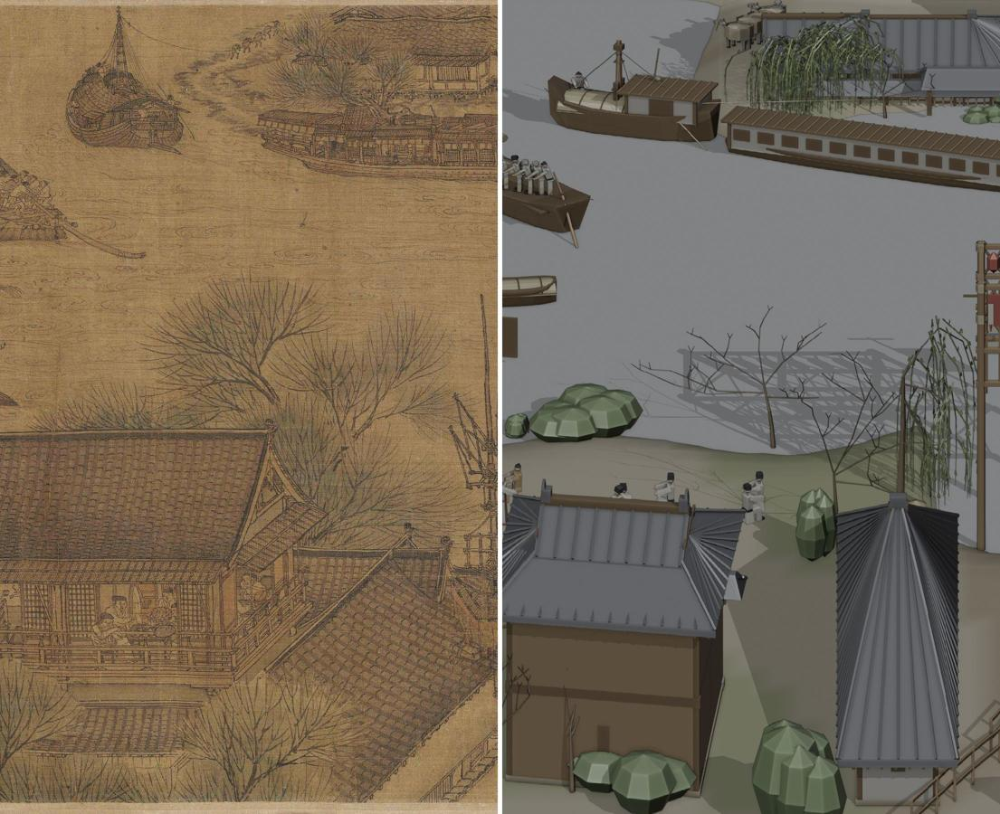
有误与缺失（29）
编号
类型
判定
问题
修正
T0146
tree
有误
Present at the right end of the fence, but as green faceted blobs; painting shows a small dark leafless shrub.
Use leafless twig-shrub asset, dark brown-grey, no green foliage.
H0073
building
有误
Built as narrow roof x 740-1000 with ridge running vertically on screen (toward viewer); painting: wide hip roof, horizontal ridge y 1215 x 650-985, covering x 560-1100 down to 1800.
Rotate 90 deg so ridge runs along front (faces south/front_right); front width about 430 px; keep eave at y 1768.
H0074
building
有误
Rendered as a tall plain grey wall-like block spanning x 560-1100, y 10-170; painting: house x 740-1100 with open veranda and lower front roof y 117-143.
Limit left end to x 740; open front veranda with posts; add second lower front roof layer; lower wall height about 30%.
T0148
tree
有误
Only one thin bare trunk visible at x about 840; painting has a pair of small leafless trees with visible crowns x 815-925, y 100-240.
Build two small bare trees with twig crowns about 110 px wide, 140 px tall.
T0149
tree
有误
Trunk position roughly right but crown is a few thin sticks; painting shows a dense fine-twig crown x 690-965, y 700-1150. Lower part hidden by mis-rotated H0073.
Crown density = dense, add 3-4x more twig branches following spec branch polylines.
T0152
tree
有误
Position ok (x 590-760, y 1560-1800) but built as green faceted bushes; painting: patch of leafless young willows x 470-840.
Leafless twig-shrub clumps, widen to x 470-840, no green.
T0153
tree
有误
Built as a green conical evergreen blob at x 610-700; painting shows fine leafless strokes.
Replace with sparse leafless twig shrub, height about 2.6 m.
A0043
animal
有误
Donkey about 3x too large with oversized round pack; sits about 30-40 px higher than painted (y 60-86).
Scale donkey and pack to about 0.35x; move about 35 px down.
A0044
animal
有误
Same as A0043: about 3x too large, pack too big, placed about 30 px too high.
Scale about 0.35x; move about 30 px down.
A0045
animal
有误
Same as A0043: about 3x too large, placed too high.
Scale about 0.35x; move about 30 px down.
A0046
animal
有误
Last donkey also oversized; the chain overall occupies x 476-632 vs painted 510-610.
Scale about 0.35x; space donkeys about 24 px apart along the path.
T0154
tree
有误
Present but very sparse: a few thin branches; painting has a wide dense fan of fine twigs x 325-720, y 600-950 leaning left.
Crown density = dense; follow spec branch fan to the left; add fine twig layer.
F0169
furniture
缺失
Interior invisible: upper floor is a closed box under a low roof.
Visible once the wine house upper floor is an open balcony (see H0076).
O0144
prop
缺失
Tow line from the cargo boat masthead to the far-bank trackers not drawn; a key narrative element.
Add thin dark line from masthead (about 150,20) to trackers on far bank (about 260-440, 35-112).
X0127
structure
缺失
Upper-floor balustrade not visible: the wine house has solid walls and its roof eave drops over the balcony.
Build open balcony with timber balustrade y 1395-1500 along front and right side of H0076.
F0170
furniture
缺失
Dining table hidden inside the closed box; painting shows it clearly on the open balcony.
Place a visible table at (340,1395) on the open upper floor.
X0128
structure
缺失
Flat slatted landing/canopy under the balcony (x 150-440, y 1510-1565) not visible; 3D shows plain wall.
Build as a flat slatted platform roof 290 px wide on the H0076 front, above the porch roof.
T0155
tree
有误
Built as green faceted bushes x 150-420; painting: low sparse leafless strokes x 50-480.
Leafless sparse twig shrubs, lower (about 1.9 m), no green.
O0147
prop
缺失
The long sweep oar of the left-edge crew boat (to x 320, y 565) is absent; the boat shows only a short pole.
Add sweep oar about 240 px long from the boat stern down-right, blade at (320,565).
T0156
tree
有误
Built as large green faceted blobs x 50-300, y 850-960; painting: fine upright leafless strokes leaning left.
Leafless twig clump leaning left, no green foliage.
T0158
tree
有误
Small green faceted blob; painting shows a leafless shrub clump.
Leafless twig shrub.
B0045
boat
有误
Built as an open hull x 0-120 with no roof; painting shows only a dark mat-arch roof fragment x 0-48.
Add mat_arch cabin roof; shift boat about 70 px left so only 48 px show.
F0171
furniture
缺失
Stool in the far-left bay hidden inside the closed wine house box.
Visible once the upper floor is open.
P0422
person
有误
Rendered standing above the wine house roof at about (240,1080), not leaning on the balcony rail at (240,1410).
Place on upper-floor slab at balcony rail; pose lean_rail.
P0419
person
有误
Standing above the roof at about (370,1090) instead of seated at the table.
Seat on upper floor at (372,1352), pose sit.
P0417
person
有误
Standing above the roof at about (540,1090) instead of sitting at the right window.
Seat on upper floor at (542,1352), pose sit.
P0416
person
有误
Standing at about (565,1080) above the roof edge instead of seated behind P0417.
Seat on upper floor at (568,1320).
P0421
person
有误
Not visible at the table; likely enclosed or lifted with the others.
Seat at (268,1385) facing viewer on open upper floor.
P0418
person
有误
Pole man appears at left end of the cargo boat, painting has him at the right end.
Move to stern-right end at (379,245), pole slanting down-right.
人群
wine house upper floor x 200-600 y 1260-1420：画中约 5 人，模型 0 人。No guests visible at the balcony; about 5 white standing figures appear instead above the roof ridge at y 1030-1100 at matching x (20, 240, 370, 540, 565).
far-bank path x 500-620 y 40-125：画中约 1 人，模型 1 人。Leader present near top; donkeys oversized hide him.
towed cargo boat x 150-400 y 20-260：画中约 2 人，模型 1 人。Pole man visible at bow-left; P0420 in cabin not visible; boatman P0418 should be at right end (379,245).
left-edge crew boat x 0-200 y 300-560：画中约 5 人，模型 5 人。Crew count ok; sweep oar missing so they push nothing.
模型多出的东西
(20, 1070) Standing figure above the wine house roof left end (likely a lifted upper-floor guest).
(15, 745) Dark vertical board/post on the water at the left edge.
(900, 900) Bright green drooping willow between T0149 and the mast area; painting has only fine drooping twigs there (T0147 from tile23), not a full green willow.
(1080, 700) Tall timber frame with red lanterns at the right edge; painting shows a bare mast and thin lattice frame there.
tile25 · 309.9–325.7 cm 2/5
正确 8 · 有误 12 · 缺失 6 · 忽略 5
Water layout reads roughly right: the boat under way (B0046) with its five-man stern crew, the right-edge boat and the far boat are near their painted places. The land half does not match: the restaurant H0076 is too narrow (starts ~x865 instead of x590) and only one storey, so its two upper-floor figures stand on the roof. H0077 is built as a huge pyramidal roof (x80-720) with fan-shaped seams that swallows the shrub T0165. The big moored boat B0047 sits ~90 px north with a low deckhouse and none of its bales, poles or long sweep; foreground trees are thin sticks against the painting's dense crowns.
得分与判定来自第一轮（修正前）；图为修正后的第二轮渲染，第一轮渲染见下。
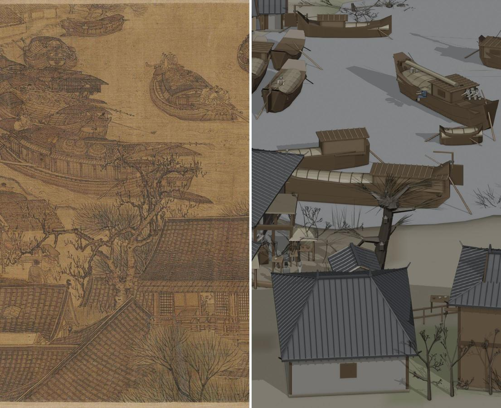
第一轮渲染（修正前）
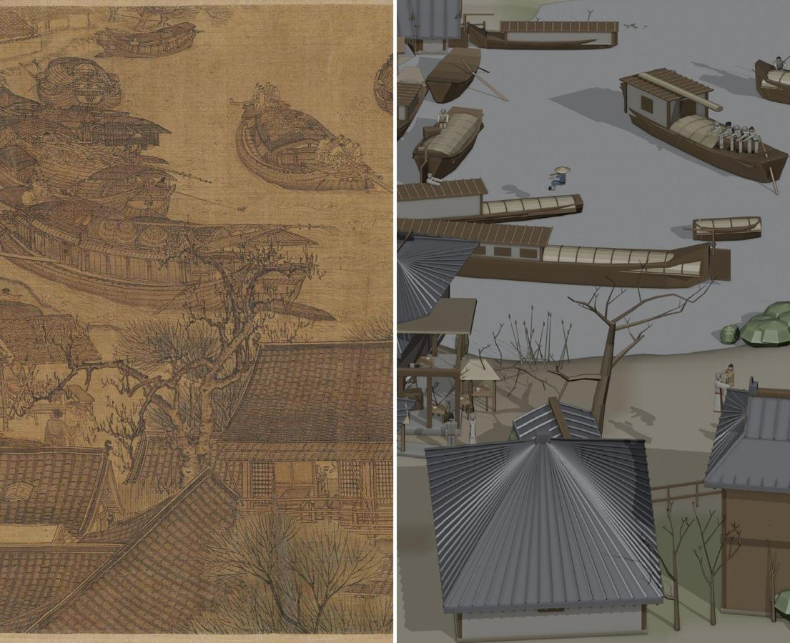
有误与缺失（23）
编号
类型
判定
问题
修正
H0076
building
有误
Too narrow: west end at x~865 vs painted x590; one storey, roof eaves y~1370 vs y~1240; no open upper gallery.
extend west edge ~275 px; storeys = 2 with open upper-floor gallery facing north; raise eaves ~130 px
T0157
tree
有误
Single spindly sapling; painting shows a broad dense bare crown filling x1000-1100 y1445-1800.
crown width x2, many more fine branches, trunk thicker
Shrub buried inside the oversized H0077 roof, not visible.
resolve with H0077 resize; keep shrub north of the roof
O0151
prop
缺失
Three large round woven bales on B0047 deckhouse roof, visually prominent, absent.
add 3 round woven bales ~70 px diameter on deckhouse roof at x240-480
O0152
prop
缺失
Row of six coiled ropes/baskets on fore deck x120-260 y410-462 absent.
add 6 rope coils ~22 px on fore deck
A0049
animal
有误
Dog hidden under an oversized grey shed roof covering x0-210 y660-900.
lower/shrink that shed roof so the bank at y~840 is visible
P0435
person
有误
Floats ~30 px above water next to the boat end at (440,500).
seat on the mat-cabin boat stern deck under the shelter
P0430
person
有误
Stands on top of H0076 roof.
place on upper-floor gallery floor at y~1384 after storeys = 2
P0428
person
有误
On H0076 roof, standing not seated.
seat behind upstairs table at y~1332
P0431
person
有误
Bow crew (P0431-P0434) not visible; buried in B0046 cabin.
stand on raised bow deck in front of cabin
P0423
person
有误
Stands on cabin roof.
seat inside cabin opening
人群
boat B0046 x640-1100 y215-480：画中约 9 人，模型 5 人。Five stern sculling men OK (~40 px high); four bow men P0431-P0434 not visible, area filled by white cabin.
right-edge boat B0044 x1040-1100 y150-330：画中约 1 人，模型 1 人。P0423 stands on cabin roof instead of sitting inside.
moored boats x0-480 y450-600：画中约 2 人，模型 2 人。P0435 floats in the air beside the boat; P0439 sits on deckhouse roof instead of the cabin opening.
left bank x0-250 y800-1260：画中约 4 人，模型 2 人。P0436/P0437 talking pair OK; P0441 and P0440 hidden under the oversized shed roof/frame.
restaurant upper floor x880-950 y1290-1384：画中约 2 人，模型 2 人。Both figures stand on the H0076 roof ridge at y~1020-1160, not in a gallery.
模型多出的东西
(100, 780) Large grey hip roof of left-bank shed, far too high/large, covers B0047 stern, dog and edge figure
(925, 640) Small mat-roofed boat in open water where the painting shows only water and the anchor line
(1000, 900) Green rounded shrubs on the bank/water edge; painting shows reeds and water here
(840, 1380) Free-standing wooden rail on the ground in front of the restaurant
(150, 200) Two small plain boats instead of the painting's large boat with tall round woven covers (owned by neighbour tile)
tile26 · 322.8–338.6 cm 2/5
正确 20 · 有误 15 · 缺失 15 · 忽略 10
The far bank (house row, road group with porter, three moored boats, stump tree T0169) still reads well and is in place; T0169 is now a proper dark stump. The near-bank tea-house scene is still lost: the tea-house roof H0087 (tile27) is again a two-tier closed hip roof at x 260-1100 y 610-1000, about 170 px right of the painted xieshan roof, and a second roof mass (H0084/H0090) at y 990-1440 covers the whole open hall, awning, tables and customers. H0090 is now a tall two-storey white-walled box (apex about 145 px left and 115 px high), and the empty street at x 690-990 y 1400-1800 remains because H0078 still starts about 440 px too far right. Only a few left-terrace tables show through a gap.
第二轮复核（修正生成器与布局后，第一轮得分 2/5）：Improved: T0169 is now a dark gnarled stump; H0081 is now an open shed; porter group placed accurately; a few left-terrace tables (F0193, F0196-F0198) show. Still wrong: H0087 shifted right and two-tier; H0084 ridge about 195 px high; H0090 worse (tall two-storey wall, apex 145 px left); H0078 empty street; H0080/H0089 flat; H0081 now 100 px right; K0024, X0137, hall furniture and customers still hidden; fence and box building extras remain.
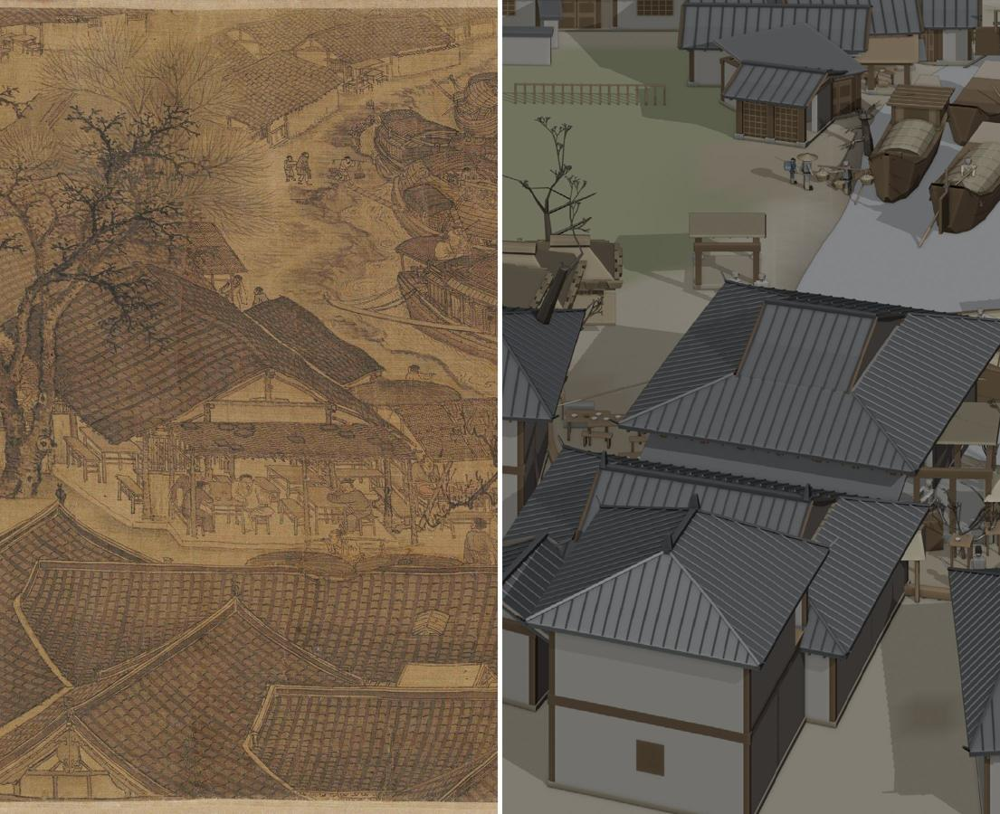
第一轮渲染（修正前）
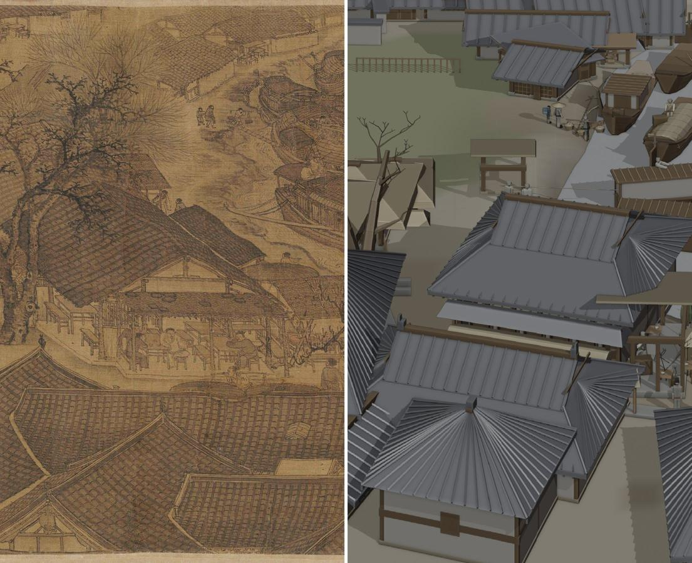
有误与缺失（33）
编号
类型
判定
问题
修正
B0049
boat
有误
Hull and boatman visible at x 850-1100 y 530-690, but the gabled mat cabin top (painted y 440-530) is missing and the lower hull is under the H0087 roof.
Add the tall gabled mat cabin roof up to y 440; clear H0087 off x 870-1100 y 640-760.
H0078
building
有误
Roof still begins at x about 990; painted left hip corner at x 548-600 y 1560-1640; empty street x 690-990 remains.
Extend footprint about 440 px left so the left hip corner lands at (548,1635).
H0080
building
有误
Still a flat beige board roof on posts at x 950-1100 y 880-940; painting shows a sloped woven-mat lean-to (back y 870, front y 1005); left part under H0087.
roof.type = lean_to, slope about 25 deg, mat texture; footprint x 820-1100.
K0024
stall
缺失
Round mat umbrella not visible; x 788-952 y 822-905 is covered by the H0087 hip roof.
Fix H0087 footprint; umbrella radius about 80 px, light mat, on open bank.
F0179
furniture
有误
Not visible; H0081 area shows a dark wall.
Make H0081 an open post shed at its painted place.
F0180
furniture
有误
Not visible at (833,180).
Make H0081 open-sided at its painted place.
H0081
building
有误
An open plank-roofed shed appears at x 855-1005 y 155-245, about 100 px right, on the water edge behind B0052; painted place shows a dark wall.
Move about 100 px left to x 760-870 y 120-200, on the road; keep open posts.
F0181
furniture
缺失
Hall stool hidden under the roofs.
Open the hall (see H0084, extra H0087); stool at (814,1182).
F0182
furniture
有误
Not visible at (804,186).
Make H0081 open-sided at its painted place.
O0155
prop
缺失
Short bamboo pole x 715-905 y 640-705 not built; 3D has instead a 700 px straight line from (900,535) to (190,710).
Pole 190 px from (905,640) to (715,705); shorten the mooring line.
F0183
furniture
有误
Not visible at (775,200).
Make H0081 open-sided at its painted place.
X0137
structure
缺失
Two rounded mat domes at y 1213-1258 not visible; roof mass covers them.
After lowering H0084, add two mat domes at x 555-760 and 790-945.
F0184
furniture
缺失
Hall bench hidden under H0087 roof.
Open the hall; bench at (738,1052).
F0185
furniture
缺失
Hall table hidden under roofs.
Open the hall; table at (720,1140).
H0084
building
有误
Ridge at y about 1060 instead of 1255 (about 195 px high); with H0090 it covers the hall, terrace, awning and customers.
Reduce depth so the ridge lands at y 1255; roof.type = xieshan; no rise above y 1240.
F0186
furniture
缺失
Bench hidden under roofs.
Open the hall; bench at (652,1165).
F0187
furniture
缺失
Table hidden under roofs.
Open the hall; table at (633,1095).
X0138
structure
有误
Flat mat awning not readable; area shows the grey H0087 eave and H0084 roof.
Flat mat awning at y 930-1025 on posts, clear of roofs.
F0188
furniture
缺失
Stool hidden under roofs.
Open the hall; stool at (580,1180).
X0139
structure
有误
Terrace front skirt not visible; roofs cover y 1150-1255.
Show a raised terrace edge at y 1200-1255 after lowering H0084/H0090.
F0189
furniture
缺失
Customers' main table hidden under roofs.
Open the hall; table at (540,1140).
H0089
building
有误
Present at x 420-580 y 470-640 but as a flat board roof on posts; painting shows a sloped mat lean-to.
roof.type = lean_to, high back at y 450, low front at y 600, mat texture.
H0090
building
有误
Built as a tall two-storey white box: apex at (370,1220) vs painted (515,1335); white wall with window at x 100-550 y 1440-1800 where painting shows roofs.
Move 145 px right, 115 px down; storeys = 1; let H0092/H0078 roofs hide the walls.
F0190
furniture
缺失
Stool hidden under roofs.
Open the hall; stool at (449,1180).
F0191
furniture
缺失
Stool hidden under roofs.
Open the hall; stool at (398,1182).
F0192
furniture
缺失
Lattice partition hidden under roofs.
Open the hall; lattice panel at (355,1060).
F0194
furniture
缺失
Front-left terrace table hidden under H0084 roof.
Lower H0084; table at (294,1112).
F0195
furniture
缺失
Bench hidden under H0084 roof.
Lower H0084; bench at (288,1125).
X0140
structure
有误
Only a small grey block at x 135-200 y 885-920; no white parapet wall or railing.
White low wall with short wooden railing at x 115-245 y 862-1005.
H0092
building
有误
Gable end with bargeboards and hanging fish not visible; 3D shows a white wall corner at x 0-100 y 1300-1520 and ground below.
Build a 1-bay gable facing the viewer, apex at (160,1595), eave y 1700.
P0448
person
有误
Hidden under the H0084/H0090 roof mass.
Lower H0084, move H0090 down; open the hall.
P0442
person
有误
Hidden under the H0087 roof eave.
Fix H0087 footprint; open hall.
P0444
person
有误
Hidden under the H0084 roof.
Lower H0084 so the terrace front at y 1170-1230 shows.
人群
far-bank road x 600-820 y 320-430：画中约 4 人，模型 4 人。Hatted man, child and porter with two baskets read well and are within about 20 px of the painted places.
boats x 820-1100 y 150-700：画中约 4 人，模型 3 人。Boatmen on B0051 and B0049 visible; P0438 in B0050 stern not readable.
shed H0089 and bank x 430-620 y 580-700：画中约 3 人，模型 2 人。Two small figures at y about 610 stand on the bank at the H0087 roof top edge, as in the painting; acceptable.
tea house hall x 100-1000 y 950-1230：画中约 8 人，模型 2 人。P0442, P0448, P0450, P0451, P0444 all hidden under the roof mass; only vendor-side figures at about (940,1070) and (1050,1250) show.
模型多出的东西
(680, 800) H0087 (tile27) two-tier closed hip roof x 260-1100 y 610-1000; painted roof is a xieshan with open pediment x 100-880; about 170 px right, right wing over water.
(545, 820) Straight line about 700 px long from B0049 bow (900,535) to (190,710) across the bank; painting has only a short pole and rope.
(190, 210) Long wooden fence x 25-360 y 185-230 on open ground; painting shows pine foliage there.
(130, 600) Beige box building x 0-270 y 470-640 with a thin bare tree, and a gable house with white wall x 0-170 y 640-1250; painting has the huge gnarled tree trunk and canopy.
(840, 1600) Empty street x 690-990 y 1400-1800 where the painting has continuous tiled roofs.
tile27 · 335.7–351.5 cm 2/5
正确 8 · 有误 21 · 缺失 9 · 忽略 5
The street layout reads (crowd top-left, wheelwright yard centre, horse group, ox cart lower-left), but the south-street buildings H0096 and H0101 have roofs far too big and pushed ~200-250 px north. They bury the workshop front, the great-tree base, the oxen and the cart animals. A pale roof from the left building covers the main crowd at x 0-370 y 450-850. The wheelwright yard lacks its defining props (upright cart frame, flat wheel, plank pile). Trees are too short and thin, and thatched huts are tall tan gable blocks.
得分与判定来自第一轮（修正前）；图为修正后的第二轮渲染，第一轮渲染见下。
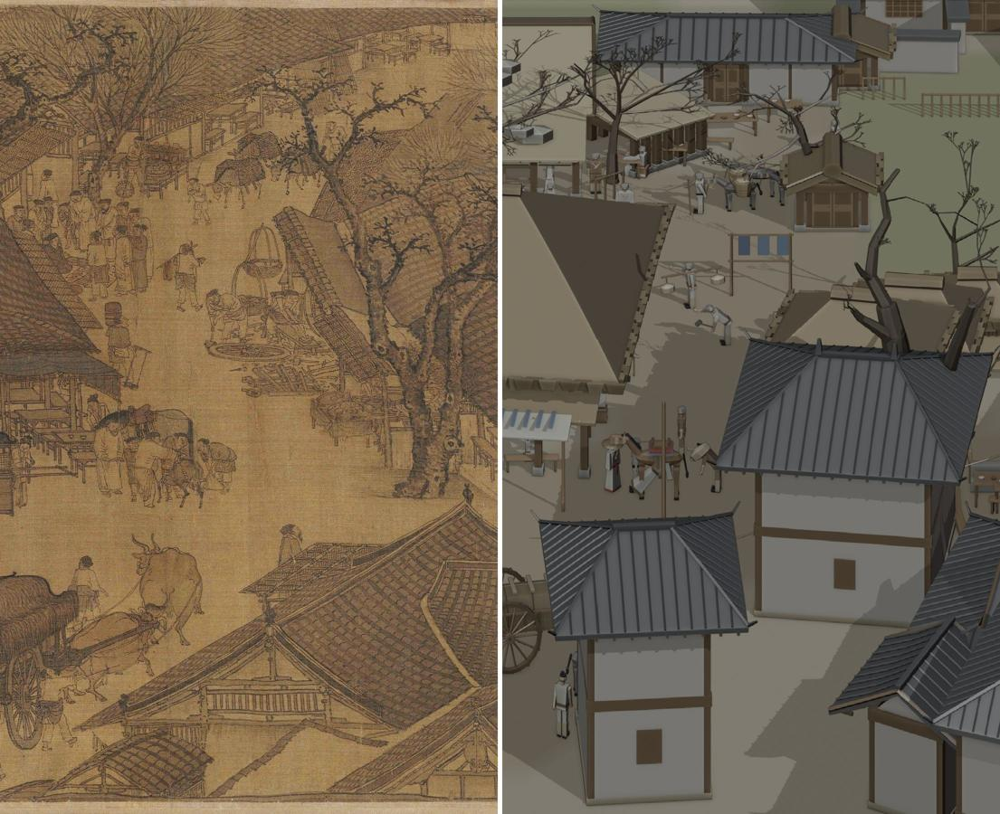
第一轮渲染（修正前）
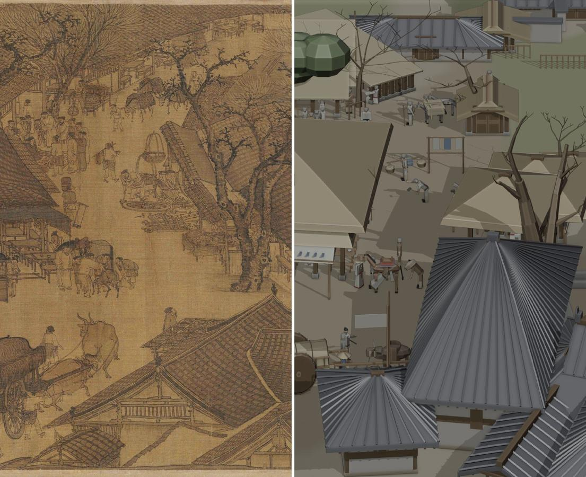
有误与缺失（33）
编号
类型
判定
问题
修正
X0141
structure
有误
Steps at right edge (1040-1100, 955-1005) are invisible, covered by the oversized H0096 roof.
Fix H0096 extent; keep steps descending right from platform.
T0170
tree
有误
Only a small bare tree at right edge y 420-580; painted mass reaches y 180.
Height about 2x; crown top near y 180.
T0171
tree
有误
Two trunks present but thin, crown top ~y 420 vs painted y 150; base hidden by H0096 roof.
Height ~1.6x, trunk diameter 2x, gnarled knots; fix H0096 so base shows.
H0094
building
有误
Plain pale gable roof whose top sits ~100-150 px lower than the large painted thatch behind the tree.
roof.material = thatch; raise/enlarge so roof spans y 430-720.
F0202
furniture
缺失
Courtyard table visible in painting; generic interior hides it.
Place table+stools in open courtyard at (855,135).
H0095
building
有误
Roof is a pale gable extending ~100 px west over the work yard; open front with counter hidden by H0096.
Shrink west edge to x 660; open front with railing; thatched/slanted roof.
F0203
furniture
缺失
Courtyard square table with stools not visible.
Place table+stools in open courtyard at (830,110).
H0096
building
有误
Roof reaches y ~880 vs painted top ~1060; ridge runs toward viewer instead of diagonally along the street.
Move/shrink so roof top at y 1060; rotate ~90° so ridge runs up-right; hip-gable with balustrade gable facing lower-left.
H0097
building
有误
Built as a tall tan gable block (~2x too tall) instead of a low thatched hut with lattice gable.
Table with bowls of reddish goods beside vendor P0465 not visible.
Place table with bowls at (365,362).
X0146
structure
有误
Balcony railing not visible; a wooden railing runs along the H0101 roof top at y ~1230 instead.
Put railing at balcony level under H0101 eave (y 1600-1630).
H0101
building
有误
Hip roof x 80-540 y 1240-1700, ~1.5x too big and ~220 px north; buries oxen A0055, A0056.
Shrink ~40%, move ~220 px south so roof spans x 170-470 y 1470-1640.
T0173
tree
有误
Thin bare tree with sparse crown; painted crown is ~250 px wide with dense fine twigs.
Crown width 2x, add fine twig density.
A0055
animal
有误
Second ox in the cart shafts hidden under the H0101 roof.
Fix H0101 extent.
G0015
sign
缺失
Striped triangular pennant at H0101 eave not built.
Small striped pennant on short pole at eave (218,1660).
K0025
stall
有误
Ground mat hidden under the extra pale roof covering the crowd.
Trim the left building's roof; keep mat at (186,630).
A0056
animal
有误
Small pale animal under cart shaft hidden by H0101 roof.
Fix H0101 extent.
P0461
person
有误
Carries a shoulder pole with two hanging baskets; painting has one bundle hanging behind.
Single bundle on rear end of pole.
P0482
person
有误
Hidden beneath the H0101 roof.
Resolves when H0101 is moved south.
P0457
person
有误
Should show above the H0096 eave; hidden under the roof.
Resolves when H0096 roof is trimmed.
人群
crowd x 20-340 y 370-660：画中约 22 人，模型 8 人。Most of the crowd is hidden under the pale roof that reaches x 370 y 450; only figures near y 380-460 show.
wheelwright yard and donkey path x 380-760 y 250-800：画中约 6 人，模型 5 人。Figures roughly placed; P0456 is under the H0095 roof overhang.
horse group and teahouse x 30-530 y 830-1110：画中约 10 人，模型 6 人。Horse group is readable; the teahouse interior figures are mostly not visible.
ox cart x 90-260 y 1220-1660 and above big roof x 615-670 y 1155-1250：画中约 3 人，模型 1 人。P0482 is hidden by the H0101 roof; P0457 is hidden by the H0096 roof.
workshop interior x 790-990 y 820-930：画中约 3 人，模型 0 人。P0452, P0453 and P0454 are all under the H0096 roof.
模型多出的东西
(180, 650) Pale roof of the left (teahouse) building extends ~100-150 px further east/north than painted, covering the crowd.
(100, 220) Two green leafy globe tree crowns; painting shows bare winter twigs there.
(290, 1205) Floating white rectangular panel and tall pole above H0101, not in painting.
(290, 1230) Wooden railing running along the top of the H0101 roof.
tile28 · 348.6–364.4 cm 2/5
正确 8 · 有误 20 · 缺失 12 · 忽略 4
Layout is recognisable (fortune-teller hut, willow, big restaurant, two freight carts, mule group) but the scene does not read like the painting. The big tiled roof of the lower-left shop (x 0-750, y 1060-1600) is entirely absent, so its fence, furniture and figures stand in open ground, and a grey tiled roof intrudes at the lower right. The restaurant H0104 eave/valance lands ~150 px too low (y 930-1000 vs 770-840), hiding the whole painted interior with its tables and diners. Both carts have smooth white tunnel covers and solid disc wheels instead of shaggy straw-mat covers and spoked wheels, and cart 2 sits ~150 px too high and too small. Trees are off: the willow has green leafy strands and a thin trunk, T0176 is far too sparse.
得分与判定来自第一轮（修正前）；图为修正后的第二轮渲染，第一轮渲染见下。
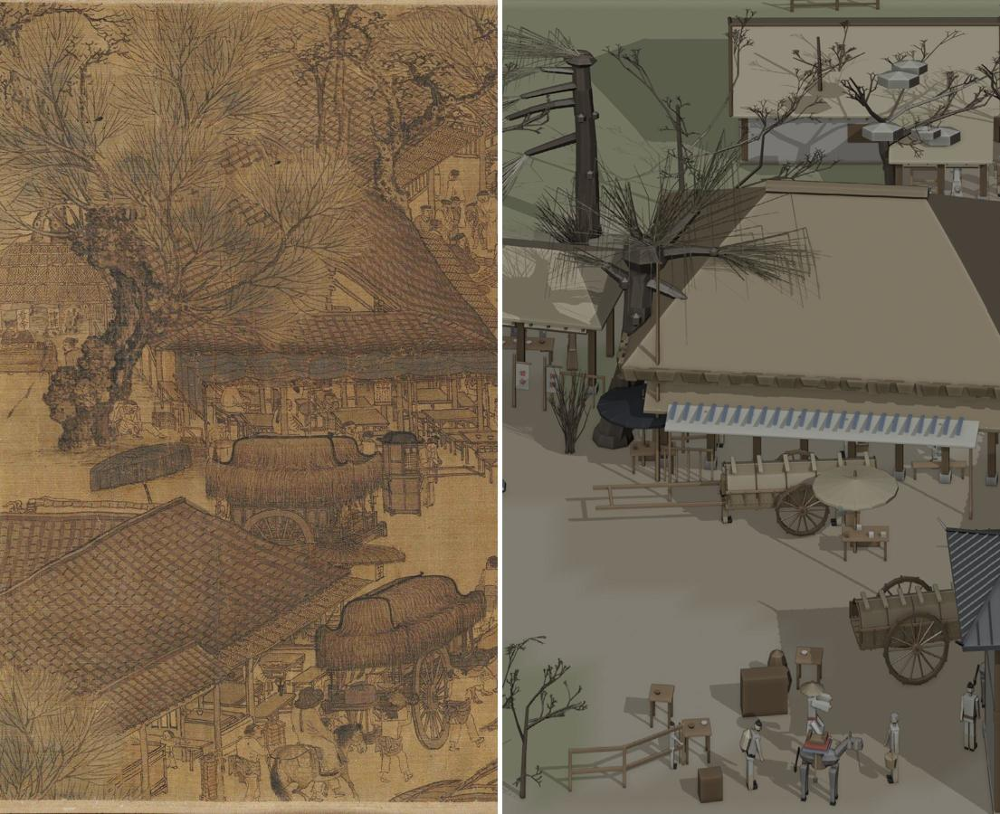
第一轮渲染（修正前）
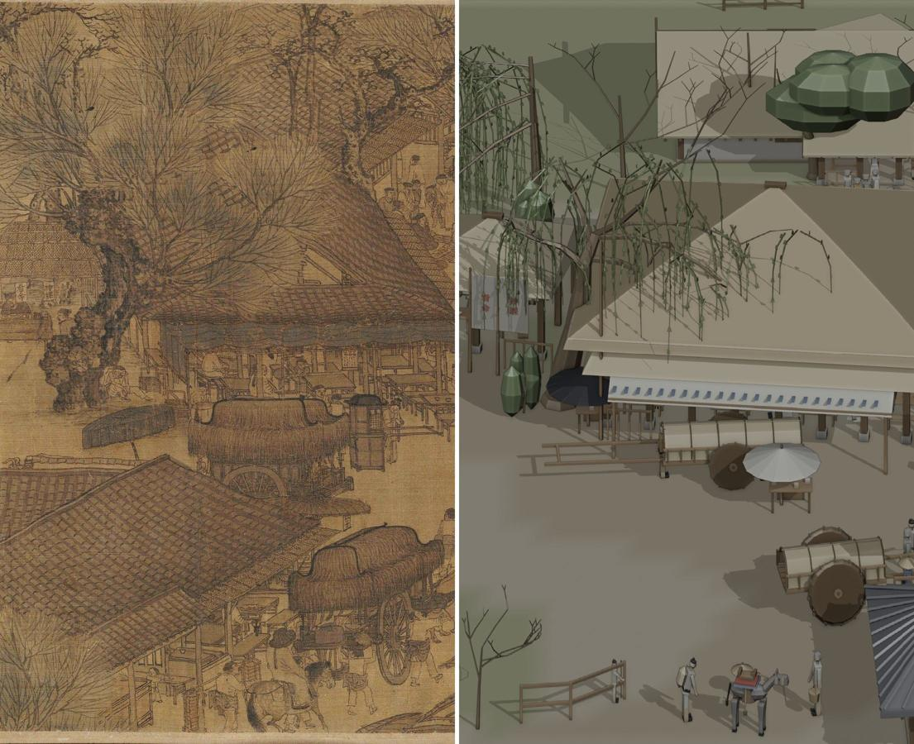
有误与缺失（35）
编号
类型
判定
问题
修正
F0210
furniture
有误
Front table with bowls not visible: hidden behind the too-low restaurant eave.
raise H0104 eave so interior shows; place table at painted base
X0147
structure
缺失
Cross-hatched sloping mat/lean-to at x 925-1100 y 505-665 not built; restaurant roof shows there.
build low lean-to mat roof, 175 px wide, sloping down to viewer
F0211
furniture
有误
Restaurant table hidden behind low eave.
raise H0104 eave; show interior tables
F0212
furniture
有误
Bench hidden behind low eave.
raise H0104 eave; show interior
F0214
furniture
有误
Restaurant table hidden behind low eave.
raise H0104 eave; show interior
T0174
tree
有误
Built as smooth green blob canopy; painting shows gnarled dark trunk with sparse dotted foliage.
use gnarled leafy_tree with open dotted crown, no solid blob, 40% less canopy volume
O0164
prop
缺失
Tall roofed lattice cabinet box at x 848-938 y 962-1132 clearly painted, not built.
Only a few thin sparse branches; painting shows a dense cluster of large trees with fan-shaped needle-like twig crowns.
3 trees, crown density 3x, fan twig clusters filling x 280-700 y 0-470
F0222
furniture
缺失
Lower-left shop not built; lattice box stack absent.
build lower-left shop interior with tiered box stack
F0223
furniture
有误
Restaurant table hidden behind low eave.
raise H0104 eave; show interior
F0225
furniture
缺失
Lower-left shop not built; table absent.
build lower-left shop interior
T0177
tree
有误
Willow has thin trunk and green leafy weeping strands; painting: massive gnarled mottled trunk (x 100-330) with bare dark twigs.
trunk 3x thicker, gnarled; strands bare dark brown, no leaves, 50% fewer
F0226
furniture
缺失
Lower-left shop not built; table absent.
build lower-left shop interior
K0027
stall
有误
Canopy ~100 px too high (y 887-1000 vs 985-1080), covers squatting man P0502; pole vertical, painted slanted.
pole 40% shorter, tilt 20° right-down, move canopy 30 px right
X0151
structure
有误
Bamboo fence appears ~80 px lower (y 820-880 vs 678-748).
move 80 px up toward the hut front
X0152
structure
有误
Balustrade built but stands free on open ground because the shop it fronts is missing.
keep, attach to rebuilt lower-left shop front bays
G0018
sign
有误
Sign is a large white board ~70 px wide vs painted cloth strip 27x52 px.
scale 40%, narrow vertical cloth banner
G0019
sign
有误
Sign is a large white board ~70 px wide vs painted cloth strip 26x52 px.
scale 40%, narrow vertical cloth banner
O0167
prop
缺失
Chiwen ridge ornament absent because lower-left shop roof is absent.
add with rebuilt lower-left shop roof ridge
P0494
person
有误
Rider not readable: only a conical hat over a box on the saddle.
seat full rider figure astride, conical hat on head
P0502
person
有误
Squatting man hidden under K0027 canopy.
lower/shift K0027 canopy
P0496
person
有误
Standing man with raised hand hidden under eave.
raise H0104 eave
人群
restaurant interior x 400-1100 y 840-1010：画中约 10 人，模型 0 人。All diners and staff hidden by the too-low H0104 eave.
upper-right crowd under H0102 x 870-1100 y 330-700：画中约 12 人，模型 5 人。Crowd thin; figures small.
fortune teller x 0-250 y 680-800：画中约 4 人，模型 1 人。Teller and clients mostly absent or hidden by signs.
lower street x 450-1100 y 1100-1780：画中约 10 人，模型 6 人。Groom, porter OK; men around cart 2 and at cart 1 front sparse.
模型多出的东西
(150, 920) Three green crystal-shaped cypress trees; nothing like them in painting (willow trunk base there).
(1040, 1570) Grey tiled roof corner intruding from right edge, ~300 px above the painted roof corner (y~1700).
(730, 10) Wooden fence at the top edge where painting shows tree canopy.
(790, 1200) Table under umbrella K0026.
tile29 · 361.5–377.3 cm 2/5
正确 9 · 有误 12 · 缺失 17 · 忽略 5
Upper half (gate compound, soldiers, big tree, willows, fortune-teller booth) reads as the same scene, though the gatehouse and H0107 roofs are oversized and the booth eave sits ~100 px too low. Lower half fails: the large hip-roof house H0105 with its gabled annex, which fills x 520-1100 y 1090-1700 in the painting, is absent (bare ground), so P0508 stands tilted in empty space instead of leaning over its ridge. The left lower roof (H0110) rises ~180 px too high with a radial hip end. The bottom tree clumps are sparse twigs instead of dense large bare trees. Props (weapon poles, furled banner) are all missing, and the gate door is white instead of red.
得分与判定来自第一轮（修正前）；图为修正后的第二轮渲染，第一轮渲染见下。
第一轮渲染（修正前）
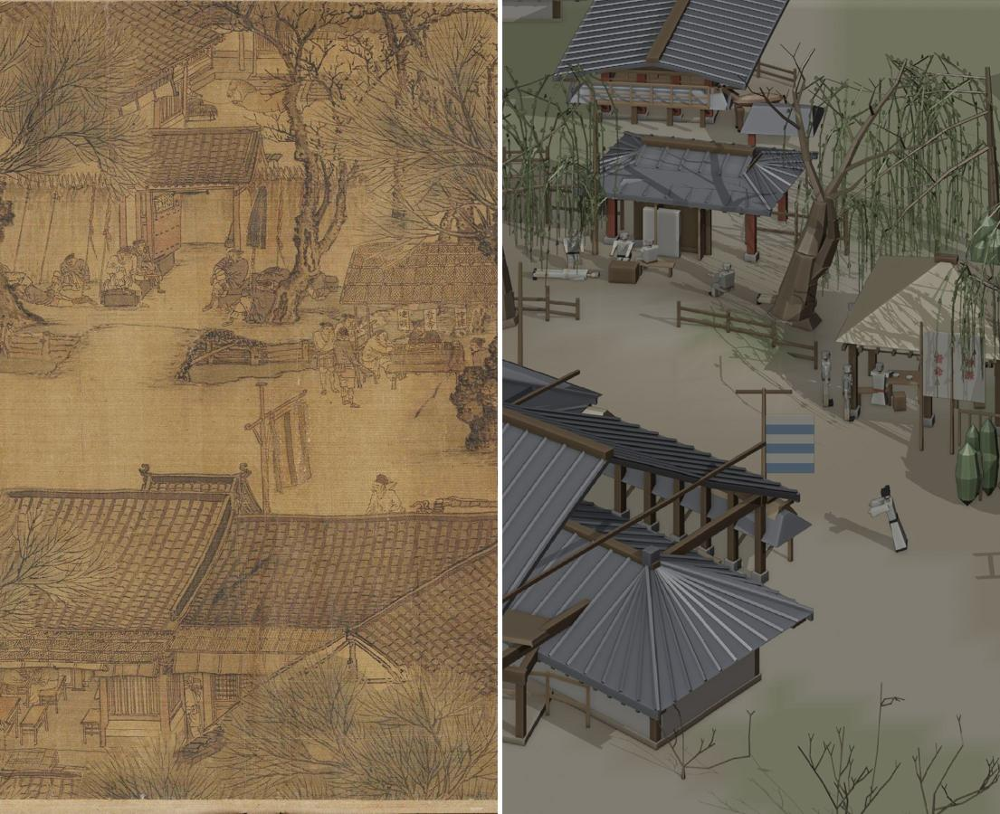
有误与缺失（32）
编号
类型
判定
问题
修正
H0105
building
缺失
No building in lower right; painting shows a large grey-tile hip roof (ridge y~1095, x 520-1100) plus a gable annex at x 600-900 y 1380-1500
Base point is at the tile edge; place the body over x 520-1100, y 1090-1700; hip roof with front gable annex facing viewer (south)
T0179
tree
有误
Built as stacked green cypress cones; painting shows a dark, loose, leafy shrub mass
Use a broad, rounded dark shrub form, width ~110 px, no conical lobes
G0020
sign
缺失
Small 決疑 paper sign on the booth eave not built; the 3D booth instead has two oversized cloth panels (看命/神課) hanging to y~900
Add a small paper sign 24x45 px at x 892 y 683-728; shrink the booth signs to ~45 px tall under the eave
T0182
tree
有误
Only a few thin twigs; painting has a dense clump of large bare trees filling x 560-1100 y 1480-1800
Build 4-6 bare trees, 2x denser crowns, height ~300 px, in front of H0105
O0168
prop
缺失
悬鱼 pendant under the annex gable missing (whole H0105 missing)
Add a small pendant under the annex gable apex when H0105 is built
O0169
prop
缺失
Dark hatched mass right of the tree trunk not present
Add a dark low shrub or bundle pile ~65x70 px at base (709,668)
G0021
sign
有误
Banner present but blue/white stripes on a rigid rectangle; painting has ochre/brown vertical stripes, soft cloth
Colour = ochre/brown vertical stripes; hang from angled cross-arm; slight cloth sag
O0171
prop
缺失
Pole with hanging cord beside the furled banner not built
Add a thin vertical pole, height ~230 px, with a cord loop at the top, at x 615
X0153
structure
有误
Flagpole has a horizontal T cross-arm; painting has an angled cross-arm (~40°) and a disc finial
Tilt the cross-arm ~40° up to the right; add a disc finial at the top
A0059
animal
有误
Horse reads as a tan/brown blob partly under a small grey shed roof; painting horse is white/grey, head lowered left, clearly visible
Colour = white-grey; remove the shed roof covering it; head lowered toward -x
O0172
prop
缺失
Tall dark furled banner/umbrella right of the gatehouse missing; visually prominent
Build a dark furled cloth cone on a pole, ~45x280 px, base (566,700)
X0154
structure
有误
Ground is flat; painting shows a dark mound of brushwood inside the rail fence
Raise the heightfield ~15 px there and add a dark brushwood texture/shrub mass over x 390-612
T0184
tree
有误
Sparse thin twigs; painting shows a full bare twiggy tree between the lower buildings
Denser twig crown, height ~1.5x
O0173
prop
缺失
Round straw bundle on the yard railing not built
Add a flat straw disc ~70 px wide on the railing at (455,272)
H0107
building
有误
Gable end points at the viewer and the roof spans x 110-600 from y 0; painting shows the long eave side running diagonally
Rotate 90° so the eave side faces the viewer; reduce width ~25%
H0108
building
有误
Gatehouse roof too large: x 210-640 y 290-460 vs painting x 300-560 y 280-390; flared hip overshoots
Scale the roof ~65% in width, eave 70 px higher; keep the hip-gable form
X0156
structure
有误
Door leaves are plain white slabs; painting shows a red studded leaf swung open
Colour = red with studs; one leaf opened ~70°
X0159
structure
有误
No tall pointed-stake palisade visible; only low rails and willow strands at left
Build a palisade of pointed stakes ~70 px high along y 370-420, x 0-700, gap at the gate
F0232
furniture
有误
Chest present but about 55 px too far north (y~620 vs 682)
Move 55 px south (down in the tile)
F0233
furniture
缺失
Latticed partition at the hall doorway not visible; the 3D hall front is a closed wall
Open the H0110 front; add a lattice screen ~110x140 px at x 220-330
O0174
prop
缺失
Leaning weapon pole with cord loop missing
Add a thin pole ~300 px tall leaning on the palisade at x 235
F0234
furniture
缺失
Small table near the front post not visible; the hall is closed
Show the generic interior through an open front
O0175
prop
缺失
Leaning pole with rope loop missing
Add a thin pole ~300 px tall at x 198
F0235
furniture
缺失
Square table in the open hall visible in the painting, absent in 3D
Open the hall front; place the table at (118,1565)
O0176
prop
缺失
Leaning pole missing
Add a thin pole ~275 px tall at x 102
T0185
tree
缺失
Bare tree in front of the left roof not visible; hidden under the oversized H0110 roof
Lower the H0110 roof so the tree shows; tree height ~200 px
F0236
furniture
缺失
Long foreground bench of the hall not visible
Place at (78,1632) inside the open hall front
F0237
furniture
缺失
Low table on the lower shed floor not visible
Place at (55,1718)
O0177
prop
缺失
Long spear shaft leaning on the palisade missing
Add a thin pole ~310 px tall at x 42
P0508
person
有误
Leaning figure stands tilted in empty space; it should lean over the H0105 ridge, waist-up
Place behind the H0105 ridge at ridge height once H0105 is built
P0519
person
有误
Built standing; painting shows him seated on the ground, knees up, head sunk
pose = sit_ground, head forward
P0514
person
有误
Barely visible at the tree foot; should sit slumped against the trunk, head on knees
pose = sit_ground against the trunk at (566,690)
人群
gate yard x 0-650 y 530-700：画中约 7 人，模型 6 人。Group sits ~40-50 px too far north; P0519 (dozing, seated) appears to stand; all figures white-grey, so the dark soldier clothing is lost
fortune-teller booth x 690-1100 y 670-890：画中约 10 人，模型 5 人。Back-of-booth figures (P0503, P0505, P0509, P0511) are not visible, hidden by the too-low booth eave; the onlookers stand as upright stick figures without folded-hands poses
H0105 ridge x 818-898 y 1048-1132：画中约 1 人，模型 1 人。P0508 stands tilted on bare ground because H0105 is missing
lower hall interior x 0-450 y 1470-1620：画中约 2 人，模型 0 人。P0516 and P0520 are hidden by the closed hall front
模型多出的东西
(600, 270) Small grey hip-roof shed over the horse yard, not in the painting
(1000, 820) Two large cloth sign panels (看命/神課) hanging to y~900 at the booth front; the painting has small paper signs at the eave only
(300, 900) Upper part of the H0110 roof, eave at y~860; the painting roof starts at y~1040
tile30 · 374.4–390.2 cm 2/5
正确 7 · 有误 22 · 缺失 4 · 忽略 4
The upper half (willow row, sedans, porters on the road) reads roughly as the painted scene, but the lower half is unrecognisable: restaurant H0110 is built as a giant grey roof rotated about 40 degrees that rises from y~1800 up onto the road at y~800 and buries the yard, tables, shed H0109, pavilion H0113, the bare tree T0189 and the umbrella stall edge. Sedans sit about 110 px too far north on the ground behind their bearers instead of hanging on the poles. The ox cart group is shifted about 220 px left and 130 px down. Willows are generic weeping willows with no pollarded knobby heads, and the painted fine-branched canopy over the top half is reduced to sparse green strands.
得分与判定来自第一轮（修正前）；图为修正后的第二轮渲染，第一轮渲染见下。
第一轮渲染（修正前）
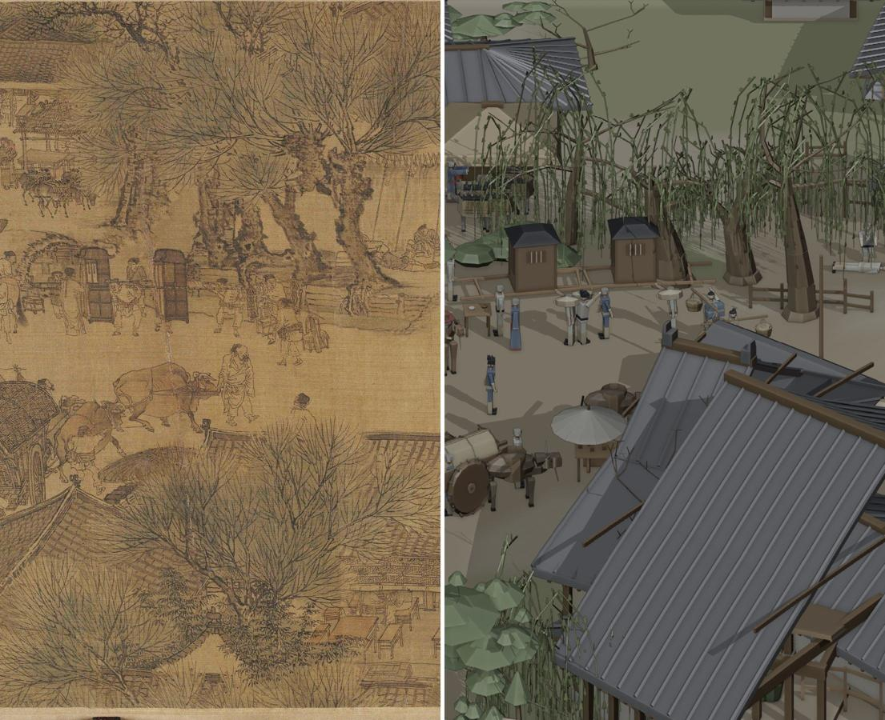
有误与缺失（28）
编号
类型
判定
问题
修正
H0110
building
有误
Built as a huge roof rotated ~40 deg, rising from bottom edge to y~800 over the road; hides whole south yard.
rotate to run parallel to road (ridge horizontal); eave_y 1390-ridge_y 1085 is plan depth seen from behind, not height; height 60% lower
H0109
building
有误
Low plank lean-to shed at bottom right is buried under the H0110 roof; only posts visible.
keep as low 2-bay lean-to; fixes itself once H0110 is rotated and lowered
H0113
building
有误
Pyramid roof with finial not visible; covered by H0110 roof slope.
after H0110 fix check pyramid roof with baoding finial at x 380-615, y 1515-1665
H0114
building
有误
Roof ridge behind bottom-left willow not visible; area shows only low-poly leafy blobs and H0110 slope.
after H0110 fix verify tiled ridge at x 250-395, y 1655-1725
X0165
structure
缺失
Small dark tiled roof piece south of the road not built; 3D shows bare ground.
build small tiled roof corner/shed at (300,1262), 0.8 m wide
S0004
sedan
有误
Sedan stands on ground ~110 px too far north and ~60 px right, behind bearers; boxy hut roof instead of domed.
move 110 px down to base y 810, hang on poles at y~710 between bearers; domed roof with up-turned corners
S0003
sedan
有误
Same: sits on ground ~110 px north of painted base, not on the poles; hut-like roof.
move 110 px down to base y 806, lift onto poles between P0527 and P0529; domed roof
A0060
animal
有误
Lead ox shifted ~220 px left and ~130 px down (built near x 70-240, y 1060-1220), clipped by cart.
move 220 px right, 130 px up to base (415,1082); facing right is correct
K0029
stall
有误
Umbrella stall ~60 px left and ~110 px up of painted canopy; also a table under it not in painting.
move to centre (360,1160); flatter, wider mat canopy radius 1.2 m; remove table
F0242
furniture
有误
Stool at front end of porters' poles hidden/overlapped by H0110 roof edge.
will show once H0110 fixed; check at (664,842)
F0238
furniture
有误
Bench under awning buried under H0110 roof; a wrong-size plank shelf floats there.
after H0110 fix, low bench 0.9 m at (916,1540)
F0239
furniture
有误
Large yard table hidden under H0110 roof.
after H0110 fix verify table at (885,1632)
F0240
furniture
有误
Small yard table hidden under H0110 roof.
after H0110 fix verify at (830,1555)
F0241
furniture
有误
Table hidden under H0110 roof.
after H0110 fix verify at (804,1602)
T0186
tree
有误
Generic weeping willow; painted tree is pollarded with knobby head at y 340-480 and spreading fine shoots.
willow.form = pollarded: thick short trunk, knobby head, upright fine shoots
T0188
tree
有误
Same: weeping form instead of pollarded knobby head; trunk ~50 px left of painted lean.
willow.form = pollarded; move trunk 50 px right, lean right
T0191
tree
有误
Gnarled hollow dark trunk rendered as smooth cone trunk.
darker, thicker gnarled trunk; pollarded head
T0194
tree
有误
Large willow in upper left is sparse strands; painted crown is dense drooping branches filling x 150-560.
Large bare tree over south roofs barely visible; only a few twigs poke through H0110 roof.
after H0110 fix: trunk x 560-620, wide fine canopy x 300-1100 above roofs
T0190
tree
有误
Bamboo clump at bottom centre hidden under H0110 roof.
after H0110 fix verify dense bamboo at (660,1720)
T0192
tree
有误
Small bamboo cluster hidden by H0110 roof.
after H0110 fix verify at (462,1570)
T0195
tree
有误
Bottom-left willow built as low-poly leafy blobs, not drooping strands.
subtype willow: use drooping-strand willow, not leafy blob crown
T0187
tree
有误
Bamboo shrub left of yard hidden by H0110 roof.
after H0110 fix verify at (828,1770)
O0178
prop
缺失
Hooped frame with round basket at rear of porter's pole not built.
add hooped basket hanging from P0524 pole rear at (790,882)
O0179
prop
缺失
Tall dark wrapped bundle on P0525 pole front not built; 3D shows round baskets instead.
replace basket with tall dark wrapped bundle 0.8 m on pole front
O0180
prop
缺失
Tall dark bundle at rear of P0525 pole not built; round basket instead.
replace basket with tall dark wrapped bundle 0.8 m
P0522
person
有误
Seated figure inside the H0110 roof volume, invisible.
resolves with H0110 rotation/height fix
P0526
person
有误
Ox driver not found next to ox head at (592,1062).
place at painted base, walking right holding nose rope
人群
road, sedan group x 180-640 y 600-860：画中约 9 人，模型 8 人。Bearers stand in a cluster below the sedans rather than under the pole ends; poles lie on ground; one conical-hat figure with arms raised has no counterpart.
road right, porters x 620-800 y 680-910：画中约 2 人，模型 2 人。Porters present with poles; loads are round baskets instead of tall dark bundles; partly covered by H0110 roof edge.
road, ox driver and walker x 540-800 y 850-1120：画中约 2 人，模型 1 人。Bearded driver P0526 not visible near ox head; P0523 hidden by roof. A lone figure stands at x~100 y~900.
north yard x 900-1100 y 500-680：画中约 3 人，模型 2 人。Reclining/seated figures by the willows; one built lying flat on ground at x~1000 y 650, plausible.
south yard x 800-1000 y 1470-1600：画中约 2 人，模型 0 人。Seated figures P0522 etc. buried under H0110 roof.
模型多出的东西
(700, 1200) Giant rotated grey roof slab (H0110) covering x 200-1100, y 800-1800
(320, 1030) Table under umbrella stall, not in painting
(100, 880) Standing man in blue on empty road, no painted counterpart there
(700, 330) Large empty flat grey-green area at top where painting shows dense willow canopy
tile31 · 387.3–403.1 cm 3/5
正确 24 · 有误 16 · 缺失 3 · 忽略 9
The layout still matches well: the gate hall and shop at the top, the pine grove, the two umbrella stalls, the horses, the ox team and the right cart are all near their painted places. The pines are now see-through branch-and-needle-fan trees, so the porter, the pig herd and the fence show again. The worst problem is unchanged: the huge tiled hip roof H0116 (x440-1100 y1185-1800) is still absent, so the lower-right third of the tile is open ground. The right cart V0007 is still a low ribbed box ending at y~1080 instead of a tall arched woven canopy down to y~1290. Oxen and pigs are now horizontal but lens/saucer-shaped bodies on stick legs, the big basket F0249 is still a small barrel, and the shop roof H0117 still extends ~170 px too far left.
第二轮复核（修正生成器与布局后，第一轮得分 2/5）：Improved: pines are now sparse branch-and-needle-fan trees, so porter P0543, the pig herd, fence X0167 and the donkeys show; shop roof H0117 is a plain hip with parallel tile rows and correct eave height; shed H0115 is in place; extra bamboo cluster mostly gone. Still wrong: H0116 big roof missing, cart V0007 low box, oxen/pigs saucer bodies, F0249 tiny, K0032 black, X0166/O0188 missing, H0117 too long on the left, awning flat and too far north.
第一轮渲染（修正前）
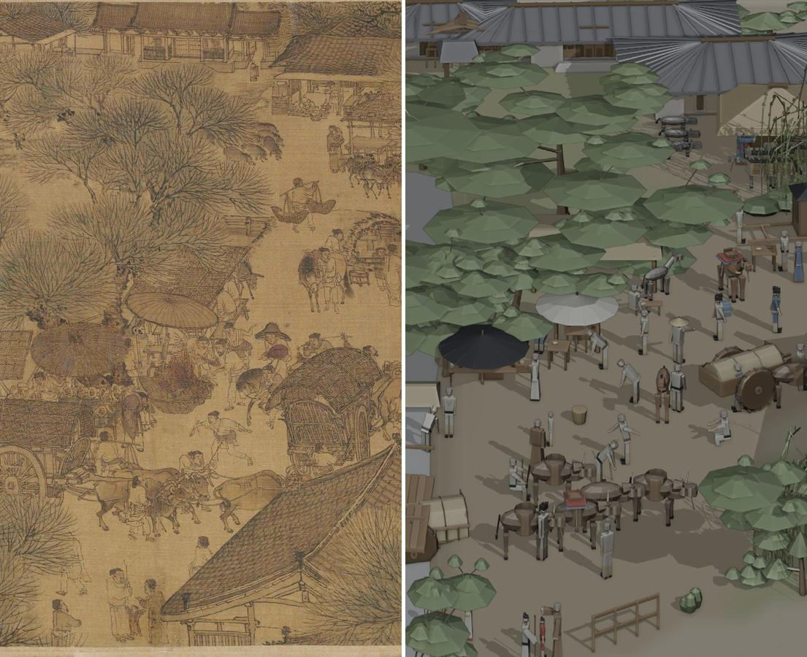
有误与缺失（21）
编号
类型
判定
问题
修正
X0166
structure
缺失
Round arch with brushy rim at right edge is still not built; only a table and a figure there.
Build a round arched gateway ~145 px wide, base (1028,705), dark leafy rim.
H0116
building
缺失
Huge grey tiled hip roof over x440-1100 y1185-1800 still absent; area is bare ground with a fence and a shrub.
Place north eave at y~1185 (base is clipped tile edge); hip roof, corner ridge near (700,1530), eaves over railing X0169.
H0117
building
有误
Now a plain hip roof with parallel tile rows and eave at y~215 (good), but it starts at x~570 instead of 745.
Trim the left end ~170 px so the roof spans x745-1100.
V0007
vehicle
有误
Still a low ribbed box with a big wheel, long axis along x, y~930-1080; painting has a tall arched woven canopy seen from rear-left reaching y~1290.
Rotate ~60° so the rear faces lower-left; canopy height x2, arched woven mat; extend rear panel/tailboard to y~1290.
F0247
furniture
有误
Shop's left bay is closed by a plain white block (x~685-760 y~255-330), not plank shelving.
Replace white block with stacked horizontal brown planks; keep within x745-792.
A0066
animal
有误
Pig visible now, but body is a grey flattened octagonal lens on stick legs with a box head.
Pig body: low rounded barrel, short legs, snout; dark grey-black; scale 0.7.
A0067
animal
有误
Pig is a grey lens/saucer on stilts, ~30% too big.
Low rounded pig body; scale 0.7.
A0068
animal
有误
Same saucer-on-legs pig, oversized.
Low rounded pig body; scale 0.7.
A0070
animal
有误
Pig visible but saucer-shaped body on stick legs.
Low rounded pig body; scale 0.7.
A0072
animal
有误
Lead ox at the right place but body is a horizontal octagonal lens on stick legs, not a barrel ox from the rear.
Ox body: deep rounded barrel, hump, curled tail; thicker legs; seen from rear.
A0073
animal
有误
Pig visible at the herd's tail but saucer-shaped body.
Low rounded pig body; scale 0.7.
A0074
animal
有误
Ox is a lens-on-legs body with a red box (yoke/load?) on top.
Proper ox body; make the red box a thin yoke or remove it.
X0170
structure
有误
Awning is a flat beige plane at x~310-660 y~590-715, ~120 px too far north and level; painting slopes down to y~848.
Tilt the mat awning toward the street, low edge at y~848; move 120 px south; woven-mat texture.
F0249
furniture
有误
Huge heaped basket (195 px wide) is still a plain barrel ~45 px wide at (478,1080).
Scale x4; wide shallow round woven basket with a reddish-brown spiky heap.
A0075
animal
有误
Middle ox has the same lens-on-legs body; head turn toward viewer not readable.
Proper ox body, head turned toward the viewer.
A0076
animal
有误
Ox is a lens-on-legs body; painting shows only a long back and horned head behind the shaft ox.
Proper ox body, partly hidden behind the shaft ox.
Rows of round flat rosette goods along the stall front still absent; ground is empty.
Build stacks of small round discs on a low table, x15-335 y1040-1180.
P0536
person
有误
Woman holds arms out, the carried child P0535 is not visible.
pose hold_child with P0535 attached at her shoulder.
P0541
person
有误
Squats ~110 px north of his base (882,1290), in open road, because V0007 is too short.
Keep base at (882,1290) under the extended cart tailboard.
人群
upper street and shop front, x600-1100 y150-650：画中约 6 人，模型 5 人。Porter P0543 with pole and two baskets now visible and correct. Woman P0536 stands with arms out and no visible child P0535. Shopkeeper's steelyard not readable.
awning and umbrella stalls, x0-700 y650-1250：画中约 18 人，模型 16 人。Positions match well; conical hat on P0544 correct. Grey block figures make the bending/reaching toward the basket weak, and the basket itself is tiny.
road with horses, cart and oxen, x250-1100 y850-1480：画中约 12 人，模型 12 人。Good match. Squatting man P0541 sits ~110 px north of his base on open ground because the cart is too short.
lower left talkers, x280-600 y1460-1780：画中约 5 人，模型 4 人。Elder with staff, red child and brown-robed man correct. P0551 not readable; he should stand at the edge of the missing big roof.
模型多出的东西
(390, 140) Plain white block in front of the gate hall's left lattice bay.
(720, 290) Plain white block closing the shop's left end (probably generic interior), too big and too bright.
(150, 130) Small grey gable kiosk with posts in front of the gate hall's left end.
(60, 900) Pale grey flat slab/wall along the left edge x0-130 y450-1200, where the painting has pine and stall.
(90, 1330) Left covered cart (neighbour tile) drawn ~150 px south of its painted place (body y1050-1300).
(1060, 300) Thin bamboo-like stalks at the right edge over the shed.
tile32 · 400.3–416.0 cm 2/5
正确 12 · 有误 12 · 缺失 3 · 忽略 8
The far bank (houses, road travellers, pines) and the far bridge rail are roughly in place, but the main subject, the crowded flat bridge, is broken. The 3D deck ends at y~1290 instead of ~1560 and has no near rail, so about a dozen figures and three donkeys stand in the water below it. The deck also runs on to x~1000 through where the big covered cart should be, and the cart is built about 1/3 size at the far right. The foreground needle tree T0207 is a bare twig tree, and an extra small pine clump fills the bottom-right corner. The far-bank roofs merge into one flat grey slab with no ridges.
得分与判定来自第一轮（修正前）；图为修正后的第二轮渲染，第一轮渲染见下。
第一轮渲染（修正前）
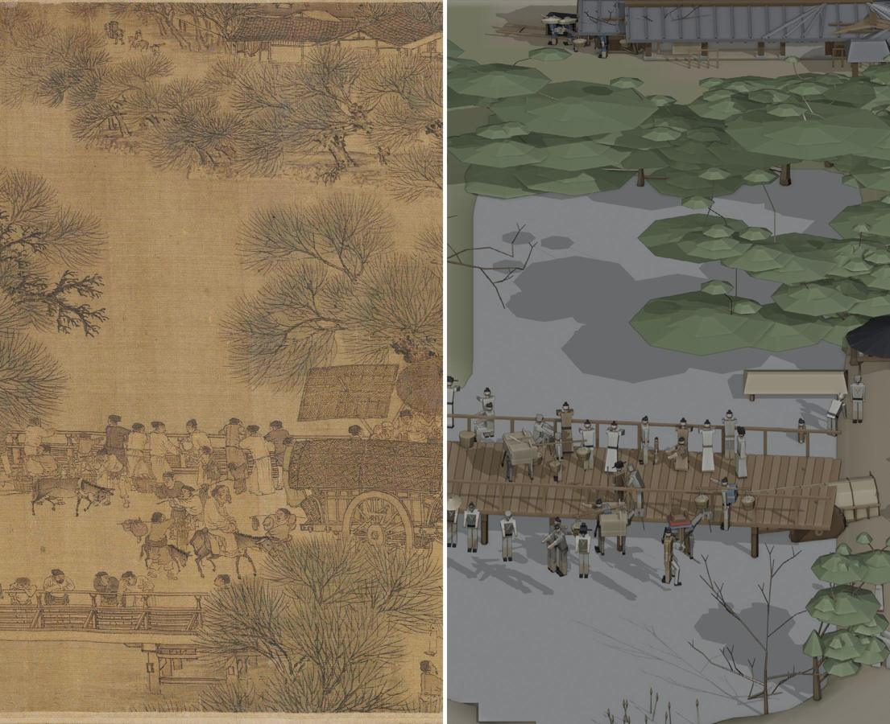
有误与缺失（20）
编号
类型
判定
问题
修正
H0119
building
有误
Built as a dark grey hip-roof box. The painting shows a light roof with its gable end facing the viewer.
roof.type = gable, ridge perpendicular to the scroll, light roof material
O0190
prop
缺失
Large brown ribbed umbrella over the bridgehead stall at 985-1100, y 880-1030 is absent. The dark parasol at y~800 is too high.
Build a 115 px wide brown umbrella on a pole, base (1042,1060)
H0120
building
有误
Merged with H0121/H0122 into one long, almost flat grey roof slab. It has no ridge and no tile slope down to the eave at y~115.
Separate the roofs. roof.pitch about 30 deg, hip-gable, visible ridge, tile texture
V0008
vehicle
有误
The cart is about 1/3 size (about 130 px wide vs 385) and sits at x 970-1100. The bridge deck occupies its place.
Scale the cart about 2.5x and centre it at x~908. Wheel about 150 px in diameter, arched mat cover, deck must end at x~720
X0171
structure
有误
Built as a horizontal flat beige board. The painting shows a woven mat steeply tilted (about 45 deg) toward the viewer on a pole.
Tilt the mat about 45 deg toward the viewer, woven texture, keep base (865,1045)
H0121
building
有误
There is no separate rear gable roof. It is merged into the flat slab.
Build as its own roof behind H0122, gable ridge visible, cut by the tile top
T0207
tree
有误
Built as a sparse bare twig tree. The painting shows a dense foreground needle tree whose sprays cover the lower right.
tree.type = pine with full needle crown spreading over x 490-1100, y 1290-1800
A0078
animal
有误
The elder's donkey is a boxy figure standing in the water below the short deck (deck edge y~1290, base 1448).
Extend the deck to y~1560 so the donkey is on the deck. Dark donkey colour, proper body shape
H0123
building
有误
Built as a full building with a large grey roof at x 450-560. The painting shows only a light low wall/fence seen through trunks.
Build as a light plastered wall or fence about 40 px high, no roof
X0173
structure
缺失
Timber pier/abutment framing under the bridge's right end (beams y~1600-1690) is absent. Only water shows there.
Build pier framing: 3 horizontal beams and posts at x 300-650 under the deck end
A0079
animal
有误
The small grey donkey is a beige box standing partly in the water off the deck front edge.
Grey donkey model. Place it on the deck after extending the deck to y~1560
X0175
structure
有误
Status says NOT BUILT, yet a deck exists. It is only about 230 px deep (front edge y~1290 vs 1560) and runs on past x=720 to about 1000, over the cart.
Build the deck from y 1070 to 1560, end at x~720, flat level planks, abutment at the right end
X0176
structure
缺失
The near bridge rail (top bar y~1470, posts x 100/230/360/490) is absent. The people leaning on it stand in water.
Build the near rail along the extended deck edge, x 0-515, y 1465-1562
A0081
animal
有误
Built as a beige box animal about 90 px too far back (base about 1195 vs 1285), wrong colour.
Move about 90 px toward the viewer, dark grey donkey with the head lowered
F0254
furniture
有误
The round basket sits at y~1100, about 120 px behind its painted base 1228.
Move 120 px toward the viewer (down in the tile)
P0594
person
有误
The near-rail leaner stands in the water, with no rail.
Place on the extended deck behind the near rail at y~1505
P0597
person
有误
Leaning far over the near rail in the painting, but stands upright in the water in 3D.
Pose lean_rail on the new near rail
P0574
person
有误
The elder riding the donkey is rendered as a box stack in the water.
Seat him on A0078 on the extended deck
P0582
person
有误
The young man with the pole stands in the water off the deck.
Move onto the deck with the deck fix
P0595
person
有误
The seated man at the foot of the far rail appears standing.
pose = sit
人群
far rail crowd x 0-760 y 1035-1270：画中约 20 人，模型 18 人。Count and rail line are close. Figures are stiff upright T-poses rather than leaning over the rail. Most face the viewer instead of having their backs turned.
mid deck, donkeys and porters x 250-750 y 1200-1450：画中约 8 人，模型 8 人。All stand below the 3D deck front edge (y~1290), in the water.
near rail x 0-560 y 1410-1505：画中约 8 人，模型 6 人。There is no near rail and no deck there, so the leaning figures stand in the water at y~1300-1440.
far bank road x 250-420 y 50-145：画中约 6 人，模型 6 人。Figures are about 2x too large for the far bank. They tower against the building wall.
bridgehead stall/cart and bottom right x 850-1100 y 1040-1780：画中约 4 人，模型 3 人。P0563 and P0564 are hidden by the extra pine clump. P0567 is behind the undersized cart.
模型多出的东西
(1000, 1600) Clump of small cone pines at the bottom right corner (x 900-1100, y 1450-1750), not in the painting.
(200, 70) Long ladder/pole frame on the far-bank road left of the sedan.
(130, 650) Bare twig branches over the water at x 60-200, y 550-750, where the painting has a dark pine spray.
(1070, 820) Dark grey parasol at y~800, above the painted umbrella position.
(880, 1200) Bridge deck planks continuing to x~1000, where the painting has the covered cart.
tile33 · 413.2–429.0 cm 2/5
正确 2 · 有误 10 · 缺失 3 · 忽略 2
Poor match. The painting shows a tree-shaded road with a covered cart, a horse with a rider and a flat trestle bridge in the foreground. The 3D shows a raised plank deck at y 1130-1450 that covers the cart, water (grey) over land on the right half and the lower part, and a large tiled-roof building and a dark block that are far too prominent. The foreground bridge X0179 is not built, so its leaning men stand in the water. The trees are sparse straight-branched skeletons or tiered green discs, not dense twig and willow crowns.
得分与判定来自第一轮（修正前）；图为修正后的第二轮渲染，第一轮渲染见下。
第一轮渲染（修正前）
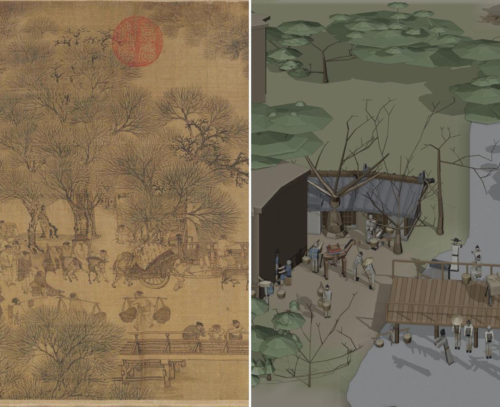
有误与缺失（17）
编号
类型
判定
问题
修正
T0212
tree
有误
Trunk is near the right place (~835,990), but the crown is a few straight bare sticks; the painting has a leaning gnarled trunk with dense dark twig clusters. It stands at the edge of false water.
Use the gnarled bare_tree variant: lean the trunk ~15° right, crown 2x denser, spread x 740-1100.
X0177
structure
有误
A railing is at y~1130, x 600-1100, but it is the back rail of the extra raised deck, not a ground-level railing behind the cart.
Keep as a free-standing plank railing at ground level along y 1030-1182 once the deck is removed or moved.
X0178
structure
缺失
Tall tapered timber post with a box cap and an A-frame foot at x 802-854, y 964-1130 is not built.
Build a slender post ~5 m high, 0.25 m section, box cap, small A-frame base at (828,1130).
X0179
structure
缺失
The flat trestle bridge at y 1465-1720 is not built; a similar plank deck appears ~300 px higher (y 1130-1450) over the road instead.
Build a flat trestle bridge spanning x 528-1100 at base y~1590 with a plank railing and capped posts; delete the deck over the road.
V0009
vehicle
有误
The covered cart is not visible: it is hidden under or inside the extra raised deck at x 555-860, y 1073-1285.
Remove the deck over the road; check the cart at ground level, wheel on the near side, arched mat cover, facing left.
T0214
tree
有误
Central willow is a thick trunk with about 6 straight bare branches that pierce the building roof; the painting shows a dense fan-shaped crown of fine twigs over y 380-1100.
Use the willow variant with a dense fine-twig fan crown, about 2x the branch count; keep the trunk clear of the H0124 roof.
T0215
tree
缺失
The small bush at the water's edge (595,1772) is not visible; the area is plain grey water.
Put the shrub on bank terrain at (595,1772), ~1 m high, radiating strokes.
H0124
building
有误
Built as a large building with a grey tiled roof spanning x ~200-740, y 720-1000 that dominates the scene; the painting shows only an eave corner and posts behind the willow.
Shrink to a small 2-bay shed, eave ~60% lower, set back behind T0214 so the trees hide most of it.
T0216
tree
有误
Trunk is at about the right x (~372), but the crown is sparse straight branches cutting through the roof; the painting has a gnarled trunk and a dense radiating crown.
Use the gnarled willow variant with a denser crown; keep branches clear of the building roof.
H0125
building
有误
Merged into the same oversized tiled-roof building as H0124; the painting shows a light gate-like post-and-lintel structure behind the trunk.
Build a separate open post-and-lintel frame ~3 m high at (374,1012), no big roof.
A0082
animal
有误
The horse is a squat brown box body with an empty red saddle stack; no rider is seated on it and the head and neck are not readable.
Use the horse asset with a proper neck and head facing right, ~1.5 m at the withers; seat P0608 on the saddle.
T0217
tree
有误
Built as a forked tree with tiered green disc foliage; the painting shows a bare, crooked dark twig crown above the willows.
subtype bare_tree: no foliage discs, crooked short branches with dark twig tips.
T0218
tree
有误
Foreground crown is a single thin trunk with ~8 straight sticks; the painting has a dense, low, wide crown of fine twigs over x 0-565. Green conical trees sit beside it.
Use a low dense twig crown ~3x the branch count, spread 560 px wide, trunk short; remove the conifers.
P0608
person
有误
The rider is not seated on the horse; the saddle is empty.
Parent the rider to the A0082 saddle with the ride pose.
P0600
person
有误
Tilted lean pose with nothing to lean on; the figure stands in water.
Place on the X0179 bridge deck behind the near railing.
P0602
person
有误
Porter stands in water under the deck, about 40 px below his base.
Snap to road ground at (628,1456).
P0599
person
有误
Stands upright on water facing the viewer; the painting shows him with his back turned, bending over the railing.
Rotate 180°, lean pose against X0177, ground on road.
人群
left road x 0-500 y 950-1300 (groups around the horse)：画中约 16 人，模型 6 人。Too few figures. The rider is not on the horse. The figures that are present are scattered next to the dark extra block.
cart x 480-870 y 1100-1290：画中约 3 人，模型 2 人。The carters have no cart: it is hidden under the deck. A bent figure with a broad hat stands at ~(530,1170), possibly the rider built standing.
middle road x 0-700 y 1280-1460 (pole porters)：画中约 3 人，模型 2 人。Porters with poles and baskets are present, but P0602 stands in water under the deck at ~(606,1470).
bridge railing x 780-1100 y 1420-1600：画中约 3 人，模型 4 人。The leaning men stand upright in water below the extra deck, because X0179 is not built.
far railing x 860-1100 y 1050-1200：画中约 3 人，模型 3 人。Present, but they stand on grey water and not on the road.
模型多出的东西
(810, 1290) Large raised plank deck with railing and posts over the road, x 590-1100, y 1130-1450 (probably the bridge misplaced ~300 px up).
(130, 950) Tall dark-walled block x 0-250, y 700-1250 where the painting has a crowd on open road.
(30, 230) Dark box building at the top-left edge, x 0-60, y 40-430, inside the treeline.
(900, 800) Grey water surface over land, x 720-1100, y 500-1100, and over the lower area y 1450-1800.
(90, 1500) Green conical or tiered evergreen trees, x 0-200, y 1290-1700; the painting has only bare twigs.
tile34 · 426.1–441.9 cm 2/5
正确 2 · 有误 7 · 缺失 10 · 忽略 3
Poor match. The painting shows the city-gate tower: a hip-roofed timber hall with bracket sets and a balustraded balcony on a battered rammed-earth platform, a gate passage with a camel coming out, a crowd of men on the right, and pines and bare trees in front. The 3D shows plain grey boxes instead. The tower is a flat-topped box with no hip roof or eaves, and its dark side face runs up to x≈900, covering the pine area at the top right. The platform has vertical sides and a flat slab top, with no battered face and no passage opening. The camel, horse and rider cannot be seen, and most of the crowd is missing. The foreground trees roughly match, but the pines are flat umbrella discs.
得分与判定来自第一轮（修正前）；图为修正后的第二轮渲染，第一轮渲染见下。
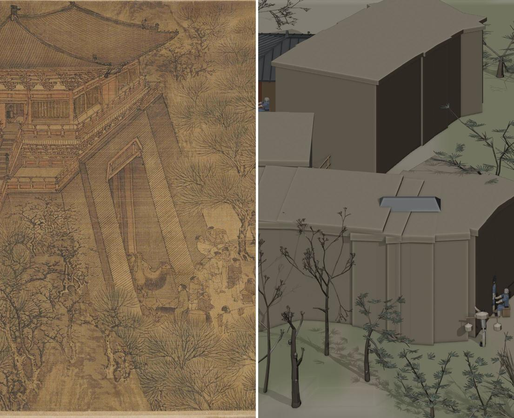
第一轮渲染（修正前）
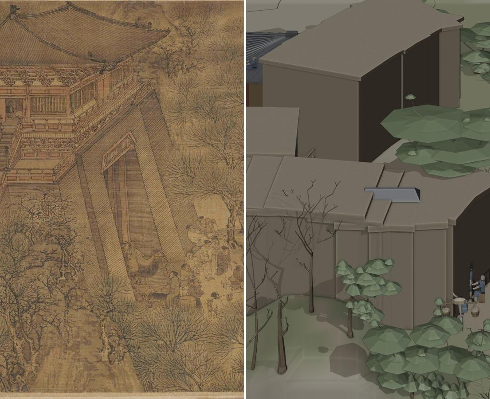
有误与缺失（20）
编号
类型
判定
问题
修正
T0219
tree
缺失
Dark trunk at the right edge (x≈1082, y 880-1065) cannot be seen in 3D; hidden by the platform box or not rendered.
Check that it is placed at base (1082,1065) outside the platform footprint; a thin dark trunk about 185 px tall.
T0220
tree
有误
Foreground pine crowns are drawn as stacked flat umbrella discs; the painted pines have dense radiating needle tufts and dark gnarled trunks.
Pine crown: smaller, irregular needle clusters; make the trunk visible and twisted.
T0221
tree
缺失
Pines at the top right (x 760-1100, y 0-320) are hidden behind the oversized tower box face and roof.
Shrink the tower box so the pines show; the tower's right edge should stop near x≈600.
T0222
tree
有误
Large pine: only flat disc canopies at y 450-750 can be seen; the trunk at x≈920 rising behind the group is missing (hidden by the wall).
Move the trunk in front of the platform's right edge; give it a tall gnarled trunk with layered needle tufts, not discs.
T0223
tree
缺失
Tree with dotted foliage at (810,360) is covered by the dark side face of the tower box.
Fix the tower footprint and position; then check that the tree shows right of the roof corner.
A0083
animal
缺失
The dark saddle horse at (792,1395) cannot be seen; only the platform wall and a porter are there.
Check placement: it must stand outside the wall face, y≈1395; it may be buried in the platform box.
T0224
tree
有误
Bottom-foreground pine crowns are present but drawn as flat umbrella discs, too uniform.
Use the pine form with needle clusters and less regular crowns.
T0225
tree
缺失
Ink-wash tree mass behind the roof corner is covered by the tower roof slab.
Fix the tower roof extent; place a low soft tree mass at (690,210) behind the roof.
O0199
prop
缺失
Ridge-end figures on the up-turned far roof corner; the 3D roof has no hip and no up-turned corners.
After the hip roof is built, add small ridge-beast figures at the corner hip ends.
A0084
animal
缺失
Camel walking out of the gate passage cannot be seen; the passage is not open, so the camel is probably inside the solid box.
Open the gate passage; place the camel at (658,1338) facing right, with its head out of the passage mouth.
X0181
structure
有误
There is no gate passage opening; the solid platform wall has only a small blue-grey lintel slab at about (520-750, 820-870).
Cut a tall arched-top trapezoidal passage, x 460-750, y 590-1335, with timber posts lining the inside.
G0022
sign
缺失
Framed board over the gate opening is not built.
Add a slanted framed board over the passage top at x 458-618, y 588-782, with blank hatched panels.
X0182
structure
有误
The gate platform is a vertical-sided box with a flat slab top; the painting shows a strongly battered (sloping) brick or earth face with hatching and a corner ridge.
Build the platform with walls battered about 15°, the top narrower than the base; the tower and balcony sit on the top.
X0183
structure
缺失
The balcony balustrade (勾栏) around the tower's platform deck cannot be seen; the 3D has no balcony deck at all.
Add a pingzuo (平坐) deck ring with a timber balustrade on the front and right side at y≈350-700.
X0184
structure
有误
The foreground earth bank is flat ground; the painted bank rises toward the platform foot.
Raise the heightfield along x 150-640, y 1340-1765 with a slope up toward the wall.
T0227
tree
有误
The bare tree is present but drawn as thin, sparse straight branches; the painted tree is a massive gnarled trunk with dense dotted twig clusters.
Thicker, twisted trunk with denser twig clusters; crown spread x 60-440.
O0202
prop
缺失
Chiwen at the main ridge end is not built; the tower has no ridge.
After the hip roof is built, add a chiwen at the ridge end at about (67,92).
P0621
person
有误
The rider cannot be seen; its mount is missing too.
Place the rider on A0083 outside the wall at base (784,1390).
P0612
person
有误
Two figures appear stacked vertically at x≈1040, y 1150-1290, one standing on top of the other.
Check the base heights; put both on the road surface.
P0622
person
有误
The seated figure in the tower doorway is hidden inside the solid box.
Model the hall's open doorway, or drop the figure.
人群
group right of the gate, x 810-1100, y 960-1400：画中约 11 人，模型 4 人。Only about 4 figures can be seen: a porter with a pole and baskets, two stacked figures, and a seated man. The white-robed man, the bent men and the staff-holder are missing or hidden behind the wall.
tower doorway, x 0-100, y 440-520：画中约 1 人，模型 0 人。The seated figure P0622 cannot be seen; the tower is a solid box with no doorway.
模型多出的东西
(700, 400) The oversized dark side face of the tower box, x 490-900, y 100-700, covers the area where the painting shows only pines.
(635, 845) A blue-grey horizontal slab (lintel or awning) on the platform face, not in the painting.
(30, 150) A grey ribbed roof (partly hidden) behind the tower at the top left; probably from a neighbouring building, with a mismatched position.
tile35 · 439.0–454.8 cm 2/5
正确 17 · 有误 16 · 缺失 4 · 忽略 5
The layout of the lower left (tax office, camel train, gate booth, awning) roughly matches the painting, but the right half does not read as the same scene. The city-wall platform is a featureless solid block. It rises sheer from y~480 to y~1400, swallowing the terrace, railings, side ramps and the right end of the tax office. The gate tower is reduced to a small hip roof at x 860-1100 with no balcony, bracket storey or upper stair. The long ramp stair is a narrow vertical grey strip instead of a wide diagonal flight with balustrades. Trees are sparse bare stick skeletons or green willows, while the painting shows dense needle-tufted crowns.
得分与判定来自第一轮（修正前）；图为修正后的第二轮渲染，第一轮渲染见下。
第一轮渲染（修正前）
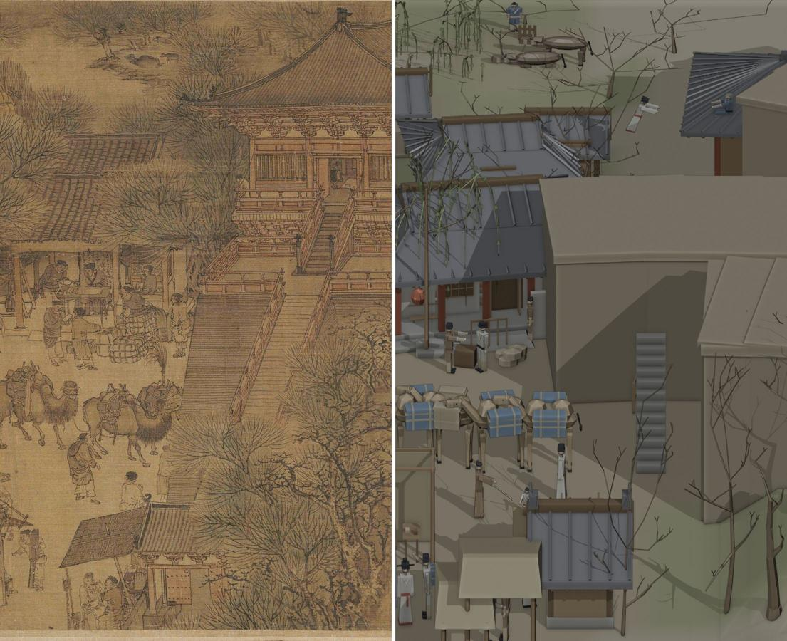
有误与缺失（22）
编号
类型
判定
问题
修正
H0126
building
有误
Only a small hip roof at x 860-1100 y 140-470 shows; painted roof spans x 500-1100, ridge y~20; no balcony, brackets, lattice front
Scale tower ~1.8x wider and taller; build 2 storeys with bracket tier, balcony railing, upturned hip-gable roof; raise onto the platform top
T0228
tree
有误
Not visible; hidden behind the tower/platform block at the top-right edge
Check placement behind the tower; raise it so the crown shows above the tower roof at x 1030-1100 y 150-250
T0230
tree
有误
Sparse bare twigs; painting shows a dense needle-tufted crown filling x 940-1100 y 850-1400
Use dense pine-like crown, crown volume x3
X0185
structure
有误
Built as a separate tan gable-roofed box (x 920-1100 y 700-1400) instead of a brick wall face
Replace with a sloping brick-coursed platform face continuous with X0187, no roof
X0186
structure
缺失
Upper stair from the tower balcony to the terrace is not visible; it is lost inside the solid platform block
Build a stair with railings and newel posts from y 555 to 765 at x 815-995 on the terrace
T0231
tree
有误
Thin bare skeleton; painted tree is a large dense crown covering the wall face
Dense pine-like crown, about 3x the branch mass, crown x 760-1010 y 850-1500
X0187
structure
有误
Solid sheer block x 400-1100 y 480-1400; no terrace, no railings; it covers the office's right end and T0235
Terrace top at y 555-760 with railings; front face sloping to street at y~1000; pull the left edge to x 560
X0188
structure
有误
Narrow vertical grey stair at x 650-720 y 900-1280; painted stair is wide and diagonal, from upper right to lower left, with balustrades
Width x2.5, run diagonally from (780,760) to (650,1255), add both balustrades
X0189
structure
缺失
Brick ramp slopes flanking the stair are absent; a flat vertical wall face stands there instead
Build sloped brick ramps (马道) on both sides of X0188, descending from the terrace to street level
T0233
tree
有误
Large tree at the ramp foot is barely visible: a thin trunk only; the painting shows a big fine-twig crown x 560-780 y 990-1800
Crown volume x3, dense twig/needle crown, height to reach y~1000
T0235
tree
有误
Hidden inside the solid platform block
Fix X0187 extent so the tree stands in front of the terrace railing at (580,760)
A0085
animal
有误
Calf not recognisable; the field shows flat disc-like objects near (450,110)
Check animal model scale and placement at (476,175); small light ox walking left
T0237
tree
缺失
Round bushy tree above the tax office roof is not visible; only the roof and the platform block show
Place a round bushy bare tree behind the office roof, crown x 280-560 y 440-700
F0257
furniture
有误
Pile is a few low small bundles at x 420-500; painted pile is ~9 tall stacked bales at x 290-460
Lying buffalo not readable; flat oval discs appear at (330-500, 90-180) instead of a dark lying animal
Verify the buffalo asset: dark body lying, head left; remove or rescale the discs
F0259
furniture
有误
Box is about 2x too big (≈60 px vs 29 px painted), brown crate dominates the front
Scale 50%
T0239
tree
有误
Rendered as a green-leaf drooping willow; painting shows a bare tree cluster behind the house roof
Swap to the bare_tree model, no foliage
X0191
structure
有误
Built as a closed gable tent box; painted awning is a single flat reed mat tilted down to the left on one pole
Build as one flat mat plane tilted ~25° down to the left, supported by a slanted pole
F0258
furniture
缺失
Office is built closed (wall, window, door), so the ledger table is not seen; painting shows an open hall with the table
Open the office front (columns only), place a long table with ledgers at (238,905)
T0241
tree
有误
Willow with green leaves; trunk runs as a pole in front of the office down to y~940
Swap to bare_tree; move the base north behind the office roof so the trunk is hidden
P0623
person
有误
Probably the horizontal white figure floating at (780,270), not on a balcony
Stand upright on the tower balcony at (674,550), leaning on the rail
P0630
person
有误
Seems to sit on the gatehouse roof corner, not on the ground
Snap to street ground at (370,1425), check collision with H0127
人群
tax office x 0-560 y 700-1020：画中约 9 人，模型 4 人。Seated clerks and official hidden inside the closed office; only the front standing men are visible
camel train x 0-560 y 1020-1430：画中约 4 人，模型 4 人。Counts match; child P0630 appears to sit on the gatehouse roof corner near (370,1395)
awning/booth x 0-560 y 1430-1800：画中约 6 人，模型 3 人。P0632/P0634 hidden under the boxy awning; P0629 not visible
tower/field x 300-1100 y 0-560：画中约 3 人，模型 4 人。A white figure lies floating in the air at (780,270); another sits on the tower roof at (930,300)
模型多出的东西
(1000, 1050) Tan gable-roofed box building where the brick wall face and trees should be (from X0185)
(420, 130) Two flat oval disc objects in the field (millstones or mis-scaled animals)
(930, 300) Figure sitting on the gate tower roof
(90, 700) Tall brown pole (T0241 trunk) standing in front of the office
tile36 · 451.9–467.7 cm 2/5
正确 21 · 有误 12 · 缺失 11 · 忽略 7
The middle band (cask shed H0132, casks, big willow, tax office H0130, loaded cart V0011 and its animal team) sits in roughly the right places and reads as the same scene. The foreground roof complex (H0133) rises to about y 1130 instead of about y 1380, so it hides the whole near-street row: the rider and horse A0096, the covered carts V0010/V0012, the porters, and the stele G0024. Upper-right content is wrong: the jar pyramids O0213/O0211 are missing, the annex H0131 is an open shed about twice too wide, and T0244 is a green blob instead of a bare twig tree. The huanmen X0197 has poles running down into the street through the animals, and the hip-roof corners render as broken radial fans of slats.
得分与判定来自第一轮（修正前）；图为修正后的第二轮渲染，第一轮渲染见下。
第一轮渲染（修正前）
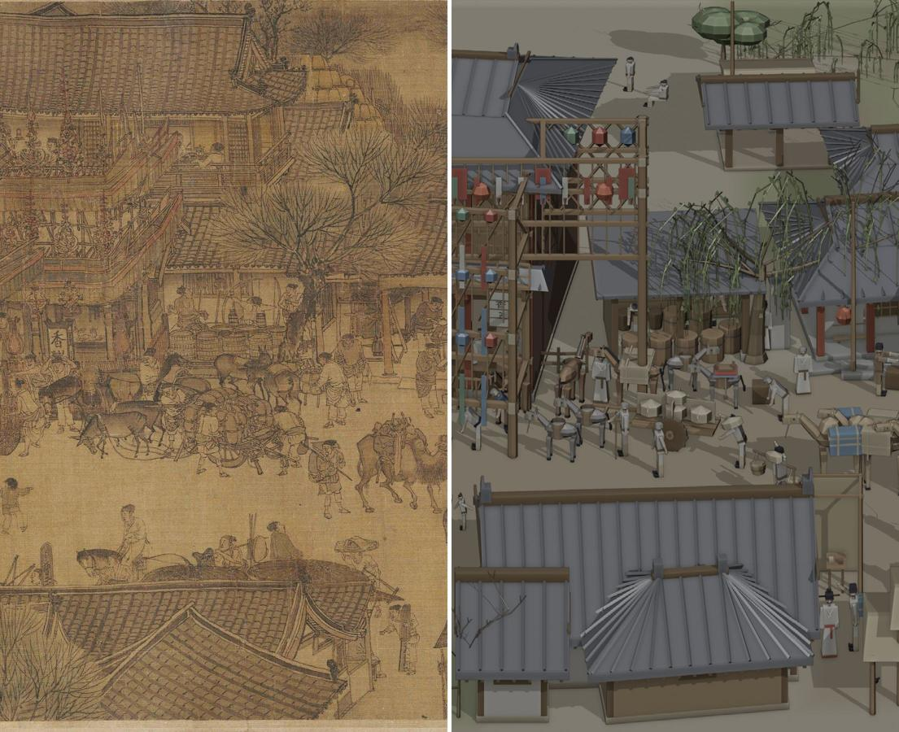
有误与缺失（27）
编号
类型
判定
问题
修正
H0130
building
有误
Position and red posts OK, but the roof shows a steep gable triangle to the viewer; painting shows the long tiled eave facing the street.
rotate the roof so the eave faces the street (south); roof.type = hip or xieshan; lower the pitch
O0210
prop
缺失
No cage lantern at (927,850); the only lantern is the building's generic red one at about (960,765).
add a small cage lantern hanging under the eave at base (927,878); remove or move the generic one
O0211
prop
缺失
Second jar stack not built; the 3D shows bare ground there.
build a stack of round wine jars, 2 tiers, about 75 px wide, at (908,330)
X0196
structure
缺失
Wooden frame with two cross-bars in the tax-office doorway is absent.
add a simple 2-crossbar wooden rack, about 48x116 px, at (852,842)
T0243
tree
有误
Trunk position OK, but it is a thin cone with green drooping strands; painting shows a thick gnarled trunk and a bare, leafless spreading crown.
trunk diameter x2, dark bark; make the crown leafless with bare spreading branches
O0213
prop
缺失
The big three-tier pyramid of wine jars behind the annex is absent; it is a prominent shape in the painting.
build a stacked-jar pyramid, 3 tiers, about 145x200 px, base (808,325), behind H0131
H0131
building
有误
Built as an open post shed spanning x 600-1000 (about 2x too wide) with exposed posts; painting shows a small tile roof with a ridge ornament.
width about 180 px centred at x 779; closed small tiled annex; add ridge-end ornament
O0214
prop
有误
The porter P0644 carries buckets on his pole in 3D, not a large sack.
replace the bucket load with one large hanging sack at (774,1150)
V0010
vehicle
有误
Not visible: it is completely hidden under the oversized H0133 roof; painting shows a dark mat cover with a seated man above the roofline.
fix H0133 height/depth so the cart top shows at y 1365-1434
T0244
tree
有误
Rendered as green lumpy blobs on a pole; painting shows a small bare tree with branching twigs.
use a bare twig deciduous tree, about 120 px wide, at (690,155)
O0216
prop
缺失
The large bent bamboo hoop arcs are absent; they define the cooper scene.
add 2-3 thin bamboo arcs, about 150 px span, held by P0649 at (622,740)
O0217
prop
缺失
Bundle of upright poles above the foreground roof is absent (also hidden by the roof).
add 4-5 upright poles, about 130 px tall, at (620,1388), after fixing H0133
H0133
building
有误
Roof complex reaches y 1130, about 250 px above the painted top (about 1380), and hides the near street. The diagonal-ridge gable with flying eaves is drawn as a flat slope plus a broken fan corner.
reduce depth/height so the roof top is at y 1380-1480; gable ridge diagonal; upturned eave corners; fix the corner mesh
V0012
vehicle
有误
Hidden under the oversized H0133 roof; painting shows a long dark arched mat cover above the roofline.
fix H0133 so the cover shows at y 1372-1434
F0269
furniture
缺失
Upper-floor table with a drinker is absent: the wine-house upper floor does not exist at this spot.
model the wine-house upper-floor balcony so the table sits at about (480,394)
A0096
animal
有误
Ridden horse with its rider is hidden under the H0133 roof; in the painting it is prominent above the roofline.
fix H0133 height; keep the horse at base (332,1436)
O0220
prop
缺失
Large red vase-shaped object at the wine-house front is absent.
add a tall red vase/jar about 46x74 px at (317,882); same for its pair on the left
X0197
structure
有误
Lattice gateway present, but its poles run down to y 1080 among the animals, and it has generic gem ornaments instead of flower knots.
end the poles at about y 725-900 at the shop front; replace the gems with flower festoons
O0224
prop
缺失
Swirled flower festoon knot at the lower scaffold centre is absent; only gem shapes are there.
add a large swirled festoon knot at (164,580) on X0197
A0099
animal
有误
Dark horse at (150,1030) is not readable: it is hidden behind huanmen poles that come down too far.
shorten the X0197 poles; check that the horse is visible with its head lowered
G0023
sign
有误
A 香 board shows at about (150,760), hanging on the scaffold about 100 px above its painted base; painting shows a framed standing sign at the door.
build as a standing framed signboard, about 64x118 px, base (144,902)
G0024
sign
缺失
Tall pointed-top stele is absent (and would be hidden by the roof).
add a stone stele about 37x112 px with a pointed top at (116,1442)
O0228
prop
缺失
Raised barrow shafts behind the foreground roof are absent.
add two pairs of slanted shafts, about 80 px, at (53,1442)
P0651
person
有误
Seated drinker sits on bare ground behind the wine house at about (480,240), not on the upper floor.
place on the upper-floor balcony at the table F0269, base (522,420)
P0654
person
有误
Stands on the ground at about (440,215), outside any building.
place on the upper-floor front at (440,375)
P0644
person
有误
Carries buckets on the pole instead of a large sack.
load = sack
P0657
person
有误
Rider hidden inside or under the foreground roof.
fix through the H0133 height correction
人群
north street and cask yard x 0-1100 y 700-1270：画中约 22 人，模型 16 人。Positions roughly right; generic grey figures. Several are hidden behind the huanmen poles. Porter P0644 has buckets instead of a sack.
wine-house upper floor x 100-560 y 320-420：画中约 4 人，模型 2 人。No upper floor: P0651 and P0654 stand or sit on bare ground at about y 140-245 behind the roof; P0662 is not seen.
near street above foreground roof x 0-1000 y 1230-1440：画中约 8 人，模型 1 人。The rider, servant, porters, seated man and wide-hat man are all hidden under the too-tall H0133 roof.
under the foreground eave x 880-1100 y 1450-1680：画中约 1 人，模型 2 人。P0640 present, plus an extra official in white with a red sash; their bases are at about y 1590, not 1668.
模型多出的东西
(990, 600) Tall vertical pole from y about 300 to 900 in front of the tax office; not in the painting
(140, 1000) Huanmen scaffold posts reaching down to the street among the animals
(466, 1000) Huanmen right post standing in the middle of the cart team down to y 1080
(450, 200) Bare ground with figures where the painting shows the wine-house upper roof and balcony
(560, 1250) Rear slope of the foreground roof covering the near street y 1130-1380
(960, 1520) Extra official figure in white with a red sash beside P0640
tile37 · 464.8–480.6 cm 2/5
正确 2 · 有误 28 · 缺失 17 · 忽略 11
The 孫羊正店 front still reads only loosely. The huanmen is still a uniform full-height pole grid (now with generic red lanterns and white banner strips) from y~120 down to the street at y~1100, so there is no crest of spires or flower tower and the crowd stands inside scaffolding. The H0137 main eave is at y~400 instead of 265, so the upper gallery stays hidden. Both sedans are still 120-180 px north of their painted bases, with their bearers standing apart from them. In the south foreground, H0139 is still a big rotated tall-walled house covering the umbrella stall, and H0138/H0135/H0136 are tall white boxes instead of the low roofs seen in the painting.
第二轮复核（修正生成器与布局后，第一轮得分 2/5）：Improved: bucket loads are gone; the radial-fan roofs are fixed; X0205 fence and the 正店/孫 boards are now at about the right place; T0247 and T0245 are visible. Still wrong: huanmen grid, H0137 eave, sedan offset, rotated H0139, tiny baskets, all crest spires and lanterns.
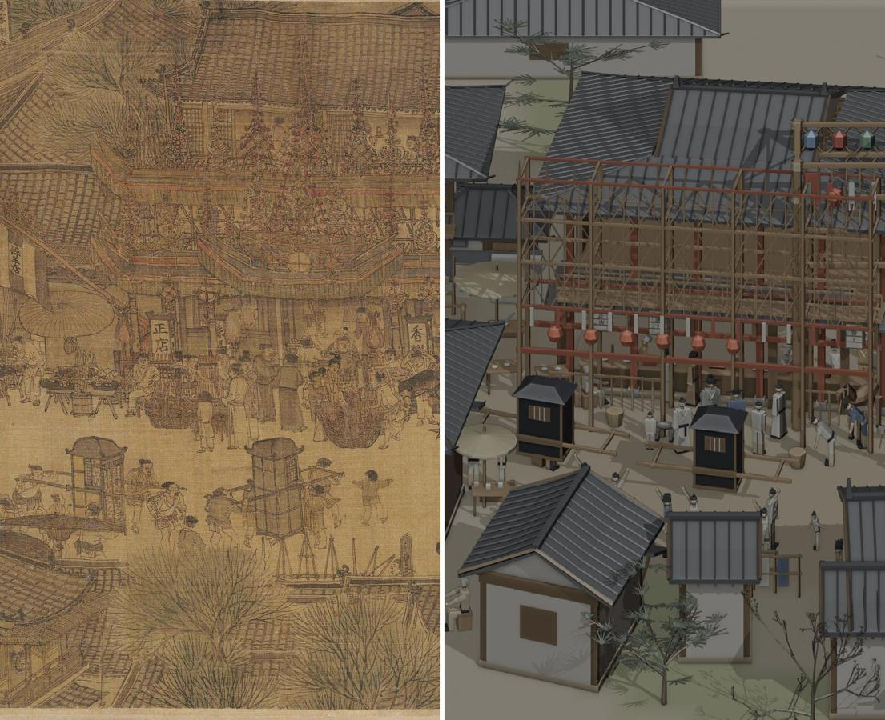
第一轮渲染（修正前）
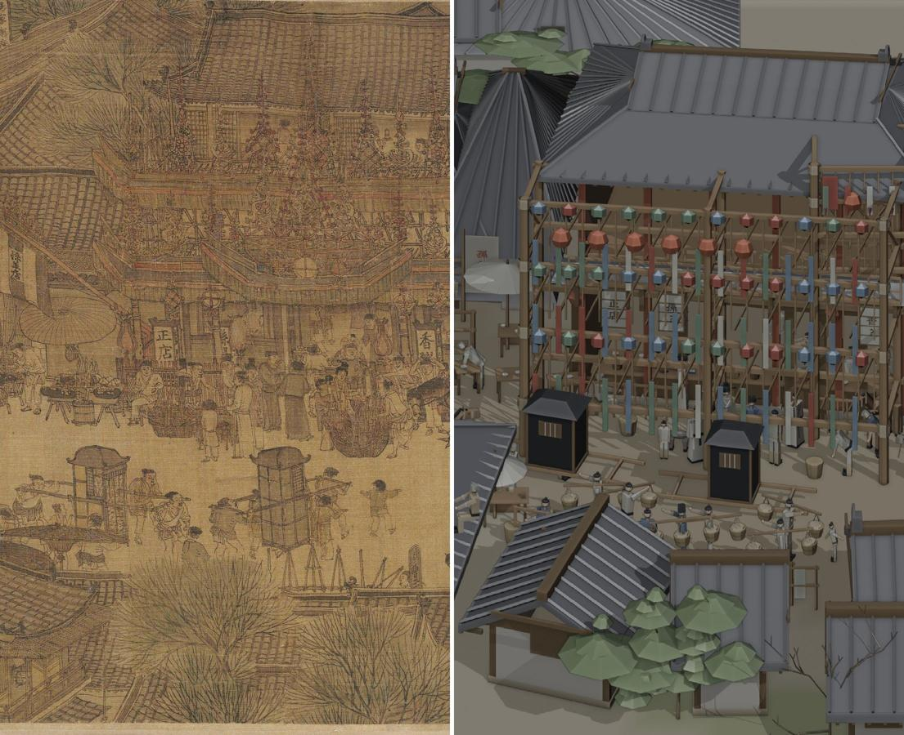
有误与缺失（52）
编号
类型
判定
问题
修正
H0135
building
有误
Long low roof (ridge y~1440, x680-1100) absent; only a tall white box at x984-1100 with roof y1212-1400, ~200 px too high.
Single low storey, ridge along x at y1440, eave y1600; walls hidden under eave; check footprint length.
O0223
prop
缺失
Right crest spire with red bud finial absent; pole grid and polyhedral lanterns in its place.
Build huanmen crest spire 240 px tall, red bud top, base (1070,420).
H0136
building
有误
Gable roof at right edge present (roof y1400-1590), but white walls continue ~190 px below the base to y~1790.
Wall height 50% lower so the building ends at y1600; walls mostly under eave.
O0226
prop
缺失
Specific round lattice lantern under right eave absent.
Pale lattice ball lantern 55 px at (988,740).
O0227
prop
缺失
Crest spire absent.
Crest spire 160 px tall, red bud finial, base (982,420).
X0199
structure
有误
A low slat frame exists at x905-985 y975-1010, ~60 px south of the painted fence, plain wood not red.
Move 60 px north to y940 on facade line; red slats; 120 px wide.
O0230
prop
缺失
Red vase lantern at the right gate post absent; only generic lanterns on the grid rail.
Red vase lantern 100 px tall at post, base (936,872).
T0245
tree
有误
Bare tree now present x760-1050 y1500-1800, but twig mass about half as dense and ~300 px wide vs 400.
Crown 400 px wide, 2x branch density, more fine twigs.
O0231
prop
缺失
Crest spire absent.
Crest spire 220 px tall wrapped with red flowers, base (889,420).
F0272
furniture
有误
Still a small stump/tub ~35 px wide at (882,1120); painting has a huge wicker basket ~155 px wide.
Use bbox width: scale ~4x, wicker basket with stalks rising.
O0233
prop
缺失
Diamond lantern box absent.
Diamond lantern box at (827,650).
X0201
structure
有误
Visible as a low rectangular post frame with blue panels at x820-890 y1390-1490, not a tall tripod with knob.
Tripod of 3 leaning poles 107 px tall, knob top, no cloth.
O0234
prop
缺失
Central crest spire absent.
Crest spire 200 px tall on centre axis, base (764,420).
X0202
structure
有误
Hidden behind the over-tall H0138 box; only a blue panel shows.
Visible once H0138 is lowered; tripod 107 px tall.
O0236
prop
缺失
Red flower tower on gate axis absent; pole grid instead.
Flower column 300 px wide x 260 tall, x600-900 y380-640.
O0237
prop
缺失
Large pale ribbed central ball lantern absent.
Pale ball lantern 60 px at (748,656).
X0203
structure
有误
Hidden behind the H0138 box roof.
Visible once H0138 is lowered; tripod 104 px tall.
H0137
building
有误
Main eave at y~400 instead of 265; upper gallery, railing, lattice windows and P0676 not visible.
eave_y 265; expose upper storey y270-420 with railing y400-422.
S0006
sedan
有误
Box bottom y~1225, ~120 px north of base 1345; black box, pyramid cap, no flared canopy.
Umbrella present at x27-190 y653-750: ~80 px too high, ~50 px left, ~35% small, not tilted.
Centre (165,780), diameter 240 px, tilt 20° right.
O0249
prop
有误
An umbrella appears at x27-183 y1056-1150, ~200 px north and half size; painted spot covered by H0139.
Flat ribbed umbrella 320 px wide at y1283-1345 over the stall.
F0278
furniture
有误
Buried under the H0139 roof.
Visible once H0139 fixed; inverted-cone basket on pole stand.
F0279
furniture
有误
Covered by an extra dark roof slab at x0-150 y800-1150.
Remove/relocate that roof; keep table at (32,1015).
P0682
person
有误
Front sedan-2 bearer stands south of the sedan with arms raised, not under the pole.
Attach to the S0006 pole after the sedan moves 120 px south.
P0671
person
有误
Rear sedan-2 bearer detached from the pole.
Attach to the S0006 poles.
P0689
person
有误
Sedan-1 rear bearer not on the S0007 pole.
Attach to the S0007 poles.
P0693
person
有误
Sedan-1 front bearer not on the pole.
Attach to the S0007 poles, head turned back.
P0661
person
有误
Looks like an oversized brown hunched mass at (1000-1100, 950-1060), reads as an animal.
Normal adult scale, dark upper garment, bent pose.
P0691
person
有误
Hidden under H0139 or displaced to (30,1520).
Seat at (224,1392) under umbrella O0249.
P0676
person
有误
Upper-floor figure hidden by the low H0137 roof.
Visible after H0137 eave_y is set to 265.
人群
wine-house front street x 300-1100 y 760-1130：画中约 22 人，模型 14 人。More figures readable than round 1, but all stand inside the pole grid. P0676 upstairs hidden; P0688 seated man hidden by S0007; a big brown hunched shape at (1000-1100, 950-1060).
road x 0-1000 y 1140-1420 (sedans and bearers)：画中约 11 人，模型 10 人。Bucket loads gone. Bearers stand ~80-120 px south of the sedan poles with arms raised into empty air.
foreground stall x 0-320 y 1250-1400：画中约 1 人，模型 0 人。P0691 hidden under H0139; a seated figure at the left edge (30,1520) may be him displaced.
模型多出的东西
(70, 970) Dark gabled roof slab x0-150 y800-1150 at the left edge, covering F0279.
(700, 1000) Huanmen pole grid with white banner strips and red polyhedral lanterns standing in the street, y850-1100.
(495, 1115) Loose sedan poles or beams lying across the road x430-560.
(830, 1420) Blue vertical panels on a low post frame among the drying racks.
(220, 320) Bare ground hole x130-310 y200-440 between the roofs behind the wine house.
tile38 · 477.7–493.5 cm 2/5
正确 12 · 有误 20 · 缺失 9 · 忽略 10
The north-street storyteller ring and the donkey team read correctly, but the big buildings are far too deep. H0143 (孫羊店) is one plain gable plane that also covers the street to its north-west (x 310-700, y 180-500), hiding the big cart, the mule team, the red signboard and the people talking there. H0142 reaches about 200 px too far north (to y≈1030), so most of the south-street crowd, the horse A0101 and the umbrella stalls are buried under or standing on its roof. The roof forms are wrong too: the painting has hipped corner roofs with upturned eaves and an open upper-floor gallery, and the model has flat gables. A cream box building that is not in the painting fills the road at the top left.
得分与判定来自第一轮（修正前）；图为修正后的第二轮渲染，第一轮渲染见下。
第一轮渲染（修正前）
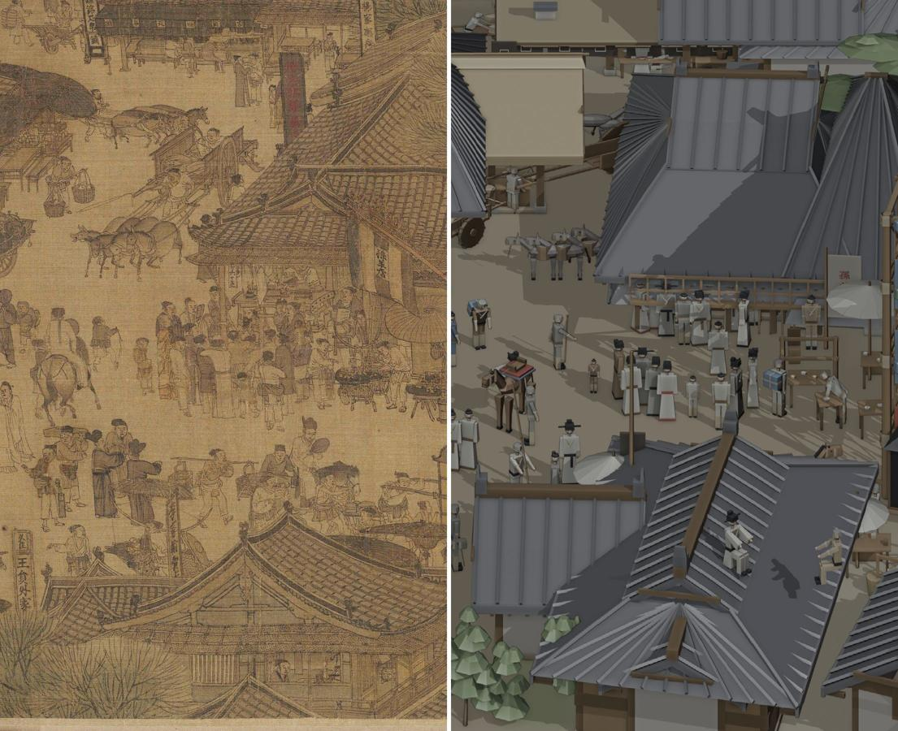
有误与缺失（34）
编号
类型
判定
问题
修正
H0143
building
有误
Single huge plain gable roof x310-850 y180-680 spills over the street NW of the shop; painting has a hipped, multi-eave corner building x450-1100.
Trim footprint: rear/left edge back ~150 px (no roof west of x≈450 above y≈400); roof.type = hip, double eave, upturned corners.
H0142
building
有误
North edge at y≈1030, painting ≈1240; roof buries south-street people/stalls; flat gable instead of cross-gable hip with an open upper-floor gallery.
Shift north wall ~200 px south (depth −30%); roof.type = cross hip with upturned eaves; open upper-floor bay with railings.
H0145
building
有误
Front low gable appears larger and its ridge reaches y≈1420, painting ≈1655.
Vertical board 楊家應症 on post beside top-right shop not visible.
Build vertical board on post at x≈904, y 0-135.
G0029
sign
缺失
Prominent tall red signboard with dark border not built (area covered by H0143 roof).
Build tall red vertical board ~65×235 px standing at x≈722 y≈365.
G0038
sign
缺失
Tall framed standing sign □錦疋帛鋪 at left end of awning shop not built.
Build standing framed sign on short feet at x≈230 base y≈155, 50×155 px.
G0039
sign
缺失
Tall standing sign 久住王員外家 not visible; spot filled by conifer cones.
Build framed standing sign at x≈58 base y≈1510, 50×210 px.
G0034
sign
缺失
Double-framed signboard on the umbrella pole not built; prominent.
Build vertical double-framed board on K0037 pole, x 410-447 y 1205-1425.
X0206
structure
缺失
Tall post with roof cap and cross-bars at right edge not built.
Build thin post ~200 px tall with small cap at x≈1080 base y≈1294.
O0251
prop
缺失
Pale hanging meat carcasses under the shop front eave not built; characteristic of 孫羊店.
Add 3-4 pale hanging carcass shapes from front eave beam x 593-660 y 653-753.
O0254
prop
缺失
Large bell-shaped straw bundle under the umbrella not built.
Add straw-textured bell/cone ~75×105 px at x≈482 base y≈1410.
O0250
prop
缺失
Stack of tiered food boxes on a stand not built (small but readable).
Add 3-tier box stack on stand at x≈863 base y≈1269.
F0285
furniture
有误
Bench hidden under the over-large H0143 roof.
Exposed once H0143 footprint trimmed.
F0287
furniture
有误
Long table under awning hidden by H0143 roof / cream box.
Exposed once H0143/H0146 fixed.
F0282
furniture
有误
Upper-floor table invisible: H0142 modelled closed, roof slope covers the open upper gallery.
Give H0142 an open upper-floor front with table and seated figures visible.
P0714
person
有误
Seated man stands/sits on top of the H0142 roof at x≈640 y≈1300.
Fixed by moving H0142 north wall south ~200 px.
P0701
person
有误
Figure (P0701 or P0696) sits on the H0142 roof at x≈850 y≈1320.
Same roof fix; ground at street level.
P0752
person
有误
Rider reads as a flat red box on the horse, not a seated figure.
Use ride pose figure with torso and hat on A0110.
P0703
person
有误
Tall-capped official with fan near roof edge; lower body cut by H0142 roof.
Roof fix; add round fan beside face.
P0728
person
有误
Porter with shoulder pole and lattice box not visible; buried under roof.
Roof fix; pole x 421-635 with box at left end.
人群
north street storyteller ring x 380-900 y 700-1050：画中约 30 人，模型 25 人。Ring readable; figures too uniform white; front row lacks seen-from-behind dark robes.
road / cart x 200-650 y 210-540：画中约 6 人，模型 2 人。P0718, P0723, P0729, P0737 hidden under H0143 roof and cream box; P0746 visible but cart missing beside him.
top street x 0-900 y 0-420：画中约 12 人，模型 5 人。P0717, P0721, P0712, P0702 under H0143 roof; P0756 visible top left.
south street x 0-1100 y 1030-1420：画中约 20 人，模型 9 人。Most buried under H0142 roof; some figures sit on top of the roof.
模型多出的东西
(150, 260) Cream-walled box building x 0-300 y 130-390 sitting on the road where the umbrella shade and mule team are.
(40, 340) Dark tiled roof slope at left edge x 0-90 y 150-530 over road and stall area.
(1060, 830) Tall wooden lattice/scaffold frame at right edge x 1000-1100 y 460-1200.
tile39 · 490.6–506.4 cm 2/5
正确 3 · 有误 19 · 缺失 6 · 忽略 10
Layout reads roughly right: big Liu shop hip roof, low shed, stall crowd, cask cart and bottom umbrellas sit near their painted places. Worst problems: both cart donkeys are missing; all six stall umbrellas are dark navy domes on poles ~45% too tall, floating 130-170 px above painted canopies; the Liu shop front (huanmen, tall sign) is ~220-250 px south and its roof hides the far street and H0148. H0148 is a plain beige block instead of a dark-roofed open shop, the cask cart is ~130 px north with wrong load, and the crowd wears far too many conical straw hats.
得分与判定来自第一轮（修正前）；图为修正后的第二轮渲染，第一轮渲染见下。
第一轮渲染（修正前）
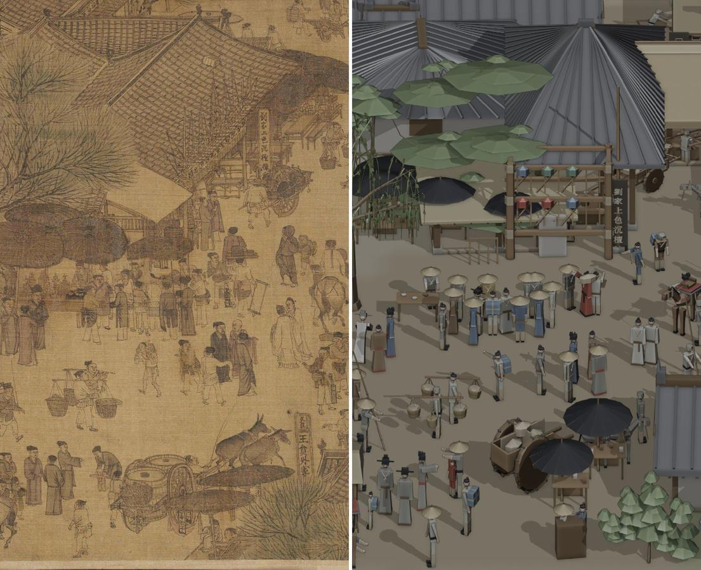
有误与缺失（30）
编号
类型
判定
问题
修正
H0147
building
有误
Built as a tall block with grey roof at x 960-1100 y 1185-1500; painting shows only a low roof corner y 1345-1470.
Lower height ~40%; move ~35 px right so only roof corner shows at x>995.
V0014
vehicle
有误
Wheelbarrow not visible; hidden behind the tall beige H0148 block, only a figure seen at x 940-1010 y 30-80.
Fix H0148 height so far street shows; check wheelbarrow at base (1028,130).
F0290
furniture
有误
Counter with stacked round goods not visible; H0148 front reads as a closed beige wall.
Open H0148 front so counter at (1002,372) shows.
H0148
building
有误
Painted very dark heavy roof (x 860-1100 y 140-330); 3D shows a tall plain beige block, H0149 eave covers its left part.
Dark tile roof, lower ~30%, open front; trim H0149 eave so H0148 starts at x 860.
F0291
furniture
有误
Hidden under the H0149 eave, which reaches x 985 at y 450-530.
Shorten H0149 right eave ~110 px so bench at (950,462) is visible.
T0250
tree
有误
Built as stacked green cones (fir) x 680-1050; painting is a spreading pine with long bunched needles, as T0251.
Use the pine pad form (low spreading needle clusters), not fir cones.
V0015
vehicle
有误
Only a solid wheel at x 920-985 y 530-605 visible, ~80 px north; dark round bundle load not seen.
Move ~80 px down to base (910,690); show inclined frame with dark round bundles.
F0292
furniture
有误
Hidden under the H0149 eave.
Trim H0149 eave; keep table at (894,522).
A0111
animal
缺失
Second harnessed donkey not visible in 3D; stall tables and umbrella occupy its place.
Place donkey at base (840,1472), facing right, head lowered, harnessed to V0016.
G0040
sign
有误
Sign spans y 568-780, ~220 px south of painted y 342-548.
Move ~220 px north to base (833,560) at H0149 front corner.
X0207
structure
缺失
Lattice railing on far street hidden by H0149 roof that rises to y~60.
Lower H0149 ridge so railing at y 110-142 shows.
K0039
stall
有误
Canopy at y 1260-1380, ~170 px too high; dark navy dome ~200 px wide vs flat brown 310 px.
Pole height ~45% lower; flat canopy, tan-brown, diameter +50%.
A0112
animal
缺失
Front donkey with ears up not visible in 3D.
Place donkey at base (768,1480) facing right, harnessed to V0016.
O0258
prop
缺失
Long tray of goods on vendor P0765's head not built; prominent in painting.
Build long tray (~110 px) with dark goods on P0765's head.
F0294
furniture
有误
Built as a tall solid box (y 1626-1762, ~135 px high); painting shows low counter ~55 px.
Height ~60% lower; open low counter.
G0042
sign
缺失
Long inscribed board along lower eave of Liu shop not built.
Build horizontal board ~185 px wide on H0149 front under huanmen, base y 562.
Lower H0149 ridge; parasol at x 558-768 y 28-112 must show.
K0041
stall
有误
Canopy at y 1390-1500, ~150 px too high; dark domed and small vs flat brown 280 px; pole hidden behind table.
Pole ~45% lower; flat tan-brown canopy; remove tall table below.
H0149
building
有误
Hip roof present but tile courses fan radially like a cone; ridge too high hides far street; eave over-extends right to x 985; huanmen frame ~250 px south and short.
Lower ridge ~60 px, parallel tile courses, trim right eave to x~870; huanmen tops to y 215, base y 565.
V0016
vehicle
有误
Cart at y 1320-1555, ~130 px north; load is a box with white cones, not two lying casks; solid disc wheels.
Move ~130 px south to base (512,1700); load two large lying casks; spoked wheel.
K0042
stall
有误
Canopy at y 600-690, ~140 px too high; dark navy dome vs low flat brown.
Pole ~45% lower; flatter tan-brown canopy.
K0043
stall
有误
Canopy at y 560-645, ~130 px too high; dark navy, smaller than painted.
Pole ~45% lower; brown flat canopy ~215 px wide.
T0251
tree
有误
Pine pads extend to x~570 (painted to 445) over H0149 roof; thin hanging green sticks at x 0-250 y 600-750 read as bamboo.
Shrink canopy ~25% to x<=445; remove dangling sticks; dark branching trunk.
K0044
stall
有误
Canopy ~150 px too high (y 490-600 vs 638-722); dark navy not brown.
Pole ~45% lower; flat brown canopy.
K0045
stall
有误
Large umbrella on tall pole not readable at x 0-205 y 690-1000; canopy sits far higher, area under it empty.
Pole to painted height (canopy y~690-860); large flat brown canopy.
P0777
person
有误
Cart driver not visible at the cart front.
Seat on V0016 shaft front after moving cart to base (512,1700).
P0761
person
有误
Railing sitter hidden by H0149 roof.
Lower H0149 ridge.
P0763
person
有误
Railing sitter hidden by H0149 roof.
Lower H0149 ridge.
P0765
person
有误
Tray vendor carries a small box, not the long tray.
Attach O0258 long tray on head.
P0774
person
有误
Seated vendor hidden behind tall box counter.
Lower F0294 counter.
人群
stall crowd under left umbrellas x 0-650 y 750-1100：画中约 30 人，模型 22 人。About 10 figures wear conical straw hats; painting shows caps and headcloths. Crowd sparser under K0044/K0045.
centre street x 600-1000 y 700-1270 (tray vendor, monk group, scholars)：画中约 18 人，模型 14 人。White-robed scholars P0757/P0760 read well. Tray vendor lacks long tray; monk group not clearly distinguishable.
lower left x 0-600 y 1250-1800 (porters, child, pointing man, cart)：画中约 18 人，模型 15 人。Porters with baskets good; robed men with black hats good. Cart driver not visible.
far street x 400-1100 y 0-160：画中约 8 人，模型 2 人。Figures hidden by the over-tall H0149 roof and H0148 block.
bottom stall x 600-760 y 1650-1760：画中约 2 人，模型 1 人。Seated vendors hidden by the tall box counter F0294.
模型多出的东西
(640, 580) Coloured hexagonal lanterns (red, blue, green) on the huanmen frame; painting has plain tied poles.
(680, 1500) Two tall stall tables under K0039/K0041 where the painting shows the donkeys.
(1000, 270) Tall plain beige block face (H0148 built as closed box).
(120, 680) Dangling bamboo-like green sticks below pine T0251.
tile40 · 503.6–519.3 cm 3/5
正确 16 · 有误 17 · 缺失 7 · 忽略 3
The layout still reads as the same scene: the 趙太丞家 clinic at left, the well and white wall in the middle, the willow, the road crowd and the mat-awning booth at the bottom. Almost none of the round-1 booth and well problems are fixed: X0213 is still a solid grey box (x 508-725, y 1425-1785) that hides the 解 sign, the cask and the table, and the awning X0209 is still ~105 px too low with a box valance, so the seated heads poke above it. The two large parasols and the peddler's rack are still not built, the 井 frame still stands upright on a raised plinth, and the clinic roof is still one flat untextured slab. The willow now has a thick trunk but its crown is stiff straight spikes instead of dense drooping branches; bamboo clumps are flat sprigs lying on the roofs.
第二轮复核（修正生成器与布局后，第一轮得分 3/5）：Improved: hip-face tile rows now parallel; rider P0811 now seated on the horse; willow has a thick trunk; G0046 now lettered; F0306 bench partly visible. Still wrong: X0213 solid box, low valanced awning, missing parasols/rack/解 sign, upright well frame on plinth, flat clinic roof slab, low plaques, sparse spiky willow, bamboo and shrubs, navy dome and frond-tree extras.
第一轮渲染（修正前）有误与缺失（30）
编号
类型
判定
问题
修正
O0262
prop
缺失
No tall tiered goods with sprays at (1040,900); only a plain table.
Add 3 stacked tiered objects ~0.8 m high on the table under the parasols.
O0263
prop
缺失
Upper ribbed parasol x 915-1100, y 635-735 not built; a navy dome sits ~100 px higher instead.
Build a ribbed brown mat parasol ~3.5 m diameter on a tall pole, canopy top near y 640.
O0264
prop
缺失
Lower ribbed parasol x 840-1100, y 700-850 not built; dominant element of the painting.
Build a second ribbed parasol ~3.5 m, tilted toward the viewer, pole foot near (960,1000).
T0252
tree
有误
Only a few flat bamboo sprigs lying on the roofs near (700,60); painting has a tall dark feathery clump x 705-850, y 40-250.
Upright bamboo-clump model, culms ~6 m, dense dark leaf sprays rising above the ridges.
F0298
furniture
有误
Table under the awning still hidden behind the X0213 box and the awning valance.
Fixed by opening X0213 and removing the X0209 valance.
T0253
tree
有误
Thick conical trunk ok (~30 px right), but crown is sparse stiff straight spikes, not dense drooping willow branches over x 350-1100, y 150-650.
Replace spikes with 4-5x more drooping curved branchlets; fork trunk at y~650, taper it 40% thinner.
X0209
structure
有误
Top at y~1370 vs painted 1255-1375; starts x 575 not 450; front valance hangs to y~1500; heads poke above.
Thin flat mat on 4 posts, raise ~1 m, extend left to x 450, remove valance, tilt toward viewer.
X0210
structure
缺失
Flush diagonal brick paving around the well still absent; a raised grey stone plinth instead.
Build flush brick square x 480-880, y 860-1000, 5 cm high; delete the plinth.
X0211
structure
有误
井 frame still stands upright like a ladder/shelf on a ~60 px raised plinth; painting shows it flat on the paving.
Lay the frame flat, height 0.2 m, on ground level; remove plinth.
H0155
building
有误
Still a pointed pyramid peak near (670,80); painting shows layered eaves with a round knob.
2 stacked eave tiers with a round finial, ~30% lower.
O0265
prop
缺失
Peddler P0827 still has no tall back-rack with canopy and hanging toys.
Attach a ~2 m back-rack with flat canopy, hanging goods and hooked staff to P0827.
G0045
sign
缺失
Square 解 board on the A-frame crossbar not built.
Hang a 0.4 m square 解 board on the right panel of X0213 at (615,1555).
T0254
tree
有误
No upright bamboo clump at x 560-655, y 10-215; only roofs and a stray sprig.
Upright bamboo-clump model ~2x taller than the roof ridges.
X0213
structure
有误
Still a solid grey box x 508-725, y 1425-1785 hiding the cask, sign and crowd; spec is an open A-frame.
Two thin leaning boards meeting at apex (592,1420), open underneath, crossbar for G0045.
F0300
furniture
有误
Squat wide tub; painting shows a tall lidded bucket with handle.
1.5x taller, narrower, add lid and arched handle.
F0301
furniture
有误
Tall hooped barrel invisible, enclosed by the X0213 box.
Shows once X0213 is an open A-frame; keep height ~1.2 m.
F0302
furniture
有误
Squat tub; painting shows a tall bucket with an arched handle.
1.5x taller, add arched handle.
T0255
tree
有误
Hidden behind the roofs; no dark clump rising above the ridge at x 470-570, y 70-235.
Upright bamboo clump, ~2x taller, visible above the roof ridge.
X0214
structure
缺失
Wooden box enclosure with pitched top between clinic and well not built.
Build a 1.2 m wooden box with pitched lid and lattice side at (442,890).
G0046
sign
有误
Now lettered, but still freestanding on the ground x 320-355, y 870-1050; painted on the post, y 605-960.
Mount on the clinic's right front post, raise ~260 px (top at y 605), base y 960.
T0256
tree
有误
Still bundles of bare spear-like stems; painting shows soft shrub tops.
Low rounded leafy bush mounds ~0.8 m.
G0047
sign
有误
Plaque order right, but row at y~730 vs painted 615-650 (~90 px low); ornamental plaques between missing.
Raise plaque row ~0.7 m; add 3 ornamental plaques between the characters.
H0159
building
有误
Roof still one flat untextured mono-pitch slab x 0-430, y 400-700; painting has tiered tiled roofs and a taller front.
2-tier tiled hip-gable roofs, trim to x<=400, raise front eave ~0.6 m.
T0257
tree
有误
Spear-like stem bundles instead of shrub crowns.
Leafy rounded shrub/tree-crown mounds at the bottom-left edge.
P0823
person
有误
Head pokes above the awning top.
Raise X0209 ~1 m.
P0825
person
有误
Head pokes above the awning top.
Raise X0209 ~1 m.
P0821
person
有误
Head pokes above the awning top.
Raise X0209 ~1 m.
P0812
person
有误
Head pokes above the awning top.
Raise X0209 ~1 m.
P0830
person
有误
Tilted ~35° in a long blue robe at (620,1190), leaning on nothing; the awning edge he leans on is 100 px lower.
Raise X0209 so its top edge is at y~1265 under his hands.
P0827
person
有误
Peddler has no back-rack (O0265).
Attach the rack prop.
人群
clinic hall x 0-400 y 650-1000：画中约 5 人，模型 3 人。Seated patient, woman with child and attendants reduced to 2-3 generic white figures.
well x 400-850 y 730-1010：画中约 4 人，模型 4 人。Count matches; P0820 bends over the upright frame; P0833 water carrier with pole and buckets correct.
road x 250-1100 y 950-1300：画中约 16 人，模型 15 人。Count close; nearly all figures still identical blue jackets with X straps and black hats; peddler rack missing; P0830 leans into empty air.
booth crowd x 600-1100 y 1380-1770：画中约 22 人，模型 11 人。Half the crowd hidden by the X0213 box and the valance; rear seated heads stick up above the awning; rider on the horse now visible.
模型多出的东西
(1000, 560) Large dark navy dome/disc among the willow branches, x 912-1100, y 487-637; nothing like it painted.
(950, 380) Palm-like frond tree x 866-1022, y 290-490; painting has willow branches and roofs there.
(70, 990) White open parasol on the road in front of the clinic; not painted here.
(430, 1440) Foreground building (other tile) built as a small walled hut with a hip roof; painting shows a huge tiled roof covering x 0-640, y 1220-1800, bottom-left is empty ground.
tile41 · 516.5–528.0 cm 3/5
正确 10 · 有误 8 · 缺失 3 · 忽略 3
The layout is right: compound halls at the top, gatehouse with the railing and willow on the left, clinic front with signs on the right, road, then pines and a pavilion in the foreground. But the gatehouse is a closed box with a narrow door and a solid white block where the open gate and the seated man should be. The clinic signs are shuffled: an extra 五勞七傷調理科 board stands in front of the gate, and G0048 stands on the ground instead of on the clinic post. The large roof H0162 at the bottom right is missing (bare ground with reeds), the stepped roofs H0160 are replaced by one large flat roof plane, and the road figures are wrong (an open parasol, and a brown horse with no rider).
得分与判定来自第一轮（修正前）；图为修正后的第二轮渲染，第一轮渲染见下。
第一轮渲染（修正前）有误与缺失（16）
编号
类型
判定
问题
修正
A0114
animal
有误
The horse is built brown and blocky with a red saddle, about 60 px too high (y 1040-1150); the painting shows a white horse with a saddle cloth, base at y 1178.
colour = white; move 60 px down (toward the viewer); add rider P0837
H0160
building
有误
The stepped tile roofs at x 640-804, y 355-505 are not readable; one huge plain grey roof plane covers x 550-804, y 310-700.
build as 2-3 small stepped gable roofs; shrink the big right-hand roof plane so it ends near y 500
H0162
building
缺失
The large diagonal tile roof at the bottom right (x 560-804, y 1330-1800) is absent; the 3D shows bare ground with a clump of reeds.
check its placement (probably off-frame or sunk); build a large hip roof, ridge running from upper right to lower left
G0048
sign
有误
The 五勞七… board stands on the ground at y 860-1000, about 150 px lower than painted, instead of being fixed on the clinic's left front post.
attach to the post at x 665, span y 668-845 (raise about 1.5 m); make it narrow
H0163
building
有误
Built as an open shed facing the viewer, with a symmetric hip roof spanning x 440-804; the painting shows a hip-and-gable roof seen from above with a diagonal ridge, over x 528-800.
roof.type = hip-and-gable; rotate about 35° so the ridge runs diagonally; shrink width about 25%
G0049
sign
有误
The 治酒所傷真方集 sign is at the right x but too short (top at y 830 instead of 630), and a second □□□□ board is glued beside it.
height about 2x; a single narrow tall board on a footed base; remove the adjacent □ board
H0166
building
有误
The gatehouse reads as a closed box: one narrow door (x 370-450), no bracket sets, and a solid white wall block at x 225-335; the painting has a wide open gate (x 290-560) with both leaves open.
build a 3-bay gatehouse with an open central passage about 2.5x wider, open door leaves, and dougong under the eave; remove the white block
F0312
furniture
缺失
The large screen covered in character marks inside the main hall is clearly visible in the painting under the eave (x 330-520, y 258-332); the 3D hall interior is empty and dark.
add a light-coloured screen panel with a text texture inside the hall front
X0216
structure
缺失
The two large door-pier blocks at the foot of the gate posts are absent.
add 2 stone blocks about 0.6 x 0.6 x 0.5 m at the gate posts (x 340 and 410)
H0167
building
有误
The roof and walls are fully visible at x 90-430, y 1270-1500 and shifted about 100 px left; the painting shows only faint tiles through dense pine.
move 100 px right; lower it or let the pine canopy cover it
T0261
tree
有误
Built as a thin straight bare trunk; the painting shows a gnarled, arching trunk whose main branch reaches right to x 390.
trunk 2x thicker and gnarled; add a long branch arching right about 200 px
P0841
person
有误
Holds an open parasol overhead; the painting shows a long closed rounded object (a rolled umbrella) carried horizontally on the shoulder.
replace with a closed rolled umbrella carried horizontally on the right shoulder
P0837
person
有误
The rider is not visible on the horse A0114.
seat the rider on the horse, with a broad flat hat and an upright rod
P0845
person
有误
Holds a pole upright with one basket; the painting shows a shoulder pole across both shoulders with two hanging loads.
pose = carry_pole, pole horizontal, two loads
P0847
person
有误
The seated man outside the gate is not visible; the white wall block occupies his spot.
remove the block; seat him on F0313, leaning forward
P0843
person
有误
The sack porter is not visible in front of the signs.
check its placement; it may be hidden behind the displaced G0048/G0049 boards
人群
in front of the gate and signs, x 220-640 y 650-980：画中约 5 人，模型 1 人。Only one white figure (near P0842) is visible. The seated man, the man at the gate post and the sack porter are hidden by the white block or the misplaced signs, or are absent.
clinic interior, x 680-804 y 700-900：画中约 4 人，模型 3 人。Roughly right; the figures are all white-robed, so the woman holding the child is not distinguishable.
road, x 380-804 y 1000-1250：画中约 3 人，模型 2 人。There is no rider on the horse, and the servant holds an open parasol.
模型多出的东西
(478, 880) A tall 五勞七傷調理科 signboard stands in front of the gate door; there is no sign there in the painting.
(290, 830) A solid white box or wall block beside the gate, where the painting has an open post and the seated man.
(760, 1720) A clump of reeds or spiky grass on bare ground where the roof H0162 should be.